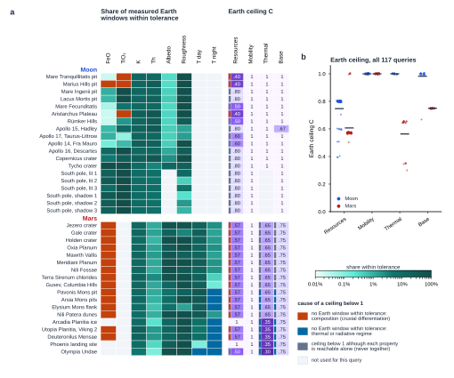
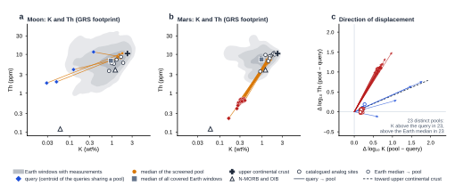
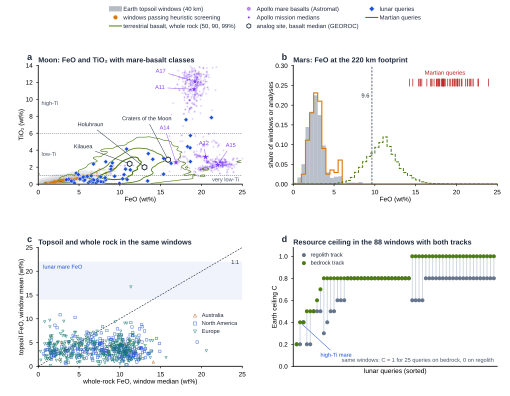
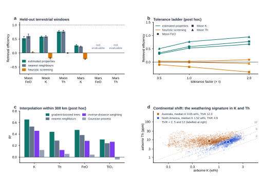
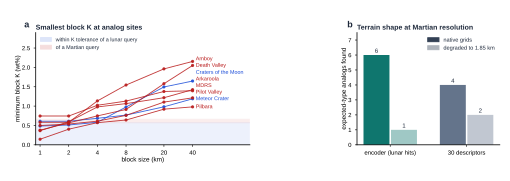
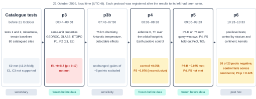
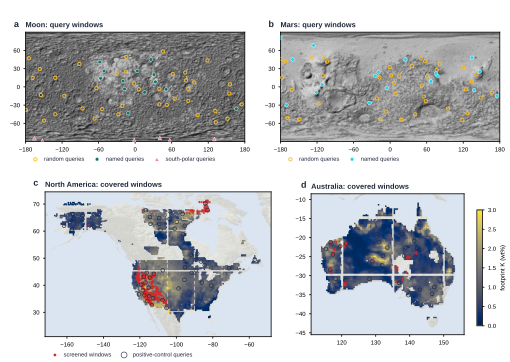
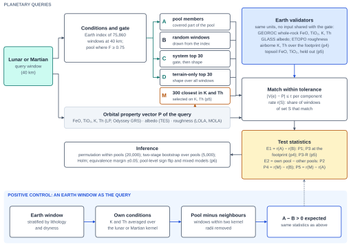
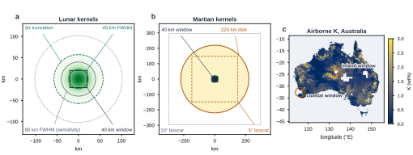
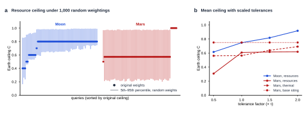

Research Article · Planetary Analogs and Site Selection
The Earth Ceiling: Quantifying the Limits and Systematic Biases of Terrestrial Analogs for the Moon and Mars
1Independent research team (no institutional affiliation)
Key Points
- Orbital-scale limits separated by cause: At orbital spectrometer scales (40–220 km), no terrestrial topsoil matches lunar FeO, TiO₂, K and Th simultaneously—a gap driven partly by Earth’s surface weathering and partly by planetary crust evolution.
- Quantitative ranking beats qualitative screening: Traditional setting-based analog selection enriches known analog classes 12-fold but systematically biases candidates toward K- and Th-rich continental crust, whereas direct property ranking reliably retrieves matching sites.
- A modular protocol for mission planning: Our boundary-condition inventory pairs field sites (for terrain and operations) with tailored simulants (for feedstock chemistry) and test chambers (for extreme thermal and illumination regimes).
Abstract
Terrestrial analogs are defined by function, yet they are traditionally selected using qualitative terrain descriptions. To quantify how closely Earth can reproduce lunar and Martian environments, we harmonized 117 lunar and Martian query windows with 75,860 terrestrial windows in shared physical units, spatial support and sensing depth. We define the Earth ceiling as the highest functional match score achievable by any measured terrestrial site.
At the 40–220 km footprint of orbital spectrometers, no terrestrial topsoil reproduces full lunar resource chemistry (mean ceiling 0.75). Martian crustal FeO exceeds all terrestrial topsoil footprints, while Martian night temperatures and lunar cold traps fall outside Earth’s natural range—bounds that hold across random weightings and doubled tolerances. Comparing weathered surface tracks against whole-rock bedrock reveals two distinct causes: bedrock matches all four lunar resource properties for 25 of 59 queries (versus zero for topsoil), showing that terrestrial weathering masks highland-like compositions, whereas high-titanium mare basalts and iron-rich Martian crust remain genuinely rare even in Earth’s rock record. While kilometre-scale patches matching lunar K and Th appear in 65% of windows, they average out at orbital scales.
Furthermore, although heuristic setting-based screening enriches catalogued analogs 12-fold, it systematically shifts candidates toward K- and Th-rich continental crust across all 20 candidate pools. By contrast, ranking candidates directly by harmonized properties dramatically improves retrieval efficiency (0.27–0.77 versus −0.21 to 0.02). We translate these findings into a modular boundary-condition inventory that allocates terrain rehearsal to field sites, feedstock chemistry to laboratory simulants, and extreme thermal regimes to vacuum chambers.
Keywords: planetary analogs · Moon · Mars · comparative planetology · gamma-ray spectroscopy · in situ resource utilization · spatial prediction · Artemis · Mars 2020
1Introduction
1.1 Planetary analogs as functional inference
Terrestrial analogs are an instrument of inference. A property observed, or a procedure rehearsed, at a site on Earth is taken to stand for the corresponding property or procedure on the Moon or Mars. Field campaigns at analog sites have validated instruments, tested rover trafficability, rehearsed sampling and extravehicular activity, exercised communication delays and trained crews for decades (NASA, n.d.; Léveillé, 2009; Preston & Dartnell, 2014), and the inference they license is explicitly functional: a site is an analog for the properties on which a given purpose depends (Foucher et al., 2021). A basaltic lava field may serve a mobility test and still differ from the feedstock chemistry of an in situ resource utilization (ISRU) trial, and neither may reproduce the thermal environment that a habitat must survive.
Analog sites are selected mainly from expert experience and curated lists such as NASA’s Planetary Analog Explorer (NASA Science, n.d.), and they are characterized by setting: arid, unvegetated, basaltic, volcanic, cold. The Atacama Desert, the Hawaiian volcanoes and the McMurdo Dry Valleys for Mars, and young basaltic fields such as Craters of the Moon for lunar lava terrains, are canonical examples (Table S23). Selection by setting has practical strengths: such sites combine several features of interest, are accessible and carry decades of prior work. What it has not provided is a quantitative statement of how closely a site reproduces the measured properties of a particular target, or of how closely any place on Earth could. Planetary differentiation has given Earth, the Moon and Mars crusts of different composition (Taylor & McLennan, 2009), so a setting class defined with terrestrial geology in mind may carry terrestrial geochemistry with it.
The aim of this study is therefore not to rank field sites against one another or to replace them, but to give each a boundary-condition inventory: which measured properties of a given target it reproduces, at which spatial scale and sensing depth, and which must be supplied by laboratory simulants or test facilities instead. Operations, logistics, crew training and mobility depend largely on properties that terrestrial sites supply well, and the results below confirm this for kilometre-scale roughness; the inventory makes explicit where the remaining properties have to come from.
1.2 The quantitative harmonization gap
Comparing planetary targets and terrestrial sites in the same quantities is less straightforward than it appears. Lunar and Martian compositions come from orbital gamma-ray and neutron spectroscopy with footprints of tens to hundreds of kilometres (Lawrence et al., 2002; Boynton et al., 2007; Wilson et al., 2015; Taylor et al., 2010), whereas terrestrial geochemistry comes from airborne gamma-ray surveys, soil samples and rock analyses whose supports range from hand specimens to kilometres (Minty et al., 2009; Duval et al., 2005; Smith et al., 2013; Lehnert et al., 2000). Field tests, in turn, take place on outcrops metres to hundreds of metres across. Topography, albedo and surface temperature differ in resolution, illumination geometry and local time. Digital soil mapping predicts terrestrial properties beneath cover from environmental covariates (Poggio et al., 2021), and global lithological maps describe parent material (Hartmann & Moosdorf, 2012), but these products are rarely set against planetary measurements at matched support. Related work has compared Martian and terrestrial imagery (Meng et al., 2024), transferred landform detectors across bodies (Silburt et al., 2019) and ranked lunar polar regions by measured hydrogen, ice stability and illumination (Flahaut et al., 2020; Peña-Asensio et al., 2025); here the properties themselves are harmonized.
Scale therefore has to be stated with every result. Planetary composition is measured at the 40–220 km support of orbital spectrometers, so the primary comparison is made at that support, and its conclusions concern the regolith that an orbital footprint averages, a landing region or a regional resource survey, not individual outcrops. Because a reader may reasonably object that local outcrops are averaged away at that scale, the analysis follows the same comparison down through kilometre-scale airborne blocks to individual whole-rock analyses (Section 2.1), and it separates the weathered surface from the underlying rock by scoring both.
1.3 Research questions and contributions
We address three research questions in a property space harmonized in units, spatial support and sensing depth across Earth, the Moon and Mars. RQ1 concerns feasibility and its bound: under multi-property, same-unit constraints, does Earth contain windows that reproduce the composition and physical environment of lunar and Martian targets, at the scale of the regolith and at the scale of bedrock; what limits the best attainable match; and how much of any compositional gap reflects the rocks of Earth rather than the weathering of its surface? RQ2 concerns the validity of heuristic analogs: do candidates selected by qualitative setting criteria, and the canonical analog sites chosen in the same way, approach that bound, or are they systematically displaced in property space? RQ3 concerns generalizability: how far can terrestrial properties be predicted where they are unmeasured, how do they change with spatial support, and what limits their transfer across regions?
Figure 1 shows the property space with real data. Lunar and Martian queries lie at high iron and low potassium, terrestrial regolith windows at low iron and higher potassium, and terrestrial bedrock between the two; high-titanium mare basalt and KREEP basalt from the Apollo collections, mid-ocean-ridge basalt and the upper continental crust mark the end-members. The Earth ceiling of a target and use is the best score that measured terrestrial windows reach within stated tolerances, computed separately for regolith (topsoil and airborne measurements) and for bedrock (whole-rock analyses). Heuristic screening selects terrestrial windows by setting, and if that selection sits at terrestrial composition, its candidates lie farther from the target than the windows retrieved by properties.
The study contributes four things. It defines the Earth ceiling formally, at regolith and bedrock scale, inventories the properties that Earth cannot supply at orbital scale with their causes and their sensitivity to weights, tolerances and spatial support, and separates the part of the compositional gap that terrestrial weathering produces from the part that planetary differentiation does. It shows, in pre-registered tests with independent terrestrial measurements, that heuristic setting criteria reproduce expert classes while displacing candidates toward the composition of the continental crust. It explains why unmeasured terrestrial chemistry cannot be extrapolated across continents from terrain and climate, while it can be interpolated near measurements. And it turns these results into a modular allocation of analog uses among field sites, laboratory simulants and test facilities, worked through for the Artemis south-polar region and for Jezero crater. The products are candidates and requirements for further study rather than validated analogs.

2Methods: A Unified Cross-Body Property Space
Figure 2 summarizes the framework. Observations of the three bodies are harmonized in spatial support, sensing depth and units, mapped to a common property vector along a regolith and a bedrock track, and evaluated by the Earth ceiling of each target, by retrieval efficiency on held-out terrestrial windows, by tests of heuristic screening and by the dependence of all three on scale and region.

2.1 Spatial harmonization and multiscale discretization
Targets and candidates are square tangent-plane windows of side L ∈ {20, 40, 80} km, compared only at equal L. The terrestrial index holds the land windows of ETOPO 2022 (NOAA NCEI, 2022) with at most 5% sea, 484,015 in all (326,374 at 20 km, 75,860 at 40 km and 81,781 at 80 km), and reaches about 84° N–S; the analyses reported here use 40 km windows. The 117 query windows comprise 37 named sites, 19 lunar (including 6 south-polar windows chosen from illumination maps (Mazarico et al., 2011)) and 18 Martian, and 80 windows drawn uniformly on the sphere before any of their values were examined, 40 on the Moon within 60° of the equator and 40 on Mars within 55° (Figure S2).
Orbital gamma-ray spectrometers and airborne gamma-ray surveys both sense the upper few tens of centimetres, in the same units, but their spatial supports differ by orders of magnitude. Terrestrial grids are therefore averaged with the orbital footprint kernel before they are compared with planetary values:
where xk(si) are grid values with data at distance di from the window centre w. The lunar kernel is a Gaussian of 45 km full width at half maximum (σ = 45/2.3548 km), truncated at 3σ, the footprint of a single Lunar Prospector measurement at 30 km altitude (Wilson et al., 2015); the Martian kernel is a 220 km disk, about the radius within which Mars Odyssey receives half of its signal (Taylor et al., 2010). A window counts as covered when at least 80% of the kernel weight has data (9,904 windows at the lunar kernel and 8,079 at the Martian kernel). For the Earth ceiling, lunar chemistry is compared at the support of the query values (40 km window means) and Martian chemistry at the 220 km footprint.
To examine what this averaging hides, the comparison was repeated on a ladder of supports (Figure 3). The native airborne grids (0.01° in Australia, 2 km in North America) were sampled on a 1 km lattice within each window and averaged over blocks of 1, 2, 4, 8, 20 and 40 km, with cells masked where ESA WorldCover (Zanaga et al., 2022) indicates water (at least 10%) or tree, crop and wetland cover (at least 30%) that attenuates gamma rays; the 8 and 20 km blocks span the size of a landing ellipse, and the 1 km block is the finest that the airborne grids resolve. At the finest support, individual whole-rock analyses inside each window stand for hand specimens. At every rung, a window counts as holding a match when at least one sample or block lies within tolerance of some lunar or Martian query in both K and Th. Outcrop-scale geochemistry between hand specimens and 1 km blocks was not available.

2.2 Multimodal chemical–physical alignment: regolith and bedrock tracks
Each window carries a property vector x = (FeO, TiO₂, K, Th, albedo, roughness, Tday, Tnight) in units shared by the planetary body and Earth (Table 1). On the planetary side, FeO, TiO₂, K and Th come from Lunar Prospector (Lawrence et al., 2002; Prettyman et al., 2006; Lawrence et al., 2003) and Mars Odyssey (Boynton et al., 2007) gamma-ray spectrometry, with Ti expressed as TiO₂ (×1.668) and Fe as FeO; Martian albedo comes from the TES Lambert albedo (Christensen et al., 2001); roughness is the median slope after area-averaging to about 1.88 km, the MOLA grid spacing, applied on all three bodies; and Martian surface temperatures at the local times of the MODIS Terra overpass (about 10:30 and 22:30) come from the Mars Climate Database (Forget et al., 1999), a model. The lunar WAC product is I/F at 60° incidence and phase (Sato et al., 2017) rather than an albedo, so it enters only as a secondary proxy, and lunar day and night temperatures lie outside the terrestrial range and are not scored.
Terrestrial chemistry enters along two tracks that differ in what they sample. The regolith track (on Earth, strictly topsoil and surface cover rather than regolith; referred to here as the regolith track for cross-body comparison) uses airborne gamma-ray K and Th from the surveys of Australia (Minty et al., 2009) and North America (Duval et al., 2005), which sense the same upper few tens of centimetres as the orbital instruments, and topsoil FeO and TiO₂ from the USGS soil survey (Smith et al., 2013), the National Geochemical Survey of Australia (de Caritat & Cooper, 2011) and the FOREGS atlas of Europe (Salminen et al., 2005), sampled in the upper 5–25 cm; it describes the weathered surface that a footprint averages and that a rover or excavator meets. The bedrock track uses the median of at least three GEOROC whole-rock analyses of subaerial volcanic or plutonic rock inside each window (Lehnert et al., 2000), drawn from 339,587 analyses, which describes rock as it occurs in outcrop and hand specimen. Of the 75,860 terrestrial windows at 40 km, 4,610 have measured topsoil FeO, 4,165 unattenuated airborne K and Th and 6,172 whole-rock FeO, TiO₂, K and Th; 616 windows have FeO on both tracks and 88 all four properties on both, which allows the two tracks to be compared in the same places. Albedo (GLASS snow-free albedo (Liang et al., 2021)), roughness (ETOPO 2022) and surface temperature (MODIS (Wan, 2014; Hengl, 2018)) are shared by both tracks. For petrological reference, 923 whole-rock analyses of Apollo 11, 12, 14, 15 and 17 basalts were retrieved from the Astromat synthesis of lunar sample data (Astromat, 2026; Lehnert et al., 2019) and classified by TiO₂ following Neal and Taylor (Neal & Taylor, 1992) (very low-Ti below 1 wt%, low-Ti 1–6 wt%, high-Ti above 6 wt%); the composition of mid-ocean-ridge basalt is taken from Gale et al. (Gale et al., 2013) and that of the upper continental crust from Rudnick and Gao (Rudnick & Gao, 2003).
A match is defined by a tolerance τk in physical units, fixed before any terrestrial value was read: FeO ±3 wt%, TiO₂ ±1.5 wt%, K ±0.2 wt%, Th ±2 ppm, albedo ±0.05, roughness ±1° and temperature ±20 K. Being absolute, the tolerances are lenient for low values; ±0.2 wt% K spans about ±200% of a lunar value of 0.1 wt% but ±10–20% of typical terrestrial values.
| Target property | Lunar instrument or product | Martian instrument or product | Terrestrial reference measurement | Support and harmonization |
|---|---|---|---|---|
| FeO, TiO₂ (wt%) | Lunar Prospector GRS (Lawrence et al., 2002; Prettyman et al., 2006) | Mars Odyssey GRS Fe (Boynton et al., 2007); no Ti | Topsoil: USGS (Smith et al., 2013), NGSA (de Caritat & Cooper, 2011), FOREGS (Salminen et al., 2005); whole rock: GEOROC (Lehnert et al., 2000) | Fe and Ti as oxides (TiO₂ = 1.668 Ti); 40 km window (Moon), 220 km disk (Mars) |
| K (wt%), Th (ppm) | Lunar Prospector GRS (Prettyman et al., 2006; Lawrence et al., 2003) | Mars Odyssey GRS (Boynton et al., 2007) | Airborne gamma-ray surveys of Australia (Minty et al., 2009) and North America (Duval et al., 2005) | Orbital footprint kernels applied to terrestrial grids (Equation 1); coverage ≥ 80% of kernel weight |
| Albedo | LROC WAC I/F (Robinson et al., 2010; Sato et al., 2017); LOLA normal albedo (Lucey et al., 2014) (secondary proxies) | TES Lambert albedo (Christensen et al., 2001) | GLASS snow-free albedo (Liang et al., 2021) | 40 km window mean |
| Roughness (°) | LOLA DEM (Smith et al., 2010) | MOLA MEGDR (Smith et al., 2001) | ETOPO 2022 (NOAA NCEI, 2022) | Median slope after area-averaging to 1.88 km on all bodies |
| Surface temperature (K) | Outside the terrestrial range; not scored | Mars Climate Database (Forget et al., 1999) (model) | MODIS MOD11A2 (Wan, 2014; Hengl, 2018) | Local times of the MODIS Terra overpass (about 10:30 and 22:30) |
| Setting criteria (heuristic screening) | USGS Unified Geologic Map (Fortezzo et al., 2020) | USGS global geologic map (Tanaka et al., 2014); SWIM ice (Morgan et al., 2021); OMEGA, CRISM (Bibring et al., 2005; Murchie et al., 2007) | GLiM (Hartmann & Moosdorf, 2012), WorldCover (Zanaga et al., 2022), Köppen–Geiger (Beck et al., 2023), aridity (Zomer et al., 2022), SoilGrids (Poggio et al., 2021), volcanoes (Global Volcanism Program, n.d.) | Categorical verdicts; mean fit F (Equation S1) |
| Estimation covariates | – | – | Setting inputs plus MODIS reflectance (Schaaf & Wang, 2021), cation exchange capacity (Poggio et al., 2021) and terrain code | 40 km window; 90% conformal intervals |
| Polar illumination | LOLA average illumination and permanent shadow (Mazarico et al., 2011) | – | – | 240 m maps aggregated to windows |
GRS, gamma-ray spectrometer. Resolutions, versions and the data used only by the interactive system are listed in Tables S3 and S4.
2.3 A probabilistic multi-attribute retrieval metric
For a query q, a terrestrial window e and a property k, the match probability is
where a measured value enters through the indicator and an estimated value through a normal predictive distribution with mean μk and scale σk = (uk − lk)/(2z0.95) taken from its 90% interval [lk, uk]. A use u is defined by the properties it requires and their weights wu,k: resources, meaning ISRU feedstock (FeO 0.3, TiO₂ 0.3, K 0.2, Th 0.2); mobility (roughness); thermal environment (Tday 0.35, Tnight 0.35, albedo 0.3); and base siting (roughness 0.5, Tnight 0.25, albedo 0.25). The use score and the Earth ceiling are
where Ku(q) is the set of the use’s properties available for the query and Emeas the terrestrial windows with measured values on the track considered. A ceiling of 1 means that at least one measured window lies within tolerance on every required property. A ceiling below 1 has one of three causes, which Figure 4 codes separately: a composition that no measured window reaches, a thermal or radiative regime that none reaches, or properties that are each reachable alone but never in the same window. Because the weights and tolerances are conventions, the ceilings were recomputed under 1,000 random weightings per query and use (Dirichlet with unit concentration) and with all tolerances scaled by 0.5, 1.5 and 2.
To judge a ranking method against held-out measurements, we use the retrieval efficiency
where Ḡ is the mean share, over queries, of a method’s first 30 spatially distinct candidates (centres at least 1.5L apart) that lie within tolerance on held-out measured values, R̄ the same share for random order and Ū that for an oracle ranking by the measured values. RE is 0 for random order and 1 for ranking by the measurements themselves. Because most lunar and Martian chemistry lies at or beyond the edge of the terrestrial distribution, the primary retrieval queries are the terrestrial windows closest to each planetary value, with their neighbours excluded within 115 km (440 km at the Martian footprint), and queries with Ū − R̄ < 0.05 are counted as ones Earth cannot supply.
2.4 Heuristic setting-based screening
To represent current practice, what a query asks of a place on Earth was encoded as qualitative environmental criteria derived from the query’s own maps, in the way an expert would describe a site (Table S5). On the Moon, the setting comes from the dominant unit of the USGS Unified Geologic Map (Fortezzo et al., 2020) and the composition class from Lunar Prospector FeO; on Mars, it comes from the units of the USGS global geologic map (Tanaka et al., 2014), from ground-ice indicators (Morgan et al., 2021) and from OMEGA and CRISM descriptors (Bibring et al., 2005; Murchie et al., 2007). The criteria (dryness, bare ground, cold, frozen ground, basaltic or sedimentary lithology, nearness to basaltic volcanoes, aeolian or hydrated settings and low sun) are evaluated on Earth from GLiM lithology (Hartmann & Moosdorf, 2012), land cover (Zanaga et al., 2022), climate and aridity maps (Beck et al., 2023; Zomer et al., 2022), soils (Poggio et al., 2021) and the volcano catalogue (Global Volcanism Program, n.d.). Each criterion returns match, partial or mismatch, the fit F(e) is their mean (Equation S1), and windows with F ≥ 0.75 form the candidate pool, relaxed to 0.6 and 0.5 when fewer than 600 windows remain. The screening uses no chemistry, albedo or roughness, so these properties test it independently; surface temperature is only partly independent, because the climate maps behind the cold and dryness criteria use MODIS temperatures as covariates (Fick & Hijmans, 2017). Queries with identical criteria receive identical pools, so the effective sample size of every screening test is the number of distinct pools.
2.5 Estimation of unmeasured terrestrial properties
Measured terrestrial chemistry covers a small part of the land surface, so K, Th, FeO and TiO₂ were also estimated for unmeasured windows from global covariates that contain no chemistry (lithology, land cover, climate, soil texture and cation exchange capacity, relief, surface temperature, snow-free albedo, terrain shape and reflectance), with gradient-boosted trees and 90% conformal intervals. Two designs were evaluated: interpolation, with labels within 100 km of each test window hidden (Roberts et al., 2017), and transfer, with an entire continent withheld from training. On identical folds, the trees were compared with nearest neighbours in covariate space and with two interpolators that use location alone. The estimators, intervals, area of applicability and the attention model that was tested against the trees are described in Supporting Information S6.
2.6 Study design: confirmatory and synthesis phases
The work proceeded in two phases. In the confirmatory phase, the tests of heuristic screening and of property-level retrieval followed sequential, forward-registered protocols: for each test, the query values, candidate sets, statistics and decision criteria were written to a protocol file whose SHA-256 hash was recorded before any of the terrestrial data used in that test were read (Nosek et al., 2018), so that neither the candidate pools nor the hypotheses could be tuned to the validation data. Screening was tested with match rates: for a candidate set S and a property, r(S) is the share of windows of S with terrestrial data that lie within tolerance of the query, and the primary statistic is the mean difference between pool members and random windows, Δ = r(A) − r(B), with one-sided permutation tests within pools, two-stage bootstrap intervals over pools and windows and, because pools are few and partly nested, exact sign-flip tests over distinct pools. An Earth-to-Earth positive control applies the same procedure to terrestrial windows used as queries, with criteria derived from their own terrestrial maps and neighbours within two kernel radii removed (Roberts et al., 2017), so that a planetary null can be distinguished from a test without resolution.
The protocols form a sequence in which each was registered after the results of the previous one had been seen, so the programme as a whole is adaptive (Gelman & Loken, 2014), and each hash certifies that its protocol file has not changed since registration. The synthesis phase is exploratory and post hoc. It comprises the Earth-ceiling framework itself, which emerged from the confirmatory results, the bedrock track and its paired comparison with the regolith track, the weight and tolerance sensitivity, the support ladder, the spatial-interpolation baselines, the domain-shift and weathering summaries, the mission-scenario maps, the displacement vectors of the screening pools, the Apollo comparison and the placement of catalogued analog sites in property space. Supporting Information S1 lists every protocol with its outcome and deviations, Table S2 gives the order in which they were run, and Supporting Information S11 reports the synthesis analyses.
3Results: Limits and Discrepancies in Terrestrial Analogs
3.1 The Earth ceiling at regolith and bedrock scale
At the support of the orbital measurements and on the regolith track, the Earth ceiling separates properties that Earth can supply from those it cannot (Figure 4; Table 2). Single-property physical uses are satisfiable everywhere: every query has terrestrial windows within tolerance on kilometre-scale roughness, so the mobility ceiling is 1 for all 117 queries. Composition is not. No lunar query reaches a resource ceiling of 1; the mean is 0.75, and 56 of the 59 lunar queries reach at least 0.5. The Martian mean is 0.61, and the five Martian queries with a ceiling of 1 lack a gamma-ray FeO value, so only K and Th enter their score. No Martian query reaches 1 for the thermal environment (mean 0.56) or for base siting (0.75). Among the 71 use ceilings below 1 of the 37 named queries (lunar thermal and base ceilings, which rest on an albedo proxy, excluded), 18 are limited by a composition that no terrestrial window reaches, 16 by a thermal or radiative regime that none reaches, and 37 by properties that are each reachable alone but never in the same window.
Some properties lie beyond every measured regolith window. For 3 of the 59 lunar queries (Mare Tranquillitatis, the Marius Hills and the Aristarchus Plateau) no terrestrial topsoil window lies within 1.5 wt% of the query’s 5.7–7.8 wt% TiO₂, the closest being 1.6–3.7 wt% away, and the Marius Hills FeO of 21.2 wt% is also out of reach; for these targets the best resource windows, mostly in Western and South Australia, match potassium and thorium only, so the ceiling stops at 0.40. Martian FeO at the footprint scale (14–24 wt%) exceeds every measured terrestrial topsoil footprint (at most 9.6 wt%) for all 52 queries with an FeO value. Martian thorium at the footprint scale (0.2–0.9 ppm) lies below every covered terrestrial window (at least 2.0 ppm) and counts as matched only because the ±2 ppm tolerance reaches the lower edge of the terrestrial distribution. For 8 of the 18 named Martian queries no measured terrestrial surface lies within 20 K of the modelled night temperature (162–202 K); the coldest terrestrial windows, on the Antarctic plateau, average 204 K.
The bedrock track changes the picture for composition but not for its availability. With whole-rock medians, the mean resource ceiling rises to 0.98 for the Moon and 0.995 for Mars, and 55 of the 59 lunar and 57 of the 58 Martian queries have at least one terrestrial window matching every required property. These windows are rare: a median of 41 of the 6,172 whole-rock windows (0.66%) for lunar queries and 6 (0.10%) for Martian queries. Mare Tranquillitatis is matched by a single window, in northeastern Brazil, the Marius Hills by none, and Jezero crater by three, in northeastern Brazil, northwestern Ontario and southwestern Finland (Table 2). The compositions exist in Earth’s rock record, but as isolated occurrences rather than as the regolith that orbital footprints average and field operations traverse.

| Site | FeO (wt%) | TiO₂ (wt%) | K (wt%) | Th (ppm) | Regolith ceiling (windows) | Bedrock ceiling (windows) | Matched at the ceiling | No terrestrial window within tolerance | Where (most windows at the ceiling) |
|---|---|---|---|---|---|---|---|---|---|
| Mare Tranquillitatis pit (Moon) | 18.1 | 7.6 | 0.11 | 2.7 | 0.40 (135) | 1.0 (1) | K, Th | TiO₂ | Western and South Australia |
| Marius Hills pit (Moon) | 21.2 | 7.8 | 0.10 | 4.4 | 0.40 (243) | 0.80 (1) | K, Th | FeO, TiO₂ | Western and South Australia |
| Aristarchus Plateau (Moon) | 18.7 | 5.7 | 0.28 | 8.7 | 0.40 (353) | 0.70 (1) | K, Th | TiO₂ | Western Australia, Queensland |
| Apollo 16, Descartes (Moon) | 7.6 | 0.86 | 0.09 | 2.9 | 0.80 (16) | 1.0 (40) | FeO, TiO₂, Th | – | Oregon, California |
| Apollo 14, Fra Mauro (Moon) | 14.0 | 2.9 | 0.37 | 11.5 | 0.60 (5) | 1.0 (2) | FeO, TiO₂ | – | Washington; western Spain |
| Lunar south pole, high-illumination site (Moon) | 6.7 | 0.09 | 0.04 | 1.9 | 0.80 (6) | 1.0 (105) | FeO, TiO₂, Th | – | Oregon, California |
| Lunar south pole, cold-trap / shadowed site (Moon) | 6.2 | 0.15 | 0.03 | 1.8 | 0.80 (6) | 1.0 (83) | FeO, TiO₂, Th | –* | Oregon, California |
| Jezero crater (Mars) | 21.4 | – | 0.32 | 0.6 | 0.57 (15) | 1.0 (3) | K, Th† | FeO | Alaska, Saskatchewan |
| Gale crater (Mars) | 18.0 | – | 0.34 | 0.6 | 0.57 (28) | 1.0 (7) | K, Th† | FeO | Alaska, Saskatchewan |
| Arcadia Planitia, ground ice (Mars) | – | – | 0.28 | 0.4 | 1.0 (3; K, Th only) | 1.0 (519) | K, Th† | night temperature | Alaska |
| Phoenix landing site (Mars) | – | – | 0.26 | 0.4 | 1.0 (5; K, Th only) | 1.0 (506) | K, Th† | night temperature | Alaska |
| Olympia Undae (Mars) | – | – | 0.16 | 0.2 | 0.50 (377) | 1.0 (445) | K | day and night temperature | Western Australia, Northern Territory |
Query chemistry: lunar values are window means, Martian values footprint means. Matched: properties within tolerance in at least half of the windows at the ceiling. * Lunar temperatures are not scored, but permanently shadowed cold traps, which make up 32–64% of the three shadowed south-polar windows, reach about 25 K (Paige et al., 2010b), far below any terrestrial surface. † Martian Th counts as matched only at the lower edge of the terrestrial distribution; the closest covered terrestrial windows are 1.4–1.8 ppm away. Arcadia Planitia and Phoenix have no gamma-ray FeO value, so only K and Th enter their regolith ceiling. Thermal and base-siting ceilings of the Martian sites: Jezero and Gale 0.65 and 0.75, Arcadia and Phoenix 0.35 and 0.75, Olympia Undae 0.30 and 0.75. Mobility ceilings are 1 for every site. Bedrock ceiling: whole-rock medians of at least three GEOROC analyses per window (6,172 windows with all four properties).
3.2 Surface or rock: two sources of the compositional gap
Whether the regolith ceiling reflects the rocks of Earth or the weathering of its surface can be tested where both tracks are measured in the same windows (Figure 7c, d). In the 616 windows with both topsoil and whole-rock FeO, topsoil holds a median of 3.6 wt% FeO against 8.1 wt% in the rock, is lower in 79% of the windows and in 99.6% of the 270 windows whose rock is mafic (at least 9 wt% FeO), and is uncorrelated with it (Spearman ρ = −0.02); TiO₂ follows the same pattern (0.63 against 1.03 wt%). Airborne potassium resembles whole-rock potassium (median 1.46 against 1.37 wt%; 332 windows), whereas airborne thorium exceeds it (9.4 against 5.1 ppm; 274 windows), as expected where weathering removes mobile elements and retains thorium in resistant minerals, clays and oxides (Dickson & Scott, 1997; Wilford, 2012). In the 88 windows with all four properties on both tracks, whole rock matches every resource property of 25 of the 59 lunar queries and topsoil of none, and the mean resource ceiling rises from 0.69 to 0.84.
The compositional gap therefore has two separable sources. For highland-like, low-titanium and polar lunar targets, which include all six south-polar windows, the composition is present in terrestrial rock at the same places where the regolith fails, so the regolith gap is largely a property of Earth’s weathered and mixed surface. For the high-titanium maria it persists in rock: in the paired windows Mare Tranquillitatis reaches only 0.40 and the Marius Hills 0.20 on the bedrock track, and across all 6,172 whole-rock windows only one matches Mare Tranquillitatis and none the Marius Hills. Martian crustal iron behaves the same way, reached by about 0.1% of whole-rock windows. These are planetary boundaries that petrogenesis, not weathering, imposes (Section 3.6).
3.3 Robustness to weights and tolerances
The regolith ceilings do not depend on the chosen weights in the sense that matters. A ceiling of 1 requires a window that matches every required property, and no positive weighting can create such a window where none exists, so the queries with ceilings below 1 keep them under all 1,000 random weightings. The value of the ceiling does move: averaged over lunar queries, the resource ceiling ranges from 0.63 (5th percentile of the random weightings) to 0.97 (95th percentile), with a median of 0.83 against 0.75 for the pre-set weights, and for the Mare Tranquillitatis pit from 0.26 to 0.86 (Figure S12). Scaling every tolerance by 0.5, 1, 1.5 and 2 raises the mean lunar resource ceiling from 0.62 to 0.75, 0.82 and 0.92, but even at twice the tolerances two high-titanium lunar queries keep no terrestrial window within the TiO₂ tolerance, 47 of the 52 Martian queries none within the FeO tolerance and one Martian query none within the night-temperature tolerance. At half the tolerances, Martian thorium becomes unsuppliable for all 58 queries, which confirms that its match at the pre-set tolerance rests on the lower edge of the terrestrial distribution.
3.4 Divergence between heuristic analogs and property-level matches
Judged against a catalogue of 80 known analog sites, heuristic screening did what it was designed to do. Over 31 named queries, a random top 30 drawn from the candidate pool contained catalogued analogs of the expected type about 12 times more often than a random top 30 drawn from all windows (12.2-fold; 95% CI 7.0–19.1). The enrichment held when any single threshold changed by ±50% (11.1- to 14.8-fold) but depended on keeping the pool small (4.2-fold with a minimum pool of 1,200 windows), and for lunar queries it came almost entirely from one criterion, nearness to basaltic volcanoes (1.3-fold without it; Supporting Information S7). Because the criteria and the catalogue both encode expert reasoning, this shows that screening reproduces expert setting classes. It does not show that screening finds physically matched sites.
Measured in the same units with data that the screening did not use, screened candidates were not detectably closer to their query than random windows. Over the 37 named queries (14 distinct pools), pool members lay within tolerance 1.3 percentage points more often than random windows (95% CI −3.2 to 5.2; p = 0.17), and a pool matched its own queries no better than the pools of other queries (difference 0.004; 95% CI −0.030 to 0.050), which excludes improvements of about five percentage points or more. Property by property, screening raised some matches and lowered others: lunar pools matched TiO₂ (0.62 against 0.53) and Th (0.45 against 0.31) more often than random windows, but FeO (0.23 against 0.32) and K (0.06 against 0.12) less often (Supporting Information S5).
At the gamma-ray footprint the test has resolution on Earth, and the planetary result reverses. When the query was itself a terrestrial window, screened candidates matched its footprint-scale K and Th 5.6 percentage points more often than random covered windows (84 queries; 95% CI 2.3 to 10.1), although the effect was smaller in dry settings (+3.0 points) and disappeared when candidates were drawn only from the other continent (−2.9 points; 95% CI −8.8 to 2.4), in line with the established link between mapped lithology and airborne radioelements within a survey region (Dickson & Scott, 1997). For lunar and Martian queries, screened candidates matched footprint-scale K and Th 7.6 points less often than random covered windows (36 queries; 95% CI −9.5 to −5.6), with all 13 pools negative (exact sign-flip p = 1/8,192). The pre-registered decision rule had no outcome for a significant effect in this direction, so the direction was registered as a hypothesis and tested again on the 80 random query windows: −7.5 points (95% CI −9.0 to −5.8), with all 20 distinct pools of both rounds negative. The direction persisted with box means, in both survey regions, with wider kernels, with regionally matched random windows and with doubled tolerances (post hoc; Supporting Information S5).
The displacement is compositional and has a direction (Figure 5). At the lunar footprint the median screened window has 1.6 wt% K and 8.7 ppm Th, against 0.94 wt% and 6.9 ppm for all covered windows and 0.06 wt% and 2.1 ppm for the 59 lunar queries; at the Martian footprint the medians are 1.5 wt% and 8.4 ppm, 0.97 wt% and 7.4 ppm, and 0.32 wt% and 0.6 ppm. Under the screening criteria used for the ceilings, the 117 queries share 23 distinct pools, 4 lunar and 19 Martian. The vector from each pool’s queries to its median screened window points to higher potassium in all 23 and, in all but one, to higher thorium as well, between −11° and 62° from the potassium axis in logarithmic K–Th space; every pool median lies above the median of all covered terrestrial windows in potassium, and 19 of 23 also in thorium. Most of the offset, from a query to the terrestrial median, is the composition of Earth’s surface itself; screening adds a further, smaller shift in the same direction, toward the upper continental crust (about 2.3 wt% K and 10.5 ppm Th (Rudnick & Gao, 2003)) and ocean-island basalt (1.2 wt% K, 4.0 ppm Th (Sun & McDonough, 1989)). The lunar and Martian queries lie one to two orders of magnitude lower in K, and the screened pools are also poorer in FeO than their queries in all 59 lunar and 52 Martian cases.
Canonical analog sites share this position. Seven lunar-tagged and ten Martian-tagged catalogued sites have airborne coverage (Table S25); their footprint-scale K ranges from 0.86 to 1.98 wt%, and none lies within tolerance of the footprint-scale K of any of the 59 lunar or 58 Martian queries. Sites without airborne coverage can be judged on physical properties: Kilauea, Mauna Kea, the Atacama (Yungay) and the McMurdo Dry Valleys match the kilometre-scale roughness of at most 2 of the 18 named Martian queries and rank at the 18th–30th percentile of terrestrial windows for Martian base siting.

| Diagnostic test | Heuristic setting-based screening | Property-level retrieval | Null reference |
|---|---|---|---|
| Catalogued analogs of the expected type in a random top 30 (31 named queries) | 12.2-fold denser than over all windows (95% CI 7.0–19.1); lunar result from the volcano criterion | Catalogued sites rank at the 43rd–55th percentile of the use scores | 1-fold |
| Match rate within tolerance, same-unit properties (37 named queries) | +1.3 points (95% CI −3.2 to 5.2) | – | random windows: 0 |
| Footprint-scale K and Th, terrestrial windows as queries (positive control) | +5.6 points (2.3 to 10.1); other continent only −2.9 (−8.8 to 2.4) | – | random windows: 0 |
| Footprint-scale K and Th, lunar and Martian queries | −7.6 points (−9.5 to −5.6), 13 of 13 pools negative; 80 random queries −7.5 (−9.0 to −5.8), 20 of 20 distinct pools negative | – | random windows: 0 |
| Catalogued analog sites with airborne coverage within tolerance of any query’s footprint-scale K | 0 of 7 lunar-tagged and 0 of 10 Martian-tagged sites (K 0.86–1.98 wt%) | – | – |
| Retrieval efficiency, lunar-type FeO / K / Th | 0.02 / −0.19 / 0.00 | Estimates 0.52 / 0.58 / 0.77; nearest neighbours 0.61 / 0.59 / 0.77 | random 0; measured 1 |
| Retrieval efficiency, K at the Martian footprint | −0.21 | Estimates 0.27 (90% CI 0.24–0.30); nearest neighbours 0.23 | random 0; measured 1 |
| Retrieval efficiency for K with neighbours excluded within 115–1,000 km | −0.22 to −0.08 | Estimates 0.58 to 0.50 (Moon), 0.27 to 0.19 (Mars) | random 0; measured 1 |
| Held-out topsoil FeO and TiO₂ after a K–Th match (lunar queries) | Screened and random windows equal (−0.1 points) | K–Th-matched windows −4.7 points (106 queries; −8.0 to −0.1) | random windows: 0 |
| Retrieval efficiency for lunar-type K at 0.5, 1 and 2 times the tolerances (post hoc) | −0.10 / −0.18 / −0.38 | Estimates 0.35 / 0.58 / 0.77; nearest neighbours 0.43 / 0.59 / 0.69 | random 0; measured 1 |
Points are percentage points of the match rate. Retrieval efficiency: Equation 4, over the first 30 spatially distinct candidates on held-out terrestrial windows closest to the planetary values. The catalogued-site row is post hoc. Details in Supporting Information S5–S7.
3.5 The binding constraint differs between targets
Which property limits the ceiling depends on the target, and so does where the best terrestrial windows lie (Figure 6). At the lunar maria the binding constraint is chemical: kilometre-scale roughness is matched everywhere, but titanium and iron at mare levels are not available in regolith together with lunar potassium and thorium, and the resource ceiling stops at 0.40 for the high-titanium targets. At the lunar south pole the order is inverted. Highland-like FeO, TiO₂ and Th are matched in seven windows in central Oregon and northern California, where the resource ceiling of the six south-polar windows reaches 0.80 (only lunar potassium, 0.03–0.04 wt%, is missing), and in 173 whole-rock windows worldwide, whereas the illumination and thermal regime has no terrestrial counterpart: the Sun never rises more than about 7.5° above these windows, so the whole lunar day is low-sun, while on Earth the share of daylight with the Sun below 10° peaks near 0.37 around 70° latitude, and permanently shadowed cold traps fall to about 25 K (Paige et al., 2010b). On Mars both kinds of constraint bind at once. Potassium, albedo, roughness and daytime temperature can each be matched, but crustal FeO and, for nearly half of the named queries, night temperature cannot, so no Martian query reaches a thermal or base-siting ceiling of 1 and every resource ceiling with an FeO value stops at 0.57.
The catalogued sites sit below these ceilings and away from the windows that reach them. For the south-polar resource use, Nördlinger Ries and Lava Beds score 0.60, Meteor Crater 0.30 and Craters of the Moon 0, against a ceiling of 0.80. For Jezero crater, every one of the ten Martian-tagged sites with measured chemistry scores 0 for resources (the ceiling, 0.57, is reached in southwestern Alaska and Saskatchewan), and for the thermal environment the sites score between 0 (Kilauea, Mauna Kea) and 0.65 (the Valley of Ten Thousand Smokes), the ceiling being reached in 3,864 windows, 97% of them north of 50° N.

3.6 Geochemical origins of the planetary boundaries
The gaps in the terrestrial property space follow from how the three bodies differentiated (Figure 7). The Moon crystallized a magma ocean in an anhydrous, reduced setting without plate recycling; its mare basalts are partial melts of cumulate sources formed as that ocean solidified, and the high-titanium basalts sample late, ilmenite-bearing cumulates (Shearer et al., 2006). The Apollo collections show the result: of 923 whole-rock analyses of Apollo 11, 12, 14, 15 and 17 basalts, 442 are high-Ti in the classification of Neal and Taylor (Neal & Taylor, 1992), with mission medians of 11.2 (Apollo 11) and 12.1 wt% TiO₂ (Apollo 17) at about 19 wt% FeO, and their median potassium is 0.05 wt%. Terrestrial basalts derive from a peridotite mantle without such cumulates: 99.9% of 91,461 terrestrial basaltic analyses in GEOROC have at most 5.6 wt% TiO₂, and the 99% density field of terrestrial basaltic whole rock encloses 52 of the 59 lunar queries in FeO and TiO₂ but neither of the two high-titanium mare queries. Lunar potassium and thorium are concentrated in the KREEP component, the residue of magma-ocean crystallization, in the Procellarum KREEP Terrane (Jolliff et al., 2000); outside it the lunar crust is poor in both, while Apollo KREEP basalts reach 0.47 wt% K at 11.4 wt% FeO.
On Earth, by contrast, potassium and thorium are concentrated in the continental crust, which has been enriched in incompatible elements by melting in the presence of water at convergent margins and by intracrustal differentiation over Earth’s history (Rudnick & Gao, 2003; Taylor & McLennan, 2009). Continental settings that read as basaltic, volcanic, dry and bare in a setting classification therefore lie on evolved, potassium-rich crust or on basalts erupted through it, which is where screening places its candidates. The terrestrial composition closest to lunar potassium is mid-ocean-ridge basalt (0.13 wt% K and 10.4 wt% FeO on average (Gale et al., 2013); 0.06 wt% K and 0.12 ppm Th for normal MORB (Sun & McDonough, 1989)), produced by dry decompression melting of the upper mantle; it forms the ocean floor and is absent from a land index. The Martian crust is basaltic, derived from a mantle richer in iron than Earth’s, and its thorium content is low (McSween et al., 2009; Taylor et al., 2010; Taylor et al., 2007); the median terrestrial basalt holds 10.9 wt% FeO, and only 5.5% of terrestrial basaltic analyses reach the lowest Martian footprint value of 14.2 wt%. A further dilution acts at the surface, as Section 3.2 quantified. Terrestrial topsoil is diluted by quartz and organic matter and modified by chemical weathering, which removes mobile elements and retains thorium (Wilford, 2012), whereas lunar regolith forms by impact comminution of local rock in vacuum and Martian regolith by impact and physical weathering under a thin, cold atmosphere; the median terrestrial topsoil window holds 2.7 wt% FeO against 10.9 wt% in basaltic rock. The regolith ceiling therefore combines a petrogenetic void, the absence of lunar-type cumulate sources and of an iron-rich mantle, with a surface effect that Earth’s hydrosphere and biosphere add.

4Spatial Predictability and the Extrapolation Frontier
4.1 Why surface chemistry does not transfer across continents
Terrestrial surface chemistry cannot be extrapolated from terrain and climate alone, and the reason is geological. Estimates trained on Australia or North America and tested on the other failed for every target (R² from −4.68 to −0.13), and adding reflectance, cation exchange capacity, Europe as a third region and self-supervised pretraining lifted no target to the threshold of 0.30 (Supporting Information S6). This cross-continental divergence reflects a systematic shift in weathering intensity (Figure 8d). Unattenuated Australian windows have a median of 0.65 wt% K against 1.52 wt% in North America, while their thorium is higher (8.3 against 7.3 ppm), so that their median Th/K is 12.4 against 4.9. This is the signature of deep, long-lived weathering on the stable Australian continent, which leaches potassium from feldspar and mica and leaves thorium in resistant minerals and iron oxides (Wilford, 2012; Dickson & Scott, 1997). The covariates do not describe it: soil cation exchange capacity per unit clay, a weathering indicator available to the models, is not lower in Australia (median 0.105 against 0.083), is uncorrelated with Th/K within either continent (|ρ| ≤ 0.10), and at every one of its quartiles Australian windows keep 0.59–0.71 wt% K against 0.90–1.75 wt% in North America. North American Th/K stays between 3.7 and 5.2 in every latitude band from 25° to 75° N, so the contrast is not tied to one surface type there. The covariates describe the present soil and climate, not the depth and age of the weathering profile beneath them, and trees trained in North America therefore overestimated Australian potassium by 0.96 wt% (1.8 standard deviations) and underestimated its thorium by 2.4 ppm.
4.2 Interpolation near measurements
Near measured ground, by contrast, terrestrial chemistry can be estimated with calibrated intervals (Figure 8c). Within 300 km of measurements, R² was 0.64 for K, 0.41 for Th, 0.40 for FeO and 0.32 for TiO₂, the absolute bias at most 0.04 standard deviations, and the 90% intervals covered 90–93% of the test windows. On identical folds (post hoc), the trees outperformed covariate nearest neighbours and purely spatial interpolation: within 300 km, R² for K was 0.65 for the trees, 0.53 for nearest neighbours, 0.46 for inverse-distance weighting and 0.12 for a Gaussian process on location, and the trees ranked first for all four targets (Table S36). Location alone therefore carries less of the terrestrial chemistry than the covariates do, even at short range; skill declined with distance from the nearest label and by region (Supporting Information S6).
4.3 Error propagation in data-sparse geochemical terrains
Estimation error propagates into retrieval in two ways. The first is through ranking. On held-out terrestrial windows, ranking by the estimates found windows within tolerance far more often than screening: for lunar-type FeO, K and Th the retrieval efficiency was 0.52, 0.58 and 0.77, against 0.02, −0.19 and 0.00 for screening, where negative values mean that screening chose matching windows less often than random order (Figure 8a; Table 3). Nearest neighbours in covariate space did as well (0.61, 0.59 and 0.77), so the estimates add calibrated intervals but not a better ranking. At the Martian footprint, K estimates reached 0.27 (90% CI 0.24–0.30) against 0.23 for nearest neighbours and −0.21 for screening, the one case that met the pre-registered criterion of beating both. The ordering held across tolerances (post hoc; Figure 8b): for lunar-type K, ranking by the estimates reached 0.35, 0.58 and 0.77 at half, single and double tolerances, while screening fell from −0.10 to −0.18 and −0.38, because wider tolerances reward the low-potassium ground that screening avoids.
The second is through the match probability of Equation 2. With the mean 90% interval widths of the estimates (1.35 wt% for K and 9.7 ppm for Th), a perfectly centred estimate reaches a match probability of at most 0.37 for K and 0.50 for Th, so estimated potassium and thorium cannot raise a use score to the level that a measurement can, and allowing estimates raised the Earth ceiling of no query. Shrinkage toward the regional mean compounds the problem at the extremes: of the windows in the lowest 5% of the measured distribution, where lunar- and Martian-like values lie, the estimates placed only 12% (K), 46% (Th), 25% (FeO) and 4% (TiO₂) in their own lowest 5%. A test of coupled properties points the same way: the terrestrial windows closest to a lunar or Martian query in footprint-scale K and Th matched its held-out topsoil FeO and TiO₂ 4.7 points less often than random covered windows (106 queries; 95% CI −8.0 to −0.1), because in these surveys low potassium and thorium mark quartz-rich, iron-poor topsoil, whereas on the Moon they mark anorthosite or mare basalt. Each required property has to be matched directly.
4.4 Scale dependence: what averaging hides
The orbital comparison averages over tens of kilometres, whereas field tests act on outcrops, so the support ladder asks how the match changes with scale (Figure 3). Across 1,994 unattenuated covered windows, 65% contain at least one 1 km cell whose airborne K and Th lie within tolerance of some lunar query, but the share falls with block size to 50% at 4 km, 41% at 8 km and 21% at 40 km; for Martian queries it falls from 42% to 16%, 7.8% and 1.9%, and at the full footprints 20% of covered windows match some lunar query and 1.0% some Martian query. The median standard deviation of K inside a window falls from 0.23 wt% among 1 km cells to 0.10 wt% among 20 km blocks, which is why local extremes disappear. The bedrock rung shows the same effect within rock: among 6,140 windows with at least three whole-rock analyses carrying K and Th (137,673 analyses), 32% hold at least one analysis within tolerance of some lunar query and 40% of some Martian query, but only 7.6% and 15% of the window medians do, and the median standard deviation of K among the analyses of a window is 0.63 wt%.
Kilometre-scale patches of lunar-like potassium and thorium are thus common on Earth and are averaged away by the footprint. They do not occur at the canonical lunar sites, however (Figure 9a). Within the windows of Craters of the Moon and Meteor Crater, whose surfaces are largely bare, no 1 km cell matches any lunar query in K and Th together; the lowest 1 km potassium is 0.48 and 0.61 wt%, and at Craters of the Moon only 0.5% of cells fall within the potassium tolerance of the most potassium-rich lunar queries, without matching their thorium. Around Craters of the Moon, 2.1% of the 1 km cells within the 220 km Martian footprint have at most 0.57 wt% K, while every support from 8 km to 220 km averages 1.59–1.65 wt%. Among Martian-tagged sites, small matching patches appear at 1 km at the Pilbara (7.9% of cells), Pilot Valley (2.2%) and Death Valley (0.9%), shrink to at most 2% at 4 km and vanish by 8 km. The orbital-scale result therefore does not deny the petrological value of local outcrops; it shows that local similarity at one site cannot be extended to the area that a mining trial, a regional thermal test or a full landing ellipse would occupy.
4.5 The resolution limit of terrain shape
Kilometre-scale terrain shape carried no detectable analog information. A small contrastive encoder trained without labels on lunar and terrestrial elevation windows (van den Oord et al., 2018; Chen et al., 2020), 30 geomorphometric descriptors (Kreslavsky & Head, 2000; Rosenburg et al., 2011) and geomorphon signatures (Jasiewicz & Stepinski, 2013; Jasiewicz et al., 2014) each recovered at most two catalogued analogs of the expected type over all windows for 31 queries (0.40 expected for random order), and inside the screening pool they ranked no better than random order (encoder 6 hits against 4.86 expected; no Holm-adjusted p below 0.90). Degrading lunar and terrestrial windows to the 1.85 km spacing of the Martian MOLA grid removed five of the six lunar encoder hits and two of the four descriptor hits (Figure 9b), which marks the resolution below which present global planetary topography cannot support shape-based retrieval; a lava-tube search at higher resolution is reported in Supporting Information S9.


5Discussion and Implications
5.1 Functional decoupling: a boundary-condition inventory for analog sites
The results answer the three research questions in turn. For RQ1, Earth supplies kilometre-scale physical properties readily; at the support of orbital measurements it does not supply the regolith chemistry of the lunar maria, the iron of the Martian crust, Martian footprint-scale thorium, the coldest Martian nights or the polar illumination and cold traps of the Moon. Part of the compositional gap is a property of Earth’s weathered surface, since terrestrial rock in the same windows matches highland-like and polar lunar targets; part is petrogenetic, since high-titanium mare basalt and iron-rich Martian basalt exist on Earth only as rare, isolated occurrences. For RQ2, heuristic setting criteria reproduce the classes experts use but not the properties of the target, and they err in a predictable direction toward the potassium- and thorium-rich continental crust, which the canonical analog sites share. For RQ3, terrestrial chemistry can be estimated near measured ground with calibrated intervals, better than by location alone, but not across continents whose regolith has a different weathering history, and kilometre-scale heterogeneity averages out at the scale of orbital footprints.
The constructive consequence is functional decoupling. No single site can serve as a universal analog, but every use can be allocated to the setting that supplies its required properties: terrain and mobility to field sites selected by measured roughness, feedstock chemistry to laboratory simulants and reference materials checked against orbital and sample chemistry (Taylor et al., 2016), and thermal and illumination regimes that Earth does not reach to thermal-vacuum facilities (Table 4). Including temperature in a use does not count against field sites; it records that a property cannot be reproduced outdoors and assigns its verification, for thermal control or the preservation of volatiles below about 185 K, to a chamber, while the field site is judged on terrain and operations. Existing analog sites keep their value within this allocation, for operations, logistics, training and the properties they do match, and the Earth ceiling states which properties a given site stands in for. A site that scores 0.40 for Mare Tranquillitatis resources is as close as measured terrestrial regolith gets, and the missing 0.60 is titanium and iron that must come from elsewhere.
| Use and required properties | Earth ceiling (regolith) | What terrestrial field sites supply | What must come from elsewhere | Recommended setting |
|---|---|---|---|---|
| Mobility and trafficability: kilometre-scale roughness | 1 for all 117 queries | Matched roughness at many sites | – | Field sites selected by measured roughness |
| Lunar highland and polar feedstock: FeO, TiO₂, K, Th | 0.80 (south pole, Descartes) | FeO, TiO₂, Th (central Oregon, northern California); bedrock matches in 173 windows | Lunar-level K | Terrestrial material with K adjusted in simulants |
| Lunar mare feedstock: high-Ti, high-Fe basalt (oxygen from ilmenite) | 0.40 | K and Th only | Ti and Fe at mare levels (bedrock: 0–1 windows) | Laboratory simulants |
| Martian basaltic feedstock: FeO, K, Th | 0.57 | K and Th (southwestern Alaska, Saskatchewan) | Fe-rich chemistry (bedrock: about 0.1% of windows) | Reference materials and simulants |
| Martian surface thermal environment: day and night T, albedo | 0.30–0.65 | Daytime temperature and albedo (boreal and subarctic windows) | Nights below about 185 K | Thermal chambers; Antarctic plateau for night temperature only |
| Lunar polar illumination and cold traps | no terrestrial counterpart | Prolonged low sun and cold at polar and high-plateau sites (partial) | Low sun over the whole day; about 25 K | Thermal-vacuum facilities |
| Martian ground ice | screening and measurement agree | Permafrost terrains (0.94 of ice-query pools) | – | Field sites selected by measured permafrost |
Ceilings from Table 2, Figures 4 and 6 and Section 3; bedrock counts from Sections 3.1 and 3.5. The allocation is a recommendation derived from the ceilings, not a tested protocol.
5.2 Mission scenario: Artemis and the lunar south pole
For the south polar region targeted by Artemis III and later missions (Flahaut et al., 2020; Peña-Asensio et al., 2025), the allocation is concrete (Figure 6a). Terrain and mobility rehearsals can use any terrestrial site whose kilometre-scale roughness matches the landing region, since every south-polar window has many such matches. Highland-like FeO, TiO₂ and Th are available at regolith scale in central Oregon and northern California (resource ceiling 0.80) and at bedrock scale in 173 whole-rock windows worldwide, so feedstock trials can start from terrestrial material whose potassium is adjusted toward lunar values in simulants; the catalogued lunar sites reach at most 0.60 for this use. The illumination and thermal regime cannot be found in the field: the low-sun geometry of the whole lunar day and the roughly 25 K of permanently shadowed cold traps (Paige et al., 2010b) require thermal-vacuum facilities, while terrestrial polar and high-plateau sites can host operations in prolonged low sun, cold and darkness. For mare targets such as Mare Tranquillitatis and the Marius Hills, which hold the best-known lunar skylights (Haruyama et al., 2009; Robinson et al., 2012), terrestrial basaltic lava-tube fields remain setting analogs for exploration of the tubes; Craters of the Moon offers the most iron-rich bedrock among them (15.9 wt% FeO), but high-titanium feedstock for oxygen extraction from ilmenite has to come from simulants.
5.3 Mission scenario: Jezero crater and returned samples
At Jezero crater, where the Mars 2020 rover collects samples for possible return to Earth (Farley et al., 2020), regolith-scale resource ceilings stop at 0.57: the best windows, in southwestern Alaska and Saskatchewan, match K and Th but not FeO, and the catalogued Martian sites with measured chemistry match none of the three (Figure 6b). At bedrock scale, three terrestrial whole-rock windows match FeO, K and Th together, in northeastern Brazil, northwestern Ontario and southwestern Finland, which identifies where iron-rich, low-thorium reference rock might be sought. The thermal environment is split (Figure 6c): daytime temperature and albedo are matched together in 3,864 windows, nearly all in boreal and subarctic latitudes, but the modelled night temperature of 202 K is reached only in Antarctica (1,680 windows, all south of 70° S), where no snow-free albedo exists to complete the match. Field rehearsals of sample selection, caching or handling therefore take place in a terrestrial chemical and thermal setting, and properties that matter for interpreting Martian samples, such as iron-rich basaltic chemistry, are better represented by reference materials than expected from the field site. Martian ground ice is the one case in which screening and measurement agreed: the pools of ice-bearing queries were mostly permafrost (0.94 against 0.53 for random windows), although the two share inputs.
Taken together, the scenarios suggest an order of work in which verification precedes recommendation. The use and the properties it requires are stated first, with tolerances in physical units at the scale and depth of the planetary measurement and of the intended test. The Earth ceiling of that use is computed from measured terrestrial data on the regolith and bedrock tracks, with the properties no terrestrial window reaches and their causes. Candidates are ranked by the required properties, using estimates only near measured ground, and setting descriptions and expert catalogues filter the ranked candidates by access, logistics, permits and prior work. Each recommended site is verified in the field or in samples, what Earth lacks is assigned to simulants or facilities, and the selection criteria are fixed before the validation data are read.
5.4 Systematic uncertainties and future directions
The inference is limited by its design. The confirmatory tests were registered in sequence, each after the previous results had been seen, and everything in the synthesis phase is post hoc. The candidate pools are few (13–14 per round, 20 distinct overall in the pre-registered tests), unequal in size and partly nested, so bootstrap intervals over pools may undercover (Cameron et al., 2008), and exact pool-level tests are coarse. The screening is one encoding of expert practice; finer maps, an impact-structure criterion or other thresholds could behave differently, although no threshold change within ±50% altered the catalogue result, and 45 of the 80 catalogued sites are aeolian sites from one dataset. Retrieval efficiency was measured on terrestrial windows closest to the planetary values, because most planetary chemistry lies at or beyond the terrestrial range.
The data impose further limits. GEOROC is a compilation of published analyses and favours petrologically unusual rocks over representative cover. That bias works in favour of the bedrock track: a compilation enriched in extreme igneous compositions should, if anything, overstate how often terrestrial rock reaches lunar and Martian values, yet of 339,587 subaerial volcanic and plutonic analyses only one window matches the Mare Tranquillitatis target and a median of 0.66% of windows any lunar target. The Apollo analyses come from a handful of landing sites and represent the samples returned, not the maria as a whole. Airborne K and Th exist here only for Australia and North America, whose surveys are calibrated differently; the paired comparison of the two tracks rests on 88 to 616 windows, mostly in western North America; and the 1 km rung rests on the native airborne grids and a land-cover mask, not on outcrop-scale measurements. The absolute tolerances are lenient for low lunar and Martian values, and the footprint kernels are narrower than the mapped products, although wider kernels, regional matching and doubled tolerances left the direction of the footprint result unchanged. Martian surface temperatures come from a climate model, the Antarctic terrestrial temperatures rest on a single year of MODIS data, and the lunar WAC product is not an albedo. The analyses hold at 20–80 km windows. Several future directions would sharpen the ceiling further: blind expert rating of the ranked candidates; multi-seed ensembles of every model; airborne or orbital gamma-ray coverage of further continents, including oceanic and ophiolitic terrains close to lunar potassium; outcrop-scale geochemistry at the canonical sites; measured rather than modelled Martian surface temperatures; lunar polar thermal maps at the scale of the windows (Paige et al., 2010b); imaging spectroscopy for the hydrated-mineral criteria that remain unchecked; and analyses of returned samples, against which orbital and terrestrial values can be calibrated.
6Conclusions
Harmonizing lunar, Martian and terrestrial observations in units, support and sensing depth turns the analog question into a measurable one. At the 40–220 km support of orbital measurements, Earth reproduces kilometre-scale physical properties readily, but no terrestrial regolith window matches lunar FeO, TiO₂, K and Th together (mean resource ceiling 0.75 for the Moon and 0.61 for Mars), and Martian crustal iron, Martian footprint-scale thorium, high-titanium mare basalt, Martian nights below about 185 K and lunar cold traps lie outside the terrestrial range; these limits survive random weightings and doubled tolerances. The compositional gap has two sources: in the same windows terrestrial rock matches highland-like and polar lunar targets that the weathered surface does not, whereas high-titanium mare basalt and iron-rich Martian basalt are missing even from the rock record except in fewer than 1% of windows. Kilometre-scale matching patches exist but average out over orbital footprints and are absent at the canonical lunar sites. Heuristic setting criteria reproduce the classes experts use, making catalogued analogs about 12 times denser, but they displace candidates toward continental-crust composition in every distinct pool, and canonical analog sites share that displacement. Ranking by same-unit properties retrieves matching terrestrial windows far more often than screening, and terrestrial chemistry can be estimated near measured ground but not across continents with different weathering histories. Analog selection should therefore state its use and scale, allocate each required property to the field site, simulant or facility that can supply it, and report the Earth ceiling and the planetary boundaries alongside every recommended site. Precisely because Earth cannot satisfy every condition on its own, the modular protocol—field sites for terrain and operations, simulants for feedstock chemistry and chambers for extreme thermal and illumination regimes—is what makes a complete terrestrial rehearsal of a lunar or Martian surface mission possible.
Open Research
All inputs are public datasets (Tables 1, S3 and S4); the Apollo basalt analyses were retrieved from the public Astromat interface without login. The code, the protocol files with their SHA-256 hashes (Supporting Information S1), the post hoc synthesis scripts and outputs (Supporting Information S11), the 80-site analog catalogue, the query lists, the result files and the model weights will be deposited in a public archive with a persistent identifier before journal submission. Candidates and Earth ceilings can be explored in an interactive 3D visualization interface, TwinGround, which places the terrain of a query and a candidate side by side (Supporting Information S10, Figure S10), helping mission teams screen candidate sites visually and plan how field sites, simulants and test chambers divide the required properties.
Data credits
Moon: NASA/GSFC LOLA, NASA/GSFC/Arizona State University LROC, JAXA/SELENE, Lunar Prospector (NASA), USGS Astrogeology (Unified Geologic Map, Kaguya MI mosaics), LRO Diviner, the Robbins lunar crater database, the IAU / USGS Gazetteer of Planetary Nomenclature.
Mars: NASA/JPL/GSFC MOLA, ESA/DLR/FU Berlin HRSC, ESA/CNES/CNRS/IAS OMEGA, NASA/JPL/University of Arizona HiRISE, NASA/JPL/MSSS CTX, USGS Astrogeology, USGS SIM 3292, SWIM (PSI / JPL).
Earth:
- NOAA NCEI ETOPO 2022
- Copernicus DEM, © DLR e.V. 2010–2014 and © Airbus Defence and Space GmbH 2014–2018, provided under COPERNICUS by the European Union and ESA
- Copernicus Sentinel-2, via Element 84 Earth Search
- USGS 3DEP
- GLiM, SoilGrids, ESA WorldCover, Köppen–Geiger, Global Aridity Index, Smithsonian GVP, Macrostrat, RESOLVE Ecoregions, and the Gunn global dune inventory
- NASA POWER (NASA Langley Research Center), Natural Earth, and the Impact Earth crater database
Acknowledgments
This work began as an entry to the NASA Space Apps Challenge 2026, “Identify Earth Locations that Analog the Permanent Moon Base Locations and Mars”. It is not an official NASA product and is not endorsed by NASA.
References
- Astromat (2026). Astromaterials Data Synthesis: whole-rock analyses of lunar basalts (Apollo collections), retrieved 23 October 2026 through the Astromat REST API v5. Astromaterials Data System, Lamont-Doherty Earth Observatory of Columbia University. astromat.org
- Barber, R. F., Candès, E. J., Ramdas, A., & Tibshirani, R. J. (2021). Predictive inference with the jackknife+. The Annals of Statistics, 49(1), 486–507. doi:10.1214/20-AOS1965
- Barker, M. K., et al. (2016). A new lunar digital elevation model from the Lunar Orbiter Laser Altimeter and SELENE Terrain Camera. Icarus, 273, 346–355.
- Barnes, R., Lehman, C., & Mulla, D. (2014). Priority-flood: An optimal depression-filling and watershed-labeling algorithm for digital elevation models. Computers & Geosciences, 62, 117–127.
- Beck, H. E., McVicar, T. R., Vergopolan, N., Berg, A., Lutsko, N. J., Dufour, A., Zeng, Z., Jiang, X., van Dijk, A. I. J. M., & Miralles, D. G. (2023). High-resolution (1 km) Köppen-Geiger maps for 1901–2099 based on constrained CMIP6 projections. Scientific Data, 10, 724. doi:10.1038/s41597-023-02549-6
- Bibring, J.-P., et al. (2005). Mars surface diversity as revealed by the OMEGA/Mars Express observations. Science, 307, 1576–1581.
- Boynton, W. V., et al. (2007). Concentration of H, Si, Cl, K, Fe, and Th in the low- and mid-latitude regions of Mars. Journal of Geophysical Research, 112, E12S99.
- Cameron, A. C., Gelbach, J. B., & Miller, D. L. (2008). Bootstrap-based improvements for inference with clustered errors. The Review of Economics and Statistics, 90(3), 414–427. doi:10.1162/rest.90.3.414
- Canada Centre for Remote Sensing (n.d.). RADARSAT Constellation Mission Analysis Ready Data Canada Land Mosaic. Natural Resources Canada, Earth Observation Data Cube.
- Canadian Space Agency (n.d.). RADARSAT-1 – Heatmap of processed archived images; and Synthetic Aperture Radar (SAR) Python tutorial. Government of Canada Open Data.
- Chen, Z., Auler, A. S., Bakalowicz, M., Drew, D., Griger, F., Hartmann, J., et al. (2017). The World Karst Aquifer Mapping project: concept, mapping procedure and map of Europe. Hydrogeology Journal, 25, 771–785. doi:10.1007/s10040-016-1519-3
- Chen, T., Kornblith, S., Norouzi, M., & Hinton, G. (2020). A simple framework for contrastive learning of visual representations. ICML.
- Christensen, P. R., et al. (2001). Mars Global Surveyor Thermal Emission Spectrometer experiment: Investigation description and surface science results. Journal of Geophysical Research, 106(E10), 23823–23871. doi:10.1029/2000JE001370
- Cronbach, L. J., & Meehl, P. E. (1955). Construct validity in psychological tests. Psychological Bulletin, 52, 281–302. doi:10.1037/h0040957
- Cushing, G. E. (n.d.). Mars Global Cave Candidate Catalog (MGC3). USGS Astrogeology Science Center. astrogeology.usgs.gov
- Cushing, G. E., et al. (2007). THEMIS observes possible cave skylights on Mars. Geophysical Research Letters, 34, L17201.
- de Caritat, P., & Cooper, M. (2011). National Geochemical Survey of Australia: The Geochemical Atlas of Australia. Geoscience Australia Record 2011/20. doi:10.11636/Record.2011.020
- Dickson, B. L., & Scott, K. M. (1997). Interpretation of aerial gamma-ray surveys – adding the geochemical factors. AGSO Journal of Australian Geology & Geophysics, 17(2), 187–200.
- DIGIS Team (2026). GEOROC Compilations, version 13 (released 3 September 2026): Archaean Cratons; Complex Volcanic Settings; Continental Flood Basalts; Convergent Margins; Intraplate Volcanic Rocks; Ocean Basin Flood Basalts; Ocean Island Groups; Oceanic Plateaus; Rift Volcanics; Seamounts. GRO.data, Göttingen University. doi:10.25625/1KRR1P, doi:10.25625/1VOFM5, doi:10.25625/WSTPOX, doi:10.25625/PVFZCE, doi:10.25625/RZZ9VM, doi:10.25625/AVLFC2, doi:10.25625/WFJZKY, doi:10.25625/JRZIJF, doi:10.25625/KAIVCT, doi:10.25625/JUQK7N
- Dinerstein, E., et al. (2017). An ecoregion-based approach to protecting half the terrestrial realm. BioScience, 67(6), 534–545.
- Drusch, M., et al. (2012). Sentinel-2: ESA's optical high-resolution mission for GMES operational services. Remote Sensing of Environment, 120, 25–36.
- Duval, J. S., Carson, J. M., Holman, P. B., & Darnley, A. G. (2005). Terrestrial radioactivity and gamma-ray exposure in the United States and Canada. U.S. Geological Survey Open-File Report 2005-1413. doi:10.3133/ofr20051413
- European Space Agency [ESA] (2021). Copernicus Global Digital Elevation Model (GLO-30). doi:10.5270/ESA-c5d3d65
- Farley, K. A., Williford, K. H., Stack, K. M., Bhartia, R., Chen, A., de la Torre, M., et al. (2020). Mars 2020 mission overview. Space Science Reviews, 216, 142. doi:10.1007/s11214-020-00762-y
- Farr, T. G., et al. (2007). The Shuttle Radar Topography Mission. Reviews of Geophysics, 45, RG2004.
- Feldman, W. C., Maurice, S., Lawrence, D. J., Little, R. C., Lawson, S. L., Gasnault, O., et al. (2001). Evidence for water ice near the lunar poles. Journal of Geophysical Research: Planets, 106(E10), 23231–23251. doi:10.1029/2000JE001444
- Fergason, R. L., Hare, T. M., & Laura, J. (2018). HRSC and MOLA blended digital elevation model at 200 m v2. USGS Astrogeology Science Center.
- Fick, S. E., & Hijmans, R. J. (2017). WorldClim 2: New 1-km spatial resolution climate surfaces for global land areas. International Journal of Climatology, 37, 4302–4315. doi:10.1002/joc.5086
- Flahaut, J., Carpenter, J., Williams, J.-P., Anand, M., Crawford, I. A., van Westrenen, W., Füri, E., Xiao, L., & Zhao, S. (2020). Regions of interest (ROI) for future exploration missions to the lunar South Pole. Planetary and Space Science, 180, 104750. doi:10.1016/j.pss.2019.104750
- Forget, F., Hourdin, F., Fournier, R., Hourdin, C., Talagrand, O., Collins, M., Lewis, S. R., Read, P. L., & Huot, J.-P. (1999). Improved general circulation models of the Martian atmosphere from the surface to above 80 km. Journal of Geophysical Research, 104(E10), 24155–24175. Values from the Mars Climate Database v6.2 web interface.
- Fortezzo, C. M., Spudis, P. D., & Harrel, S. L. (2020). Release of the digital Unified Global Geologic Map of the Moon at 1:5,000,000-scale. 51st Lunar and Planetary Science Conference, abstract 2760.
- Foucher, F., et al. (2021). Definition and use of functional analogues in planetary exploration. Planetary and Space Science, 197, 105162.
- Friedman, J. H. (2001). Greedy function approximation: A gradient boosting machine. Annals of Statistics, 29(5), 1189–1232.
- Friedmann, E. I. (1982). Endolithic microorganisms in the Antarctic cold desert. Science, 215, 1045–1053. doi:10.1126/science.215.4536.1045
- Gale, A., Dalton, C. A., Langmuir, C. H., Su, Y., & Schilling, J.-G. (2013). The mean composition of ocean ridge basalts. Geochemistry, Geophysics, Geosystems, 14(3), 489–518. doi:10.1029/2012GC004334
- Ganin, Y., & Lempitsky, V. (2015). Unsupervised domain adaptation by backpropagation. ICML.
- Gelman, A., & Loken, E. (2014). The statistical crisis in science. American Scientist, 102(6), 460. doi:10.1511/2014.111.460
- Global Volcanism Program (n.d.). Volcanoes of the World. Smithsonian Institution.
- Golombek, M., Grant, J., Kipp, D., Vasavada, A., et al. (2012). Selection of the Mars Science Laboratory landing site. Space Science Reviews, 170, 641–737. doi:10.1007/s11214-012-9916-y
- Gorishniy, Y., Rubachev, I., & Babenko, A. (2022). On embeddings for numerical features in tabular deep learning. In Advances in Neural Information Processing Systems 35 (pp. 24991–25004).
- Gullikson, A. L., Titus, T. N., & Hunter, M. A. (2023). PAAD: The Planetary Aeolian Analog Database. U.S. Geological Survey data release. doi:10.5066/P9IFVZEX
- Gunn, A. (2026). The distribution of Earth’s wind-blown sand dunes. Nature Communications, 17, 8468. doi:10.1038/s41467-026-75466-y
- Hartmann, J., & Moosdorf, N. (2012). The new global lithological map database GLiM. Geochemistry, Geophysics, Geosystems, 13, Q12004.
- Haruyama, J., et al. (2009). Possible lunar lava tube skylight observed by SELENE cameras. Geophysical Research Letters, 36, L21206.
- Hassler, D. M., Zeitlin, C., Wimmer-Schweingruber, R. F., Ehresmann, B., Rafkin, S., Eigenbrode, J. L., et al. (2014). Mars’ surface radiation environment measured with the Mars Science Laboratory’s Curiosity rover. Science, 343, 1244797. doi:10.1126/science.1244797
- Hayne, P. O., et al. (2017). Global regolith thermophysical properties of the Moon from the Diviner Lunar Radiometer Experiment. Journal of Geophysical Research: Planets, 122, 2371–2400. doi:10.1002/2017JE005387
- Hays, L. E., Graham, H. V., Des Marais, D. J., Hausrath, E. M., Horgan, B., McCollom, T. M., et al. (2017). Biosignature preservation and detection in Mars analog environments. Astrobiology, 17(4), 363–400. doi:10.1089/ast.2016.1627
- Hengl, T. (2018). Long-term MODIS LST day-time and night-time temperatures, sd and differences at 1 km based on the 2000–2017 time series. OpenLandMap, Zenodo. zenodo.org/records/6458406
- Hinton, G., Vinyals, O., & Dean, J. (2015). Distilling the knowledge in a neural network. arXiv:1503.02531.
- Holm, S. (1979). A simple sequentially rejective multiple test procedure. Scandinavian Journal of Statistics, 6, 65–70.
- Hu, E. J., Shen, Y., Wallis, P., Allen-Zhu, Z., Li, Y., Wang, S., Wang, L., & Chen, W. (2022). LoRA: Low-rank adaptation of large language models. International Conference on Learning Representations. arXiv:2106.09685.
- IAU Working Group for Planetary System Nomenclature [IAU WGPSN] and USGS (n.d.). Gazetteer of Planetary Nomenclature. planetarynames.wr.usgs.gov
- Jasiewicz, J., Netzel, P., & Stepinski, T. F. (2014). Landscape similarity, retrieval, and machine mapping of physiographic units. Geomorphology, 221, 104–112.
- Jasiewicz, J., & Stepinski, T. F. (2013). Geomorphons — a pattern recognition approach to classification and mapping of landforms. Geomorphology, 182, 147–156.
- JAXA Earth Observation Research Center (n.d.). JAXA Earth database (cloud-optimised GeoTIFF; monthly normals of Terra MODIS land surface temperature, GCOM-W AMSR2 soil moisture content and GSMaP precipitation). Japan Aerospace Exploration Agency.
- Jolliff, B. L., Gillis, J. J., Haskin, L. A., Korotev, R. L., & Wieczorek, M. A. (2000). Major lunar crustal terranes: Surface expressions and crust-mantle origins. Journal of Geophysical Research, 105(E2), 4197–4216. doi:10.1029/1999JE001103
- Kenkmann, T. (2021). The terrestrial impact crater record: A statistical analysis of morphologies, structures, ages, lithologies, and more. Meteoritics & Planetary Science, 56, 1024–1070. doi:10.1111/maps.13657
- Kerner, H. R., Wagstaff, K. L., Bue, B. D., Gray, P. C., Bell, J. F., III, & Ben Amor, H. (2019). Toward generalized change detection on planetary surfaces with convolutional autoencoders and transfer learning. IEEE Journal of Selected Topics in Applied Earth Observations and Remote Sensing, 12(10), 3900–3918. doi:10.1109/JSTARS.2019.2936771
- Kreslavsky, M. A., & Head, J. W. (2000). Kilometer-scale roughness of Mars: Results from MOLA data analysis. Journal of Geophysical Research, 105(E11), 26695–26711.
- Kubota, T., Shige, S., Hashizume, H., Aonashi, K., Takahashi, N., Seto, S., et al. (2007). Global precipitation map using satellite-borne microwave radiometers by the GSMaP project: Production and validation. IEEE Transactions on Geoscience and Remote Sensing, 45, 2259–2275. doi:10.1109/TGRS.2007.895337
- Lakens, D. (2017). Equivalence tests: A practical primer for t tests, correlations, and meta-analyses. Social Psychological and Personality Science, 8, 355–362. doi:10.1177/1948550617697177
- Lawrence, D. J., et al. (2002). Iron abundances on the lunar surface as measured by the Lunar Prospector gamma-ray and neutron spectrometers. Journal of Geophysical Research, 107(E12), 5130.
- Lawrence, D. J., Elphic, R. C., Feldman, W. C., Prettyman, T. H., Gasnault, O., & Maurice, S. (2003). Small-area thorium features on the lunar surface. Journal of Geophysical Research, 108(E9), 5102. doi:10.1029/2003JE002050
- Lehnert, K., Su, Y., Langmuir, C. H., Sarbas, B., & Nohl, U. (2000). A global geochemical database structure for rocks. Geochemistry, Geophysics, Geosystems, 1, 1012. GEOROC precompiled compilations downloaded September 2026.
- Lehnert, K. A., Markey, K., Ji, P., Cai, Y., Hodges, K., Mercer, C., Walker, J. D., Ash, J., Evans, C., & Zeigler, R. (2019). MoonDB: 50 years of lunar sample data ready for the data revolution. 50th Lunar and Planetary Science Conference, abstract 2996.
- Lemmon, M. T., Wolff, M. J., Bell, J. F., III, Smith, M. D., Cantor, B. A., & Smith, P. H. (2015). Dust aerosol, clouds, and the atmospheric optical depth record over 5 Mars years of the Mars Exploration Rover mission. Icarus, 251, 96–111. doi:10.1016/j.icarus.2014.03.029
- Léveillé, R. (2009). Validation of astrobiology technologies and instrument operations in terrestrial analogue environments. Comptes Rendus Palevol, 8(7), 637–648.
- Liang, S., et al. (2021). The Global Land Surface Satellite (GLASS) product suite. Bulletin of the American Meteorological Society, 102(2), E323–E337. Data: MODIS snow-free blue-sky albedo climatology, 0.05°, glass.hku.hk
- Lucey, P. G., Blewett, D. T., & Jolliff, B. L. (2000). Lunar iron and titanium abundance algorithms based on final processing of Clementine ultraviolet-visible images. Journal of Geophysical Research, 105(E8), 20297–20305.
- Lucey, P. G., et al. (2014). The global albedo of the Moon at 1064 nm from LOLA. Journal of Geophysical Research: Planets, 119, 1665–1679. doi:10.1002/2013JE004592
- Mahony, C. R., Cannon, A. J., Wang, T., & Aitken, S. N. (2017). A closer look at novel climates: New methods and insights at continental to landscape scales. Global Change Biology, 23, 3934–3955. doi:10.1111/gcb.13645
- Malczewski, J. (2006). GIS-based multicriteria decision analysis: A survey of the literature. International Journal of Geographical Information Science, 20(7), 703–726. doi:10.1080/13658810600661508
- Malin, M. C., et al. (2007). Context Camera Investigation on board the Mars Reconnaissance Orbiter. Journal of Geophysical Research, 112, E05S04.
- Mañas, O., et al. (2021). Seasonal Contrast: Unsupervised pre-training from uncurated remote sensing data. ICCV, 9414–9423.
- Mazarico, E., Neumann, G. A., Smith, D. E., Zuber, M. T., & Torrence, M. H. (2011). Illumination conditions of the lunar polar regions using LOLA topography. Icarus, 211, 1066–1081.
- McEwen, A. S., et al. (2007). Mars Reconnaissance Orbiter's High Resolution Imaging Science Experiment (HiRISE). Journal of Geophysical Research, 112, E05S02.
- McSween, H. Y., Jr., Taylor, G. J., & Wyatt, M. B. (2009). Elemental composition of the Martian crust. Science, 324, 736–739. doi:10.1126/science.1165871
- Meng, F., Wang, X., Antunes, A., Zhao, J., Zhou, G., Wu, B., & Hao, T. (2024). Deep learning selection of analogues for Mars landing sites in the Qaidam Basin, Qinghai-Tibet Plateau. arXiv:2501.08584 (preprint, not peer reviewed). doi:10.48550/arXiv.2501.08584
- Meta (2024). Llama 3.2 1B Instruct model card and Llama 3.2 Community License Agreement. Meta Platforms, Inc.
- Meyer, H., & Pebesma, E. (2021). Predicting into unknown space? Estimating the area of applicability of spatial prediction models. Methods in Ecology and Evolution, 12(9), 1620–1633. doi:10.1111/2041-210X.13650
- Minty, B., Franklin, R., Milligan, P., Richardson, M., & Wilford, J. (2009). The Radiometric Map of Australia. Exploration Geophysics, 40, 325–333. doi:10.1071/EG09025. Data: Radiometric Map of Australia v4 2019, Geoscience Australia.
- Morgan, G. A., et al. (2021). Availability of subsurface water-ice resources in the northern mid-latitudes of Mars. Nature Astronomy, 5, 230–236.
- Murchie, S., et al. (2007). Compact Reconnaissance Imaging Spectrometer for Mars (CRISM) on Mars Reconnaissance Orbiter (MRO). Journal of Geophysical Research, 112, E05S03.
- NASA. Analog Missions. nasa.gov/analog-missions
- NASA Earth Science Data and Information System (n.d.). Global Imagery Browse Services (GIBS) and NASA Worldview. NASA Goddard Space Flight Center.
- NASA Earth Science Data and Information System (n.d.). Common Metadata Repository (CMR) and Earthdata Search. NASA Goddard Space Flight Center.
- NASA Langley Research Center. Prediction Of Worldwide Energy Resources (POWER) climatology API. power.larc.nasa.gov
- NASA Science. Planetary Analog Explorer. science.nasa.gov
- Natural Earth. Free vector and raster map data: roads, populated places and airports. naturalearthdata.com
- Neal, C. R., & Taylor, L. A. (1992). Petrogenesis of mare basalts: A record of lunar volcanism. Geochimica et Cosmochimica Acta, 56, 2177–2211.
- NOAA National Centers for Environmental Information [NOAA NCEI] (2022). ETOPO 2022 15 Arc-Second Global Relief Model. doi:10.25921/fd45-gt74
- Nodjoumi, G., Pozzobon, R., Sauro, F., & Rossi, A. P. (2023). DeepLandforms: A deep learning computer vision toolset applied to a prime use case for mapping planetary skylights. Earth and Space Science, 10(1), e2022EA002278. doi:10.1029/2022EA002278
- Nosek, B. A., Ebersole, C. R., DeHaven, A. C., & Mellor, D. T. (2018). The preregistration revolution. PNAS, 115(11), 2600–2606.
- Nozette, S., Spudis, P., Bussey, B., Jensen, R., Raney, K., Winters, H., et al. (2010). The Lunar Reconnaissance Orbiter Miniature Radio Frequency (Mini-RF) technology demonstration. Space Science Reviews, 150, 285–302. doi:10.1007/s11214-009-9607-5
- Obu, J., et al. (2019). Northern Hemisphere permafrost map based on TTOP modelling for 2000–2016 at 1 km² scale. Earth-Science Reviews, 193, 299–316. Data: ESA Permafrost Climate Change Initiative, permafrost extent v5.0, CEDA archive.
- Osinski, G. R., et al. (2022). Impact Earth: A review of the terrestrial impact record. Earth-Science Reviews, 232, 104112.
- Paige, D. A., Foote, M. C., Greenhagen, B. T., Schofield, J. T., Calcutt, S., Vasavada, A. R., et al. (2010a). The Lunar Reconnaissance Orbiter Diviner Lunar Radiometer Experiment. Space Science Reviews, 150, 125–160. doi:10.1007/s11214-009-9529-2
- Paige, D. A., Siegler, M. A., Zhang, J. A., Hayne, P. O., Foote, E. J., Bennett, K. A., et al. (2010b). Diviner Lunar Radiometer observations of cold traps in the Moon’s south polar region. Science, 330, 479–482. doi:10.1126/science.1187726
- Pedregosa, F., Varoquaux, G., Gramfort, A., Michel, V., Thirion, B., Grisel, O., et al. (2011). Scikit-learn: Machine learning in Python. Journal of Machine Learning Research, 12, 2825–2830.
- Peña-Asensio, E., Neira-Acosta, Á.-S., & Sánchez-Lozano, J. M. (2025). Evaluating potential landing sites for the Artemis III mission using a multi-criteria decision making approach. Acta Astronautica, 226, 469–478. doi:10.1016/j.actaastro.2024.10.049
- Peters, S. E., Husson, J. M., & Czaplewski, J. (2018). Macrostrat: A platform for geological data integration and deep-time Earth crust research. Geochemistry, Geophysics, Geosystems, 19, 1393–1409.
- Phinney, W. C. (2015). Science Training History of the Apollo Astronauts. NASA SP-2015-626. NASA Johnson Space Center, Houston, Texas.
- Poggio, L., et al. (2021). SoilGrids 2.0: producing soil information for the globe with quantified spatial uncertainty. SOIL, 7, 217–240.
- Preston, L. J., & Dartnell, L. R. (2014). Planetary habitability: lessons learned from terrestrial analogues. International Journal of Astrobiology, 13(1), 81–98.
- Prettyman, T. H., Hagerty, J. J., Elphic, R. C., Feldman, W. C., Lawrence, D. J., McKinney, G. W., & Vaniman, D. T. (2006). Elemental composition of the lunar surface: Analysis of gamma ray spectroscopy data from Lunar Prospector. Journal of Geophysical Research, 111, E12007. doi:10.1029/2005JE002656
- Richardson, L., Allen, B., Baldi, G., Beracochea, M., Bileschi, M. L., Burdett, T., et al. (2023). MGnify: the microbiome sequence data analysis resource in 2023. Nucleic Acids Research, 51(D1), D753–D759. doi:10.1093/nar/gkac1080
- Robbins, S. J. (2019). A new global database of lunar impact craters >1–2 km: 1. Crater locations and sizes, comparisons with published databases, and global analysis. Journal of Geophysical Research: Planets, 124, 871–892.
- Roberts, D. R., et al. (2017). Cross-validation strategies for data with temporal, spatial, hierarchical, or phylogenetic structure. Ecography, 40, 913–929. doi:10.1111/ecog.02881
- Robinson, M. S., et al. (2010). Lunar Reconnaissance Orbiter Camera (LROC) instrument overview. Space Science Reviews, 150, 81–124.
- Robinson, M. S., et al. (2012). Confirmation of sublunarean voids and thin layering in mare deposits. Planetary and Space Science, 69, 18–27.
- Rosenburg, M. A., Aharonson, O., Head, J. W., Kreslavsky, M. A., Mazarico, E., Neumann, G. A., Smith, D. E., Torrence, M. H., & Zuber, M. T. (2011). Global surface slopes and roughness of the Moon from the Lunar Orbiter Laser Altimeter. Journal of Geophysical Research, 116, E02001.
- Rudnick, R. L., & Gao, S. (2003). Composition of the continental crust. In R. L. Rudnick (Ed.), Treatise on Geochemistry, Vol. 3, The Crust (pp. 1–64). Oxford: Elsevier-Pergamon. doi:10.1016/B0-08-043751-6/03016-4
- Salminen, R. (Chief-ed.), Batista, M. J., Bidovec, M., Demetriades, A., De Vivo, B., De Vos, W., et al. (2005). Geochemical Atlas of Europe. Part 1: Background Information, Methodology and Maps. Espoo: Geological Survey of Finland. weppi.gtk.fi/publ/foregsatlas
- Sato, H., Robinson, M. S., Lawrence, S. J., Denevi, B. W., Hapke, B., Jolliff, B. L., & Hiesinger, H. (2017). Lunar mare TiO2 abundances estimated from UV/Vis reflectance. Icarus, 296, 216–238.
- Sauro, F., et al. (2020). Lava tubes on Earth, Moon and Mars: A review on their size and morphology revealed by comparative planetology. Earth-Science Reviews, 209, 103288.
- Schaaf, C., & Wang, Z. (2021). MODIS/Terra+Aqua BRDF/Albedo Nadir BRDF Adjusted Ref Daily L3 Global 500 m V061 (MCD43A4.061) [Data set]. NASA EOSDIS Land Processes DAAC. doi:10.5067/MODIS/MCD43A4.061
- Schuirmann, D. J. (1987). A comparison of the two one-sided tests procedure and the power approach for assessing the equivalence of average bioavailability. Journal of Pharmacokinetics and Biopharmaceutics, 15, 657–680. doi:10.1007/BF01068419
- Seabold, S., & Perktold, J. (2010). statsmodels: Econometric and statistical modeling with Python. Proceedings of the 9th Python in Science Conference, 92–96.
- Shearer, C. K., Hess, P. C., Wieczorek, M. A., Pritchard, M. E., Parmentier, E. M., Borg, L. E., et al. (2006). Thermal and magmatic evolution of the Moon. Reviews in Mineralogy and Geochemistry, 60, 365–518. doi:10.2138/rmg.2006.60.4
- Silburt, A., et al. (2019). Lunar crater identification via deep learning. Icarus, 317, 27–38.
- Smith, D. E., et al. (2001). Mars Orbiter Laser Altimeter: Experiment summary after the first year of global mapping of Mars. Journal of Geophysical Research, 106(E10), 23689–23722.
- Smith, D. E., et al. (2010). Initial observations from the Lunar Orbiter Laser Altimeter (LOLA). Geophysical Research Letters, 37, L18204.
- Smith, D. B., Cannon, W. F., Woodruff, L. G., Solano, F., Kilburn, J. E., & Fey, D. L. (2013). Geochemical and mineralogical data for soils of the conterminous United States. U.S. Geological Survey Data Series 801. doi:10.3133/ds801
- Sun, S.-s., & McDonough, W. F. (1989). Chemical and isotopic systematics of oceanic basalts: Implications for mantle composition and processes. Geological Society, London, Special Publications, 42, 313–345. doi:10.1144/GSL.SP.1989.042.01.19
- Tanaka, K. L., et al. (2014). Geologic map of Mars. U.S. Geological Survey Scientific Investigations Map 3292.
- Taylor, G. J., Stopar, J. D., Boynton, W. V., Karunatillake, S., Keller, J. M., Brückner, J., et al. (2007). Variations in K/Th on Mars. Journal of Geophysical Research: Planets, 112, E03S06. doi:10.1029/2006JE002676
- Taylor, G. J., et al. (2010). Mapping Mars geochemically. Geology, 38, 183–186. doi:10.1130/G30470.1
- Taylor, L. A., Pieters, C. M., & Britt, D. (2016). Evaluations of lunar regolith simulants. Planetary and Space Science, 126, 1–7. doi:10.1016/j.pss.2016.04.005
- Taylor, S. R., & McLennan, S. M. (2009). Planetary Crusts: Their Composition, Origin and Evolution. Cambridge University Press.
- Torres, R., Snoeij, P., Geudtner, D., Bibby, D., Davidson, M., Attema, E., et al. (2012). GMES Sentinel-1 mission. Remote Sensing of Environment, 120, 9–24. doi:10.1016/j.rse.2011.05.028
- Trang, D., & Lucey, P. G. (2019). Improved space weathering maps of the lunar surface through radiative transfer modeling of Kaguya Multiband Imager data. Icarus, 321, 307–323.
- United Nations Scientific Committee on the Effects of Atomic Radiation [UNSCEAR] (2010). Sources and Effects of Ionizing Radiation: UNSCEAR 2008 Report to the General Assembly, Volume I. United Nations.
- U.S. Geological Survey (n.d.). Mineral Resources Data System (MRDS). U.S. Geological Survey, Reston, Virginia.
- U.S. Geological Survey [USGS] (n.d.). 3D Elevation Program (3DEP) 1-meter DEM. data.usgs.gov
- USGS Astrogeology Science Center. Lunar Kaguya Multiband Imager mineral mosaics. astrogeology.usgs.gov
- van den Oord, A., Li, Y., & Vinyals, O. (2018). Representation learning with contrastive predictive coding. arXiv:1807.03748.
- van der Meer, F. D., van der Werff, H. M. A., & van Ruitenbeek, F. J. A. (2014). Potential of ESA's Sentinel-2 for geological applications. Remote Sensing of Environment, 148, 124–133.
- Vasavada, A. R., et al. (2012). Lunar equatorial surface temperatures and regolith properties from the Diviner Lunar Radiometer Experiment. Journal of Geophysical Research, 117, E00H18.
- Vaswani, A., Shazeer, N., Parmar, N., Uszkoreit, J., Jones, L., Gomez, A. N., Kaiser, Ł., & Polosukhin, I. (2017). Attention is all you need. In Advances in Neural Information Processing Systems 30 (pp. 5998–6008).
- Wagner, R. V., & Robinson, M. S. (2014). Distribution, formation mechanisms, and significance of lunar pits. Icarus, 237, 52–60.
- Wan, Z. (2014). New refinements and validation of the collection-6 MODIS land-surface temperature/emissivity product. Remote Sensing of Environment, 140, 36–45.
- Wan, Z., Hook, S., & Hulley, G. (2021). MODIS/Terra Land Surface Temperature/Emissivity Daily L3 Global 0.05Deg CMG V061 [Data set]. NASA Land Processes Distributed Active Archive Center. doi:10.5067/MODIS/MOD11C1.061
- Warren-Rhodes, K. A., Rhodes, K. L., Pointing, S. B., Ewing, S. A., Lacap, D. C., Gómez-Silva, B., Amundson, R., Friedmann, E. I., & McKay, C. P. (2006). Hypolithic cyanobacteria, dry limit of photosynthesis, and microbial ecology in the hyperarid Atacama Desert. Microbial Ecology, 52, 389–398. doi:10.1007/s00248-006-9055-7
- Westermann, S., Barboux, C., Bartsch, A., Delaloye, R., Grosse, G., Heim, B., et al. (2025). ESA Permafrost Climate Change Initiative (Permafrost_cci): Permafrost extent for the Northern Hemisphere, v5.0 [Data set]. NERC EDS Centre for Environmental Data Analysis. doi:10.5285/d235665772ec4b558e9a89ac85595e71
- Westermann, S., Barboux, C., Bartsch, A., Delaloye, R., Grosse, G., Heim, B., et al. (2025). ESA Permafrost Climate Change Initiative (Permafrost_cci): Permafrost extent for Antarctica, v5.0 [Data set]. NERC EDS Centre for Environmental Data Analysis. doi:10.5285/25447c253cbe435b937347756fe47146
- Wierzchos, J., Ascaso, C., & McKay, C. P. (2006). Endolithic cyanobacteria in halite rocks from the hyperarid core of the Atacama Desert. Astrobiology, 6, 415–422. doi:10.1089/ast.2006.6.415
- Wilford, J. (2012). A weathering intensity index for the Australian continent using airborne gamma-ray spectrometry and digital terrain analysis. Geoderma, 183–184, 124–142. doi:10.1016/j.geoderma.2010.12.022
- Wilhelm, T., et al. (2020). DoMars16k: A diverse dataset for weakly supervised geomorphologic analysis on Mars. Remote Sensing, 12(23), 3981.
- Williams, D. R. (n.d.). Planetary Fact Sheets (Moon, Mars, Earth). NASA Space Science Data Coordinated Archive, Goddard Space Flight Center.
- Williams, J.-P., Paige, D. A., Greenhagen, B. T., & Sefton-Nash, E. (2017). The global surface temperatures of the Moon as measured by the Diviner Lunar Radiometer Experiment. Icarus, 283, 300–325. doi:10.1016/j.icarus.2016.08.012
- Wilson, J. T., et al. (2015). Evidence for explosive silicic volcanism on the Moon from the extended distribution of thorium near the Compton-Belkovich Volcanic Complex. Journal of Geophysical Research: Planets, 120, 92–108. doi:10.1002/2014JE004719
- Zanaga, D., et al. (2022). ESA WorldCover 10 m 2021 v200. Zenodo.
- Zhang, S., Wimmer-Schweingruber, R. F., Yu, J., Wang, C., Fu, Q., Zou, Y., et al. (2020). First measurements of the radiation dose on the lunar surface. Science Advances, 6(39), eaaz1334. doi:10.1126/sciadv.aaz1334
- Zomer, R. J., Xu, J., & Trabucco, A. (2022). Version 3 of the Global Aridity Index and Potential Evapotranspiration Database. Scientific Data, 9, 409.
SSupporting Information
This Supporting Information gives the pre-registration log, the full data list, the screening rules, the design and detailed results of each test, the estimation methods, the terrain-shape and catalogue evaluations, the composition proxies, the lava-tube search, the interactive system and the post hoc synthesis analyses. Labels beginning with S refer to this document; Tables 1–4, Figures 1–9 and Equations 1–4 are in the main text.
S1 Pre-registration log
The text below is the original description of the hypotheses and of the order of the protocols. Primary hypotheses were named P1–P5 and secondary catalogue hypotheses C1–C3; protocols are named p3–p8 in the order in which they were frozen. In the main text the condition gate is called heuristic setting-based screening (heuristic screening), the gated pool the candidate pool, and the physical-match mode property-level retrieval; research questions RQ1–RQ3 regroup the registered hypotheses and add no new test.
Condition matching, which is close to how analogs are chosen today, was tested first, for windows 20–80 km across, with pre-registered hypotheses on properties measured in the same units on both bodies and checked with Earth data independent of the gate. P1: gated candidates match the query more often than random windows. P2: they match their own query more often than the candidates of other queries. P3: at the scale and depth of the orbital gamma-ray footprint they match the query’s potassium and thorium, with an Earth-to-Earth positive control that tells a planetary null apart from a method without resolution. P4 and P5: Earth windows selected directly by their measured potassium and thorium also match held-out iron and titanium better than random windows (P4) and better than condition-gated candidates (P5). Secondary hypotheses use catalogued analogs: C1, terrain shape alone recovers them; C2, the conditions enrich them in the candidate pool; C3, terrain-shape ranking adds information inside the pool. Composition proxies and a lava-tube search are evaluated as extensions in the Supporting Information.
After the catalogue tests had been seen, the primary endpoint was changed and the primary hypotheses were registered in a sequence of protocols (p3, p3b, p4 and p5), each frozen before its own Earth data were read but after the results of the previous one had been seen (Supporting Information S1, Table S2). The last of them repeated the footprint test with its direction fixed in advance (P3-R) on 80 new query windows drawn at random before any of their values were examined; 75 had usable candidate pools, and 57 of these received pools identical to earlier ones, so the repetition adds new query values more than new pools. A further protocol (p6) reports reanalyses requested in review, all post hoc: pool-level inference, the positive control by stratum and across continents, sensitivity to the footprint kernel, the regional mix and the tolerance, and a redefined combination of conditions and measured properties. The catalogue tests are kept as secondary evidence because the conditions and the catalogue both rest on expert reasoning (Section 3.4).
Because the conditions did not find matching properties, three later protocols (p7, p7b and p8; Sections S6 and 4) tested property-level retrieval, learned estimates and the Earth ceiling directly. The paper leads with these results; this framing was adopted after all results had been seen (Supporting Information S1, Table S2), and the condition-matching tests are reported in full as an evaluation of current practice.
Because no reference analog pairs exist, the risk of adjusting a method until it looks right is high. We therefore follow pre-registration practice (Nosek et al., 2018): for each experiment, the data splits, metrics, baselines and success criteria were frozen before its own data were read, and deviations are listed (Supporting Information S1). The physical-match protocols form a sequence in which each was registered after the results of the previous one had been seen. As a whole, the sequence is adaptive, a garden of forking paths in the sense of Gelman & Loken (2014). Supporting Information S1 (Table S2) gives the order and what had been seen before each protocol, and post hoc analyses are labelled as such in the text and tables.
Protocols. For each experiment, the data split, metrics, baselines and success criteria were written to a JSON protocol whose SHA-256 hash was recorded before the run. Supporting Information S1 lists all protocols and every deviation. Confidence intervals are bootstrapped over queries.
Table S1 lists every protocol, the first 12 characters of its SHA-256 hash, its primary criterion and outcome, and all deviations; Table S2 gives the order in which the physical-match protocols were frozen and run, and what had been seen before each. Amendments to a protocol were frozen before the evaluation they affect unless stated otherwise. The title, key points and the order of the paper (leading with the Earth ceiling and property-level retrieval) were changed after all results had been seen; the protocols and their primary criteria are unchanged.
| Experiment | Protocol | Primary criterion | Outcome | Deviations |
|---|---|---|---|---|
| Composition proxies (CV and search) | 2d7701bace44 | ≥ 3 proxies beat all baselines and ≥ 2 reach ρ ≥ 0.4; gap reduction; terrain retention ≥ 90% | met; met; not met (88%) | Amendment 1 (e8fe8f442b43): per-proxy variant chosen by CV. Amendment 2 (c8a8ed165ac7): applicability domain from the training cover distribution. Amendment 3 (ae5f1337b454): Earth mafic proxy from GLiM. All before any search result. |
| Lava-tube fine stage | f5a6479f0d1c (v1); 3c835031d1af (v2) | catalogue recall above LoG; pixel AP | recall: not met (14 vs 24 of 71); AP: met on Moon and Mars, not on Earth | v1 amendment 1 (01abde71ec7d) and 3 (45b5c1fbbb9b) changed run speed only; amendment 2 (5f0169edfe90) added a thresholding step missing from the first run, which ran out of GPU memory before producing results. v2 was registered after v1 results because the v1 10 m grid could not resolve 10–100 m pits; it works on the native 1–5 m imagery. Non-maximum-suppression recall is post hoc. |
| Lava-tube coarse stage | fac48a5269e7 | top-200 recall against baselines | above global random and C-Enc only; below volcano distance; equal to random order within the pre-filter (computed afterwards) | Random order within the pre-filter (all scales) and the analytic global random baseline computed afterwards. |
| Known-analog recovery | 896ce26df173 | hits against random order | lava-tube mode: 8 same-body hits (3 expected-type) against 6.1 expected (p ≈ 0.27) | The lava-tube results had been seen before the protocol was frozen. |
| Condition gate, test 1 | a44b4b9d1971 (v1); b78ef3cbe58b (v1.1) | condition-gated search above terrain only; above random order in the pool | above terrain only (2 vs 0): met; above random in the pool (2 vs 2.70 with the frozen 1,000 orders, p = 0.77; 2.84 and p = 0.79 with 20,000): not met | v1.1 adds the GLiM glacier rule after case review (not blind); result unchanged. |
| Pool orderings, test 2 | 1cd3c3b18d1c | an alternative order beats terrain shape by ≥ 2 hits with p ≤ 0.05 | not met; no alternative ordering beat terrain shape | — |
| Decision models SysOne-Terrain and SysOne-Nano (withdrawn) | ec79340af0fb; fe58a58c51de | per-test AUC against geologic maps | Moon passes but SysOne-Nano (0.896) is below FeO only (0.964) and albedo only (0.966); Mars inverts except dunes | Reported as an appendix in earlier versions and withdrawn because they do not bear on the physical-match question; listed so that every registered protocol is accounted for. Baselines computed afterwards; FeO test skipped for SysOne-Nano because FeO is an input. |
| Robustness, statistics and terrain baselines | 419eaacea3a7 | gate robust to ±25% single-threshold changes; an ordering adds information inside the pool (≥ random + 2 hits and Holm p ≤ 0.05) | robust (median 12.3 against 12.2-fold); no ordering met the criterion (best: geomorphons, 8 against 4.86, Holm p = 0.90) | Not blind: the nominal results of tests 1 and 2 were published before this protocol. |
| GLiM polygons, chemistry, polar queries, lava-tube context, teacher | 915127832db4 | more Tranquillitatis leaders on basalt; chemistry p ≤ 0.05; polar variant above the original rules; context recall ≥ baseline; teacher recall ≥ 0.5 | not met (0 against 1 of 10); not met (p = 0.09); not met (0.166 against 0.180); not met (44.4% against 66.7%); not met (0.11) | Low-sun thresholds set from the Earth-side distribution before evaluation. Basaltic Pleistocene vents: summary mentions basalt (not basaltic andesite) or landform shield, lava field, volcanic field or fissure vent. |
| Physical match, primary endpoint (Section S5.1) | 83b2c39e4f72 (stage A); 113fe42bb23a (stage B) | E1 and E2 above zero with Holm p ≤ 0.05 | not met (E1 0.013, p = 0.17; E2 0.004, p = 0.29) | Change of primary endpoint, registered after the catalogue results had been seen. Stage A was re-frozen once (13cb61c23fb5 → 83b2c39e4f72) before any Earth data were read, to move lunar albedo to the secondary set. NASA NEO, named in the draft, had been retired and was replaced by OpenLandMap and GLASS before freezing. |
| Physical-match sensitivity (Section S5.1) | 458b85400e39 | none: sensitivity analyses, the p3 outcome stands | 75 km chemistry: E1 −0.009, E2 −0.001; detectable 0.032 / 0.019; Antarctic MOD11A2 within 1 K of OpenLandMap; Martian night temperatures reached for 10 of 18 queries | Registered after the p3 results had been seen. The Antarctic analysis corrected the first p3 text, which had called Martian night temperatures unreachable without Antarctic data. |
| Footprint-scale K and Th, positive control (Section S5.2) | 985584aad844 (stage A); b9bbb7090fbf (stage B) | PC above zero (p ≤ 0.05); E1 and E2 above zero with Holm p ≤ 0.05; equivalence within ±0.05 | PC passed (+0.056); E1 −0.076 (CI −0.095 to −0.056), equivalence failed, pre-registered verdict inconclusive; E2 equivalent to zero | Registered after p3 and p3b had been seen. The protocol defined A as 300 covered members per pool; every pool had fewer (31–277), so A is the whole covered pool. One Martian pool excluded (21 covered members). The protocol disclosed that the Australian thorium distribution (5th/50th/95th percentiles 3.1/7.9/22.5 ppm) had been viewed in a feasibility check, and it recorded before the run that lunar K lies below most terrestrial rock. The decision rule had no outcome for a significant effect in the wrong direction. The North American colour GeoTIFFs first downloaded were discarded unread. The K and Th medians of gated and random windows were compared after the run; the σ-dissimilarity is no longer interpreted (Section S4.2). |
| Repetition on new queries and retrieval by measured properties (Section S5.3) | 62144c27a379 (stage A); 06a12acdfb0d (stage B) | Holm p ≤ 0.05 for: repetition (P3-R) lower than random; new positive control; property-matched above random and above gated on held-out FeO and TiO₂ | repetition and new positive control met; property-matched not met (−0.047; −0.044) | Registered after p4, including its aggregate topsoil result, had been seen, with the negative direction fixed in advance. 57 of the 75 repetition queries received pools identical to p4 pools (Table S17). The secondary test “gate plus K–Th against K–Th only” equals −P5 by construction, because every pool but one had fewer than 300 covered members, and is withdrawn. The FeO medians of the property-matched sets were compared after the run. |
| Post hoc reanalyses requested in review (Sections S4.3 and S5.1–S5.3; Tables S13–S17) | 3b322f97aefb | none: post hoc | pool level: footprint result confirmed (13 of 13 and 20 of 20 pools negative), P4 not significant (p = 0.125); positive control +0.030 in the dry stratum and −0.029 across continents; direction unchanged with wider kernels, regional matching and a factor-of-two tolerance | Defined after all earlier results and the review had been seen; frozen before its single run. Before freezing, the rule for merging overlapping pools was changed from an overlap coefficient to a Jaccard index, because the former nests all Martian pools into one. |
| Earth chemistry estimates across continents (Section 4) | a55ce367bab1 | K, eTh, FeO and TiO₂ each with R² ≥ 0.30, |bias| ≤ 0.25 SD and 90% coverage 0.80–0.95 (lowest 5% ≥ 0.70), in both directions | failed for all four targets (R² −4.68 to −0.13); trees kept (attention model ΔR² −0.12) | Registered after all physical-match results. The pretraining ablation diverged because 262 unlabelled windows carried covariate fill values; it entered no decision and was repaired in p7b. |
| Interpolation inside the envelope; transfer with new inputs (Section 4) | 8357e13fa12f | as p7; part A pooled with a 100 km buffer, decided within 300 km; part B leave one continent out | part A met for all four targets (R² 0.32–0.64); part B failed for all; trees kept | Registered after p7 had failed; part A was suggested by the secondary block cross-validation of p7. Restricting FeO and TiO₂ estimates to North America (regional R² ≥ 0.30) was decided after the run. |
| Retrieval efficiency, positive control and Earth ceiling (Section 4) | 9400c0c450f8 | per cell RE ≥ 0.25 with lower 90% bound > 0, above the gate and nearest neighbours; site default if ≥ 4 of 7 cells pass | 1 of 7 cells met (K at the Martian footprint); Martian FeO and Th not evaluable; default unchanged | Registered after p7b. The Earth ceilings and catalogue percentiles are descriptive. |
| Post hoc analyses (no protocol) | — | — | — | Enrichment CI, body splits and ablations (Section S7.4); test-2 enrichment; pooled 31-query test; gap without the aridity term (Supporting Information S8); lava-tube random baselines at all scales; FeO-only and albedo-only AUC of the withdrawn decision models; DTM validity and depressions at two catalogued pits (Supporting Information S9). |
| Protocol | Frozen | Run finished | Seen before freezing |
|---|---|---|---|
| p3, stage A / stage B | 00:44 and 00:45 (re-frozen) / 00:52 | 00:58 | all catalogue results (tests 1 and 2, robustness, terrain baselines); query-side Lunar Prospector FeO and TiO₂ from earlier checks |
| p3b | 07:43 | 07:50 | p3 results |
| p4, stage A / stage B | 08:33 / 08:34 | 08:38 | p3 and p3b results; Australian thorium distribution (feasibility check) |
| p5, stage A / stage B | 09:06 / 09:06 | 09:23 | p4 results, including the topsoil comparison and the K and Th medians |
| p6 | 10:23 | 10:33 | all earlier results and the review of the previous version |
| p7 | 13:24 | 13:59 | all earlier results |
| p7b | 14:44 | 15:34 | p7 results, including its secondary block cross-validation |
| p8 | 15:56 | 16:22 | p7b results; the 117 query values (already used in p3 and p5) |
The paper was later reorganized twice, first around the Earth ceiling and the evaluation of heuristic screening and then into the research-question structure of the present version; the detailed methods and results were moved to this Supporting Information. The placement of catalogued analog sites in property space (Table S25) and the end-member, whole-rock and Apollo context of Figures 1 and 7, the paired comparison of the two tracks, the support ladder, the mission-scenario maps and the displacement vectors of Figure 5 were added in the last two revisions and are descriptive and post hoc. No protocol, criterion or result was changed.

S2 Data
All inputs are free public datasets; Table S3 lists those used in the reported results, and Table S4 lists those used only by the interactive system. Lunar topography comes from the Lunar Orbiter Laser Altimeter (LOLA) global DEM at 64 pixels per degree (ppd, ≈ 474 m), Martian topography from the Mars Orbiter Laser Altimeter (MOLA) Mission Experiment Gridded Data Record (MEGDR) at 32 ppd (≈ 1.85 km), and Earth topography from NOAA ETOPO 2022 (15″, ≈ 460 m), with Shuttle Radar Topography Mission (SRTM) windows used for encoder training. A 20 km Martian window therefore spans only about 11 MOLA pixels, against about 43 for lunar and terrestrial windows (Section 3.5). Lithology comes from the Global Lithological Map (GLiM), rasterised to 0.5° (about 55 km), which is coarser than the 20 and 40 km windows. The physical-match test of Section S5.1 and the checks of Section S7.4 and Supporting Information S8, S9 and S7 also use the full-resolution GLiM polygons (LiMW_GIS 2015, 1,235,259 polygons at about 1:3,750,000), GEOROC whole-rock analyses (compilations of version 13) (Lehnert et al., 2000; DIGIS Team, 2026), the LOLA south-polar average-illumination and permanent-shadow maps at 240 m (Mazarico et al., 2011) and the Smithsonian list of Pleistocene volcanoes (Global Volcanism Program, n.d.). All models were trained on a single RTX 3090 GPU with one random seed; the checks ran on an NVIDIA L4.
| Body | Data | Resolution | Role |
|---|---|---|---|
| Moon | LOLA global DEM (Smith et al., 2010) | 64 ppd (≈ 474 m) | Query terrain |
| LOLA south-polar average illumination and permanent-shadow maps (Mazarico et al., 2011) | 240 m | Polar queries; darkness condition (Supporting Information S7) | |
| LROC WAC 643 nm; NAC orthoimages and DTMs (Robinson et al., 2010) | 100 m; 0.5–5 m | Brightness proxy; skylight tests | |
| Lunar Prospector FeO (Lawrence et al., 2002) | 0.5° | Mafic proxy; query composition | |
| Lunar Prospector Ti and K (2°) (Prettyman et al., 2006) and Th (0.5°) (Lawrence et al., 2003) | 0.5–2° | Physical-match chemistry (Section S5.1) | |
| LOLA 1064 nm normal albedo (LDAM_10) (Lucey et al., 2014) | 10 ppd | Lunar broadband albedo (p4, secondary) | |
| USGS Unified Geologic Map of the Moon (Fortezzo et al., 2020) | 1:5,000,000 | Query setting (conditions) | |
| Mars | MOLA MEGDR (Smith et al., 2001) | 32 ppd (≈ 1.85 km) | Query terrain |
| OMEGA R1080, BD530, BD2000, OSP1 (Bibring et al., 2005); CRISM hydrated detections (Murchie et al., 2007) | 4 ppd; points | Composition proxies; dust and hydration flags | |
| High Resolution Imaging Science Experiment (HiRISE) (McEwen et al., 2007) and Context Camera (CTX) (Malin et al., 2007) orthoimages | 0.25–6 m | Zero-shot skylight test | |
| USGS SIM 3292 geologic map (Tanaka et al., 2014) | 1:20,000,000 | Query setting (conditions) | |
| SWIM ice consistency (Morgan et al., 2021) | maps | Ground-ice flag | |
| Mars Odyssey GRS Fe, K and Th (Boynton et al., 2007); TES albedo (Christensen et al., 2001) | 5°; 7.4 km | Physical-match chemistry and albedo | |
| Mars Climate Database v6.2 surface temperature (Forget et al., 1999) | model | Physical-match temperature (secondary) | |
| Earth | NOAA ETOPO 2022 (NOAA NCEI, 2022); SRTM (Farr et al., 2007) | ≈ 460 m; 30 m | Earth index (ETOPO, 484,015 searched windows); encoder training (SRTM) |
| Sentinel-2 L2A (Drusch et al., 2012) | 10–20 m | Composition targets and validation | |
| GLiM (Hartmann & Moosdorf, 2012), SoilGrids 2.0 (Poggio et al., 2021), ESA WorldCover (Zanaga et al., 2022), Köppen–Geiger (Beck et al., 2023), aridity index (Zomer et al., 2022) | GLiM rasterised to 0.5°; others 250 m–1 km | Conditions; composition covariates | |
| GLiM full-resolution polygons (LiMW_GIS 2015) (Hartmann & Moosdorf, 2012) | ≈ 1:3,750,000; rasterised at 1 km | Lithology robustness check | |
| GEOROC whole-rock analyses (Lehnert et al., 2000) | 91,461 basaltic; 339,587 volcanic and plutonic analyses | Absolute chemistry check; physical-match validator | |
| GLASS snow-free blue-sky albedo climatology (Liang et al., 2021) | 0.05° | Physical-match validator (albedo) | |
| OpenLandMap MOD11A2 annual surface temperature (Wan, 2014; Hengl, 2018) | 1 km | Physical-match validator (temperature, secondary) | |
| ESA CCI Permafrost v5 (Obu et al., 2019) | 0.01° | Physical-match validator (ground ice, secondary) | |
| MODIS MOD11A2 C6.1 via Microsoft Planetary Computer (Wan, 2014) | 1 km (read at ≈ 4 km) | Antarctic surface temperature (sensitivity, p3b) | |
| Radiometric Map of Australia v4 2019 (Minty et al., 2009); North American radiometric grids (Duval et al., 2005) | 0.01°; 2 km | Footprint-scale K and Th validator (p4) | |
| USGS soils of the conterminous US (Smith et al., 2013); National Geochemical Survey of Australia (de Caritat & Cooper, 2011) | 4,857 and 1,315 samples | Topsoil FeO, TiO₂, K and Th (p4, secondary) | |
| FOREGS Geochemical Atlas of Europe, topsoil (Salminen et al., 2005) | 845 sites | Topsoil FeO, TiO₂, K and Th (p7b, p8) | |
| MODIS MCD43A4 v061 NBAR reflectance via Microsoft Planetary Computer (Schaaf & Wang, 2021) | 500 m (read at ≈ 4 km) | Estimation inputs (p7b, p8) | |
| SoilGrids 2.0 cation exchange capacity (Poggio et al., 2021) | 5 km | Estimation inputs (p7b, p8) | |
| Smithsonian GVP Holocene and Pleistocene volcanoes (Global Volcanism Program, n.d.); Gunn dune inventory (Gunn, 2026) | catalogues | Volcanic and aeolian conditions; lava-tube context | |
| Macrostrat (Peters et al., 2018) | maps | Mafic cross-check (not fully independent of GLiM) | |
| USGS 3DEP lidar (USGS, n.d.) | 1 m | DEM teacher; Earth-side pits |
| Data | Resolution | Role |
|---|---|---|
| SLDEM2015 (LOLA + SELENE Terrain Camera) (Barker et al., 2016) | 512 ppd (≈ 59 m) | Walkable lunar scene (within ±60°) |
| HRSC–MOLA blended DEM v2 (Fergason et al., 2018) | 200 m | Walkable Martian scene |
| Copernicus GLO-30 (ESA, 2021) | 30 m | Walkable Earth scene (sampled at 40 m) |
| Kaguya MI mineral mosaics (USGS Astrogeology Science Center, n.d.); space-weathering maps (Trang & Lucey, 2019) | mosaics | Lunar mineral display |
| LRO Diviner GDR L3 (Paige et al., 2010a); Robbins crater database (Robbins, 2019) | 32 ppd; catalogue | Lunar context display |
| IAU/USGS Gazetteer of Planetary Nomenclature (IAU WGPSN & USGS, n.d.) | catalogue | Place-name search |
| RESOLVE ecoregions (Dinerstein et al., 2017) | maps | User-defined regional filters (S2) |
| NASA POWER climatology (NASA Langley Research Center, n.d.) | 0.5–1° | Field season |
| Natural Earth roads, towns and airports (Natural Earth, n.d.) | 1:10,000,000 | Site access |
| Impact Earth crater database (Osinski et al., 2022) | catalogue | Impact-structure context |
| Esri World Imagery; NASA SVS CGI Moon Kit | — | Display only |

S3 Heuristic screening: rules and robustness
The condition gate encodes what a query asks of a place on Earth and is used by the condition-gated search mode. On the Moon, the query’s setting comes from the dominant unit of the USGS Unified Geologic Map (Fortezzo et al., 2020), grouped into mare, pyroclastic, crater, terra, basin and plains, and its composition from Lunar Prospector FeO (basaltic if FeO ≥ 14 wt%, anorthositic if ≤ 9 wt%, otherwise from the setting). On Mars, the setting comes from the unit groups of the USGS global geologic map (Tanaka et al., 2014); volcanic and highland units are treated as basaltic and basin, lowland and outflow units as sedimentary. Ground ice is assumed for polar, apron and polar-dune units, poleward of 60°, or where the ice consistency of the Subsurface Water Ice Mapping (SWIM) project (Morgan et al., 2021) reaches 0.25, and OMEGA and CRISM descriptors flag dust cover and hydrated minerals. Table S5 lists the resulting conditions, the Earth measure behind each and its thresholds.
| Condition | Applied when | Earth measure | Match | Partial |
|---|---|---|---|---|
| Dryness | always | aridity index | ≤ 0.2 | ≤ 0.5 |
| Bare ground | always | WorldCover bare or sparse share (≥ 50% GLiM glacier → mismatch) | ≥ 60% | ≥ 30% |
| Cold | Mars; Moon poleward of 75° | Köppen cold-climate share | ≥ 50% | ≥ 20% |
| Low sun (latitude proxy) | Moon poleward of 75°; Mars poleward of 70° | absolute latitude | ≥ 60° | ≥ 50° |
| Frozen ground | ice-bearing Mars query; Moon poleward of 75° | tundra or ice-cap climate share | ≥ 50% | ≥ 20% |
| Lithology: basaltic | basaltic query | GLiM basic volcanic + pyroclastic share | ≥ 40% | ≥ 15% |
| Lithology: anorthositic | anorthositic query | GLiM basic plutonic share | ≥ 25% | ≥ 8% |
| Lithology: sedimentary | sedimentary query | GLiM sedimentary + evaporite share | ≥ 50% | ≥ 25% |
| Basaltic volcanic setting (shared volcanic rule) | lunar mare or pyroclastic basaltic query; Martian volcanic unit | distance to a basaltic Holocene volcano | ≤ 60 km | ≤ 150 km |
| Aeolian | dusty Mars query or polar dunes | dune share; topsoil sand | dunes ≥ 5% | dunes ≥ 1% or sand ≥ 60% |
| Hydrated minerals | OMEGA/CRISM hydrated detections | GLiM evaporite share; topsoil clay | evaporites ≥ 5% | evaporites ≥ 1% or clay ≥ 35% |
For every Earth window e and applicable condition c, a verdict vc(e) ∈ {0, 1, 2} (mismatch, partial, match) is computed, and the condition fit is
where Ce is the set of applicable conditions with Earth data at e; windows with data for fewer than half of the conditions are not scored. The candidate pool keeps windows with F ≥ 0.75, relaxed to 0.6 and then 0.5 when fewer than 600 remain; with four applicable conditions, F ≥ 0.75 admits windows that fail one condition outright, as in the Mare Tranquillitatis case (Section S7.4). Within the pool, candidates are ranked by terrain-shape similarity (Section S7.1). All rules and thresholds were frozen before test 1, except the glacier rule of the bare-ground condition, which was added after the test-1 case review and did not change the test-1 result (Supporting Information S1). Formally, the gate is a Boolean–fuzzy overlay in the sense of GIS multicriteria decision analysis (Malczewski, 2006). The engineering constraints of landing-site selection are derived from spacecraft capabilities (Golombek et al., 2012), whereas the gate’s thresholds are conventions, so the robustness analysis below varies every one of them.
Robustness. Because the thresholds are set by hand, a second frozen protocol varied them. Every threshold of Table S5 was multiplied by a strictness factor s ∈ {0.5, 0.75, 1.25, 1.5}, one condition at a time and for all conditions together (s > 1 is stricter; thresholds where lower is better are divided by s). Each condition was dropped in turn or used alone, and the gate levels and the minimum pool were varied. The lithology shares were also recomputed from the full-resolution GLiM polygons, rasterised at 1 km and sampled over each window’s footprint. For lunar polar queries a variant replaces the latitude proxy for low sun by the share of daylight with the sun below 10° over a year, computed from latitude (match ≥ 0.33, partial ≥ 0.25; the Earth maximum is about 0.37), and adds a darkness condition, the share of days without sunrise (match ≥ 0.1, partial ≥ 0.02), when the query window holds at least 5% permanent shadow in the LOLA maps (Mazarico et al., 2011).
S4 Design of the physical tests
S4.1 Same-unit match (protocol p3)
Property vector. Figure S3 outlines the design of the tests. For each query we measured a property vector P in units shared by the query body and Earth (Table S6): FeO, TiO₂, K (wt%) and Th (ppm) from Lunar Prospector (Lawrence et al., 2002; Prettyman et al., 2006; Lawrence et al., 2003) and Mars Odyssey (Boynton et al., 2007) gamma-ray spectrometry; albedo from the TES Lambert albedo on Mars (Christensen et al., 2001); roughness as the median slope of the 40 km window after area-averaging to ≈ 1.88 km, the MOLA MEGDR spacing, on all three bodies; and, as secondary components, day and night surface temperature at the MODIS Terra overpass times (for Mars from the Mars Climate Database v6.2 (Forget et al., 1999), a model) and ground ice. The lunar WAC product is I/F at i = g = 60° (Sato et al., 2017), not an albedo, so lunar albedo is secondary. Each value is the mean over 9 × 9 points across the window. Earth windows were measured with GEOROC whole-rock analyses (the median of at least three volcanic or plutonic samples inside the window) (Lehnert et al., 2000), the GLASS snow-free blue-sky albedo climatology (Liang et al., 2021), the OpenLandMap MOD11A2 annual surface temperatures (Wan, 2014; Hengl, 2018), the ESA CCI permafrost fraction (Obu et al., 2019) and the ETOPO 2022 grids of the index. Tolerances were fixed before any Earth value was read: FeO ±3 wt%, TiO₂ ±1.5 wt%, K ±0.2 wt%, Th ±2 ppm, albedo ±0.05, roughness ±1°, temperature ±20 K, and a permafrost fraction of at least 0.5 for ice-bearing queries. The tolerances are absolute, so they are lenient for low values: ±0.2 wt% K is about ±200% of a lunar value of 0.1 wt% but only ±10–20% of typical terrestrial values. A factor-of-two tolerance is reported as a post hoc check (p6).
Independence. A validator counts as independent only if it shares no input with the gate (Table S6). Laboratory chemistry shares none with GLiM and the volcano catalogue, MODIS albedo shares none with WorldCover, and the gate uses no DEM. MODIS surface temperature is only partly independent, because WorldClim 2 uses it as an interpolation covariate (Fick & Hijmans, 2017) and the Köppen–Geiger and aridity maps behind the gate are built on WorldClim (Beck et al., 2023; Zomer et al., 2022); the permafrost map shares MODIS temperature and ERA5; and SoilGrids, used by the aeolian and hydrated conditions, has MODIS covariates. Partly independent components are therefore secondary, and Sentinel-2 (from which WorldCover is made) and Macrostrat (which shares maps with GLiM) were excluded. Roughness is independent of the gate but not of terrain ranking, so it is left out when rankings are judged.
Candidate sets and tests. The 37 queries (the 31 of tests 1 and 2 and the 6 south-polar queries) share 14 distinct pools, 4 lunar and 10 Martian. For each pool we drew 300 random members (A) and 300 random windows of the whole index (B); for each query, C is the system output (the top 30 groups) and D the terrain-only top 30. For a set S and a component, the match rate is the share of windows of S with Earth data that lie within tolerance (at least five such windows); rates are averaged over the components available for both sets compared. The primary statistics are E1, the mean over queries of the rate difference A − B, and E2, the mean over pools of the difference between a pool’s A set and the A sets of the other pools of the same body, scored on the pool’s own queries. One-sided p values come from 20,000 permutations (windows re-split between A and B within each pool for E1; pool labels permuted within body for E2), intervals from a two-stage bootstrap over pools and windows, and E1 and E2 form one Holm family. With four lunar pools a Moon-only E2 test would have only 24 permutations, so the test pools both bodies. The protocol was frozen in two stages: query values and candidate sets (83b2c39e4f72) before any Earth validator was downloaded, then the validator and analysis code (113fe42bb23a) before any comparison. Stage A was frozen twice, the second time to move lunar albedo to the secondary set after its label had been read (Supporting Information S1). A further protocol (p3b, 458b85400e39), registered after the p3 results had been seen, adds sensitivity analyses: chemistry aggregated within 75 km of the window centre, closer to the gamma-ray footprint; MOD11A2 surface temperatures (Wan, 2014) for the Antarctic windows that the OpenLandMap climatology omits, read for 2016 at about 4 km and checked against OpenLandMap on Arctic windows; the effects the design could detect; and a fit-to-use summary (Table S12). Because the permutation re-splits windows within fixed pools, its p values are conditional on the pools. With 10–14 pools of unequal size, bootstrap intervals over pools may be too narrow (Cameron et al., 2008), so the pool-level tests of p6 (Section S4.3) are reported as well; where the two disagree, we go by the interval.

| Component (unit) | Moon | Mars | Earth validator | Tolerance | Independence of the gate | Role |
|---|---|---|---|---|---|---|
| FeO (wt%) | Lunar Prospector, 0.5° (Lawrence et al., 2002) | Odyssey GRS Fe × 1.2865, 5° (Boynton et al., 2007) | GEOROC whole-rock median (Lehnert et al., 2000) | ±3 | independent | primary |
| TiO₂ (wt%) | Lunar Prospector Ti × 1.668, 2° (Prettyman et al., 2006) | — | GEOROC | ±1.5 | independent | primary (Moon) |
| K (wt%) | Lunar Prospector, 2° (Prettyman et al., 2006) | Odyssey GRS (Boynton et al., 2007) | GEOROC K₂O × 0.830 | ±0.2 | independent | primary |
| Th (ppm) | Lunar Prospector, 0.5° (Lawrence et al., 2003) | Odyssey GRS (Boynton et al., 2007) | GEOROC | ±2 | independent | primary |
| Albedo | WAC I/F at i = g = 60° (Sato et al., 2017) (not an albedo) | TES Lambert albedo (Christensen et al., 2001) | GLASS snow-free blue-sky albedo (Liang et al., 2021) | ±0.05 | largely independent; partly for aeolian and hydrated queries (SoilGrids) | primary on Mars; secondary on the Moon and for aeolian or hydrated queries |
| Roughness (°) | LOLA (Smith et al., 2010) | MOLA (Smith et al., 2001) | ETOPO 2022 (NOAA NCEI, 2022) | ±1 | independent of the gate, not of terrain ranking | primary; left out when rankings are judged |
| Day / night surface temperature (K) | literature only (≈ 390 / 95 K (Vasavada et al., 2012)) | MCD v6.2 at 10:30 / 22:30 local (Forget et al., 1999) | OpenLandMap MOD11A2 annual median (Wan, 2014; Hengl, 2018) | ±20 | partly independent (WorldClim uses MODIS LST (Fick & Hijmans, 2017)) | secondary (Mars) |
| Ground ice | — | SWIM-based flag (Morgan et al., 2021) | CCI permafrost fraction ≥ 0.5 (Obu et al., 2019) | — | partly independent (MODIS LST, ERA5) | secondary |
| Not used as validators | — | — | precipitation (shares stations with the aridity index); Sentinel-2 (WorldCover input); Macrostrat (shares maps with GLiM); hydrated minerals (no open independent data) | — | not independent | — |
S4.2 Footprint scale and positive control (protocol p4)
Same measurement on Earth. Orbital gamma-ray spectrometers and airborne gamma-ray surveys both sense potassium and thorium in roughly the top few tens of centimetres, in the same units. Protocol p4 therefore uses the Radiometric Map of Australia (Minty et al., 2009) and the North American radiometric compilation (Duval et al., 2005) as Earth validators of K and Th, averaged over the orbital footprint: a Gaussian of 45 km full width at half maximum, the footprint of a single Lunar Prospector measurement at 30 km altitude (Wilson et al., 2015), and a 220 km disk, about the radius within which Mars Odyssey receives half of its signal (Taylor et al., 2010). The mapped products are smoother (about (80 km)² for the lunar thorium map (Lawrence et al., 2003); 5–15° for smoothed Martian maps (Taylor et al., 2010)), so wider kernels were tested post hoc (p6). A window counts as covered when at least 80% of the kernel weight has data (9,904 windows for the lunar kernel and 8,079 for the Martian one). Within each pool the covered members (A) are compared with 300 covered random windows (B), with the p3 tolerances and statistics. The protocol specified 300 covered members, but every pool had fewer (31–277, median 84), so A is the whole covered part of the pool (Supporting Information S1). Figure S4 draws the kernels to scale.

Positive control. To separate a planetary null from a method without resolution, 131 covered Earth windows, stratified by dominant lithology and dryness and at least 200 km apart, were drawn as queries; 43 had fewer than two applicable conditions and 4 fewer than 30 eligible pool members, leaving 84 (Table S14). Their conditions were taken from their own Earth measures, as a planetary query’s come from its maps, and their K and Th from the footprint kernel; windows within two kernel radii of the query were removed to avoid spatial leakage (Roberts et al., 2017). A degraded version takes the lithology from the majority within 300 km, as a coarse map would, and K and Th from the Martian kernel (70 usable queries; 57 analysed, because 13 query windows lack coverage at that kernel). Because the gate inputs and the airborne data are the same on both sides and most candidates lie in the query’s own survey region, the control is an upper bound. It shows that the test can detect a match on Earth but not that categorical conditions transfer between bodies.
Equivalence and ceilings. Before any airborne value was read, equivalence margins of ±0.05 and ±half the positive-control effect were fixed, tested with two one-sided tests on the 90% bootstrap interval (Schuirmann, 1987; Lakens, 2017). Secondary analyses use topsoil geochemistry from the USGS soil survey (Smith et al., 2013) and the National Geochemical Survey of Australia (de Caritat & Cooper, 2011) for FeO, TiO₂, K and Th; lunar broadband albedo as 0.49 times the LOLA 1064 nm normal albedo (Lucey et al., 2014; Hayne et al., 2017); an oracle that picks the 300 covered windows closest to the query, to show the achievable match; and a Mahalanobis σ-dissimilarity of K and Th (Mahony et al., 2017). We no longer interpret the last. Its covariance is the spatial covariance of all covered Earth windows, not the uncertainty of a reference site, so almost any value inside or near the Earth distribution looks close. The position of each query in the Earth distribution is reported instead (p6). Stage A (985584aad844) fixed the query values, the coverage masks (from no-data flags only), the candidate sets and the positive-control queries; stage B (b9bbb7090fbf) fixed the validator and analysis code before any comparison. Before the run the protocol recorded the expectation that lunar K lies below most terrestrial rock, so that only low-K, low-Th sands, carbonates and mafic terrains could match, and it disclosed that the Australian thorium distribution had been viewed in a feasibility check (Supporting Information S1).
S4.3 Repetition, coupled properties and post hoc reanalyses (protocols p5 and p6)
Two further questions were registered in protocol p5 (stage A 62144c27a379, stage B 06a12acdfb0d), after the p4 results, including its aggregate topsoil comparison, had been seen. Repetition on new queries (P3-R). Eighty new query windows, 40 on the Moon within 60° of the equator and 40 on Mars within 55°, were drawn uniformly on the sphere at least 300 km from each other and from the original queries; their conditions came from the frozen rules and their K, Th, FeO and TiO₂ from the same orbital maps. The footprint-scale test of Section S4.2 was repeated on them with its direction fixed in advance (a lower match than random), together with new Earth positive-control queries. Because the gate maps a condition set to a pool, a new query whose conditions equal those of an original query receives the same pool: 7 of the 14 new pools with enough covered members were identical to p4 pools, and the other 7 overlap them (Table S17). Retrieval by measured properties. For every query, the 300 covered Earth windows closest to its footprint-scale K and Th (distance |ΔK|/0.2 + |ΔTh|/2) form a property-matched set. Because potassium and thorium were used to select the set, it is judged only on properties held out from the match: topsoil FeO and TiO₂ (Moon) or FeO (Mars) from the soil surveys (Smith et al., 2013; de Caritat & Cooper, 2011), against random covered windows (P4) and against the condition-gated pool (P5). This treats a “same site” as a construct that should predict properties it was not built from (Cronbach & Meehl, 1955). The four primary tests form one Holm family. Linear-probability mixed-effects models with a random intercept for the pool and a variance component for the query (Seabold & Perktold, 2010) were a secondary check. Figure S2 maps the original and new query windows and the covered Earth windows.
Post hoc reanalyses (protocol p6). A further protocol (3b322f97aefb), defined after all earlier results and the review had been seen and frozen before its single run, recomputes the clustered tests over distinct pools: identical pools are merged, and in a stricter variant so are pools whose A sets have a Jaccard index of at least 0.5 (27 pools give 20 distinct pools and 10 merged clusters). For each test it reports an exact sign-flip randomisation test over pool means, a cluster-robust interval, the effect detectable with 80% power at the pool level and a mixed model with a random slope of the set per pool. It also reports the positive control by stratum and across continents (Australian queries against North American candidates and the reverse), wider footprint kernels (an 80 km Gaussian on the Moon; 5° and 10° boxcars on Mars), random windows matched to the regional mix of each pool, a factor-of-two tolerance, the position of each query in the Earth distribution, and a combination of conditions and measured properties in which the pool actually selects: for pools with at least 60 covered members, the 30 pool members closest in K and Th against the 30 covered windows closest in K and Th. Figure S1 shows the order of the protocols and what had been seen before each (Table S2).
S5 Detailed results of the screening tests
S5.1 Same-unit match
Neither primary test was met (Table S7). Over 37 queries, pool members matched their query within tolerance 1.3 percentage points more often than random windows (E1 = 0.013; 95% CI −0.032 to 0.052; p = 0.17), and a pool’s members matched its own queries no better than the members of the other pools of the same body (E2 = 0.004; 95% CI −0.030 to 0.050; p = 0.29; Holm-adjusted p = 0.34 for both). The result did not depend on the tolerances (E1 = 0.008 and 0.021 at half and twice the tolerances; p = 0.21 and 0.058), on the partly seen FeO and TiO₂ (E1 = 0.017 without them; p = 0.13) or on the body (Moon 0.017, Mars 0.008). Figure S5 summarises the effect sizes of all physical-match tests. At the pool level (p6), 8 of the 14 pools had positive means (exact sign-flip p = 0.18). Test 2 alone gave E1 = 0.033, with a window-level permutation p of 0.004 and a pool-level sign-flip p of 0.049 over 10 pools, but the bootstrap interval over pools included zero (−0.015 to 0.081), so we do not treat it as an effect.
Component by component, the gate raised some matches and lowered others. Lunar pools matched TiO₂ (0.62 against 0.53) and Th (0.45 against 0.31) more often than random windows, but FeO (0.23 against 0.32) and K (0.06 against 0.12) less often. Basaltic Earth windows have the lunar titanium and thorium range but neither the iron of mare soil nor its low potassium. Martian pools matched albedo more often (0.48 against 0.40) and roughness less often (0.51 against 0.58). Among the secondary components, the pools of Martian ground-ice queries were mostly permafrost (0.94 against 0.53), as expected from conditions built on frozen-ground climate, while daytime temperature matched less often than at random (0.07 against 0.18). Inside the pool, the terrain-ranked top 30 matched no better than random pool members on the components other than roughness (−0.009; p = 0.68). Whole-rock chemistry was available for 8–20% of the A and B windows, depending on the component (a median of 55 A and 28 B windows per query), but for only 0–13 windows of the top-30 sets C and D, so the ranking checks cover only 22–23 queries. Because GEOROC holds analyses of igneous rock, windows with chemistry lean towards mapped basalt (28% of A and 14% of B windows with chemistry, against 11% and 4% of all A and B windows; p6). The chemical part of E1 therefore compares gated with random igneous windows and is pulled towards zero; the airborne test of Section S5.2 does not have this bias.
| Test | Sets compared | n | Estimate | 95% CI | p (one-sided) | Holm p | Outcome |
|---|---|---|---|---|---|---|---|
| E1 (P1, primary) | pool members (A) against random windows (B) | 37 queries | +0.013 | −0.032 to 0.052 | 0.17 | 0.34 | not met |
| E2 (P2, primary) | own pool against the other pools of the same body | 14 pools | +0.004 | −0.030 to 0.050 | 0.29 | 0.34 | not met |
| E1 at the pool level‡ | sign-flip test over pool means | 14 pools | +0.013 | −0.014 to 0.039 (cluster-robust) | 0.18 | — | 8 of 14 pools positive |
| Ranking check 1 | system top 30 (C) against pool members (A), without roughness | 22 queries | −0.009 | — | 0.68 | — | no gain from terrain ranking |
| Ranking check 2 | terrain-only top 30 (D) against random windows (B), without roughness | 23 queries | +0.005 | — | 0.43 | — | — |
| E1, test 2 only | A against B | 17 queries | +0.033 | −0.015 to 0.081 | 0.004 (pool level‡ 0.049) | — | not established: interval includes zero |
| E2, test 2 only | own pool against other pools | 10 pools | +0.014 | −0.027 to 0.076 | 0.11 | — | — |
| E1, tolerances × 0.5 / × 2 | A against B | 37 queries | +0.008 / +0.021 | −0.024 to 0.038 / −0.025 to 0.064 | 0.21 / 0.058 | — | — |
| E1 without FeO and TiO₂ | A against B | 37 queries | +0.017 | −0.035 to 0.067 | 0.13 | — | — |
| Secondary components | A against B (temperature, ground ice, lunar albedo) | 31 queries | −0.009 | −0.046 to 0.034 | 0.997 | — | — |
| p3b†: E1 / E2, chemistry within 75 km | A against B / own pool against other pools | 37 queries / 14 pools | −0.009 / −0.001 | — | 0.90 / 0.57 | — | unchanged |
| p3b†: chemistry only, 40 km box / 75 km | A against B | 37 queries | +0.011 / −0.019 | — | 0.25 / 0.99 | — | — |
| p3b†: Mars, 300 km aggregation, primary components / chemistry only (exploratory) | A against B | 18 queries | −0.035 / −0.062 | −0.069 to 0.007 / −0.085 to −0.033 | 1.0 / 1.0 | — | — |
| p3b†: secondary components with Antarctic temperatures | A against B | 31 queries | −0.012 | −0.052 to 0.032 | 1.0 | — | — |
| Detectable with 80% power (E1 / E2) | permutation null (p3b†); pool level (p6‡) | — | 0.032 / 0.019; 0.032–0.054 / 0.050 | upper bounds 0.052 / 0.050 | — | — | improvements of about 5 points or more excluded |
† Registered after the p3 results had been seen (p3b). ‡ Post hoc (protocol p6). All other rows were frozen before their Earth data were read. Pool-level detectable E1: 0.032 from the cluster-robust standard error and 0.054 from the bootstrap interval.
What Earth rarely or never reaches. Table S11 gives, for every component, the share of Earth windows within tolerance of each query, and Table S10 summarises what Earth can supply by use. With MOD11A2 values for the 5,516 Antarctic windows (within 1 K of OpenLandMap on average over 150 Arctic windows), Martian night surface temperatures (162–202 K at 22:30 local time) are reached only on the Antarctic plateau, whose coldest window averages 204 K. Earth windows are within tolerance for 10 of the 18 Martian queries (at most 2.3% of windows) and for none of the eight below about 185 K. Daytime temperatures are reachable except at Olympia Undae (170 K). Only 0.3% of the Earth windows with whole-rock chemistry are within 3 wt% of the 15–22 wt% FeO of the Martian crust, 0.06% within 1.5 wt% of the 7.6 wt% TiO₂ of Mare Tranquillitatis, and 6–11% within 0.2 wt% of lunar potassium. Gravity, surface pressure, precipitation, lunar day and night temperatures and the cold-trap temperature lie outside the terrestrial range. By use (Table S12), kilometre-scale trafficability and Martian ground ice can be matched on Earth, ISRU feedstock chemistry is rare on both bodies, and the surface thermal environment and polar illumination cannot be matched. The gate raised the match rate only for ground ice (+0.41), whose conditions share inputs with the permafrost validator.
Sensitivity (protocol p3b). Three checks registered after p3 leave its result unchanged (Table S7). With chemistry aggregated within 75 km, closer to the gamma-ray footprint, E1 was −0.009 (p = 0.90) and E2 −0.001 (p = 0.57). Chemistry alone gave +0.011 within the 40 km box (p = 0.25) and −0.019 at 75 km (p = 0.99), and an exploratory 300 km aggregation for Mars gave −0.035 for the primary components (95% CI −0.069 to 0.007) and −0.062 for chemistry alone. Computed from the permutation null, the design would have detected an E1 of 0.032 and an E2 of 0.019 with 80% power, but these figures ignore variation between pools. At the pool level (p6) the detectable E1 is 0.032 from the cluster-robust standard error and 0.054 from the bootstrap interval, and the detectable E2 is 0.050. The bootstrap excludes improvements larger than 0.052 (E1) and 0.050 (E2), that is, of about five percentage points or more, but not smaller ones. With the Antarctic temperatures added, the secondary components gave −0.012 (p = 1.0).
S5.2 Footprint-scale K and Th and the Earth-to-Earth control
The positive control passed (Table S8; Figure 5). When the query was itself an Earth window, gated pool members matched its footprint-scale K and Th 5.6 percentage points more often than covered random windows (84 queries; 95% CI 2.3 to 10.1; p < 0.001; pool-level sign-flip p < 0.001 over 23 distinct pools), and 3.5 points more often in the degraded version (57 queries; 95% CI 0.4 to 8.9). Three post hoc checks (p6; Table S14) limit what this shows. The effect was smaller in the dry stratum, which resembles planetary queries (+3.0 points; 41 queries; 95% CI 1.1 to 6.2; 90% CI 1.4 to 5.6, so neither clearly above nor within the ±5-point margin), than in the not-dry stratum (+8.1 points), whereas the degraded version showed the reverse (+5.8 against +0.3). With candidates taken only from the other continent, which also removes the shared survey calibration (median K 0.59% in Australia and 1.04% in North America), the effect disappeared (−2.9 points; 36 queries; 95% CI −8.8 to 2.4; Australian queries on North American candidates −4.4, North American queries on Australian candidates +0.2). On Earth the gate therefore resolves K and Th mainly within a survey region, where maps, regional geology and calibration are shared, as expected from the long-established link between mapped lithology and airborne radioelements (Dickson & Scott, 1997).
For the 36 lunar and Martian queries with covered pools, the difference reversed. Gated members matched the query’s K and Th 7.6 points less often than covered random windows (95% CI −9.5 to −5.6). Every query and all 13 pools had a negative difference (exact sign-flip p = 1/8,192; p = 0.008 with overlapping pools merged into 7 clusters; the Moon alone, 4 pools, p = 0.063), and a mixed model with a random slope per pool gives −0.072 (95% CI −0.111 to −0.032). The pre-registered decision rule classes this as inconclusive, because equivalence within ±5 points failed and the rule had no outcome for a significant effect in the wrong direction; the negative direction was first tested as a hypothesis in p5. Specificity was absent and here equivalent to zero (E2 = −0.001; 90% CI −0.009 to 0.009). The direction was the same with 40 km box means (−9.4 points), in both regions (Australia −11.7 with 6 queries in 2 pools; North America −5.9), in topsoil chemistry (−3.2 points) and in every post hoc variant of p6 (Table S15): random windows matched to the regional mix of the pools (−6.2; only 7% of gated members lie in Australia, against 40% of random windows), wider kernels (−7.5 with 80 km on the Moon and 5° on Mars; −6.4 with 10° on Mars) and a factor-of-two tolerance (−8.0).
Windows that match within the absolute tolerances do exist. The 300 covered windows closest to each query reached a mean match rate of 0.60, and the gate’s normalised gain (G − R)/(U − R) was −0.20. But many query values lie at or beyond the edge of the terrestrial distribution (Table S16). At the Martian kernel no covered Earth window has less than 2.0 ppm Th, whereas all 58 Martian queries have 0.2–0.9 ppm; 38 of the 59 lunar queries have less K than 99.9% of covered Earth windows; and within a factor of two in both K and Th, no Earth window matches any Martian query and none matches 21 of the 59 lunar ones. These queries count as matched only because the ±2 ppm and ±0.2 wt% tolerances reach down to the lower edge of the Earth distribution, which the σ-dissimilarity of p4 (at most 0.3σ) concealed. A descriptive comparison made after the run shows why the gate moves away from the queries. Gated windows had a median K of 1.6% (lunar pools) and 1.5% (Martian pools) against 1.0% at random, and a median Th of 8.7 and 8.4 ppm against 7.0 and 7.4 ppm, while the queries have 0.10% and 0.32% K and 2.8 and 0.6 ppm Th. The dry, bare, basaltic and volcanic settings that the conditions select are richer in potassium and thorium than lunar and Martian regolith. The composition of the upper continental crust (about 2.3 wt% K and 10.5 ppm Th (Rudnick & Gao, 2003)) compared with that of the lunar and Martian surfaces (Jolliff et al., 2000; Taylor et al., 2007) predicts this, and the p4 protocol had recorded the expectation before the run. Lunar broadband albedo from LOLA matched less often in the pools than at random (−0.43), because the dry, bare terrestrial settings are much brighter than the Moon.
| Test | Sets compared | n | Estimate | 95% CI | p (one-sided) | Outcome |
|---|---|---|---|---|---|---|
| Positive control (Earth queries, lunar kernel) | pool members against covered random windows, outside 115 km | 84 of 131 drawn queries | +0.056 | 0.023 to 0.101 | < 0.001 | passes |
| Positive control, degraded (coarse lithology, Martian kernel) | same, outside 440 km | 57 queries | +0.035 | 0.004 to 0.089 | < 0.001 | passes |
| Positive control, dry / not-dry stratum‡ | same | 41 / 43 queries | +0.030 / +0.081 | 0.011 to 0.062 / 0.021 to 0.154 | — | weaker in the dry stratum |
| Positive control across continents‡ | candidates from the other airborne region only | 36 queries (11 pools) | −0.029 | −0.088 to 0.024 | 0.64 (pool level) | fails |
| P3: Moon and Mars | pool members against covered random windows | 36 queries (13 pools) | −0.076 | −0.095 to −0.056 | 1.0 (Holm 1.0); lower tail, pool level‡: 1/8,192 | not met; equivalence within ±0.05 fails because the interval lies below zero; pre-registered verdict: inconclusive; all 13 pools negative |
| Specificity (E2) at footprint scale | own pool against other pools of the same body | 13 pools | −0.001 | −0.011 to 0.011 | 0.63 (Holm 1.0) | not met; equivalent to zero (90% CI −0.009 to 0.009) |
| P3 by body | Moon / Mars | 19 / 17 queries (4 / 9 pools) | −0.082 / −0.070 | −0.113 to −0.045 / −0.087 to −0.054 | 1.0 / 1.0 | — |
| P3 by region | Australia / North America | 6 (2 pools) / 36 (13 pools) queries | −0.117 / −0.059 | −0.174 to −0.024 / −0.084 to −0.029 | 1.0 / 1.0 | — |
| P3, 40 km box means | A against B | 36 queries | −0.094 | −0.114 to −0.074 | 1.0 | — |
| P3, wider kernels‡ | Moon 80 km Gaussian; Mars 5° / 10° boxcar | 36 queries | −0.075 / −0.064 | −0.092 to −0.055 / −0.084 to −0.044 | — | unchanged |
| P3, random windows matched to the regional mix‡ | A against region-matched B | 36 queries | −0.062 | −0.085 to −0.031 | — | unchanged |
| P3, factor-of-two tolerance‡ | A against B | 36 queries | −0.080 | −0.104 to −0.056 | — | unchanged |
| P3, mixed model with a random slope per pool‡ | set coefficient | 36 queries (13 pools) | −0.072 | −0.111 to −0.032 | — | — |
| Topsoil FeO, TiO₂, K, Th (secondary) | A against B | 30 queries | −0.032 | −0.041 to −0.022 | 1.0 | — |
| Lunar broadband albedo, LOLA (secondary) | A against B (p3 global sets) | 13 queries | −0.43 | −0.64 to −0.27 | 1.0 | — |
| Oracle | 300 covered windows closest to the query | 36 queries | match rate 0.60; normalised gain (G − R)/(U − R) = −0.20 | — | — | matching windows exist under the absolute tolerances |
| Position in the Earth distribution‡ | covered windows at the footprint kernel | 59 lunar / 58 Martian queries | Martian Th below the Earth minimum (2.0 ppm) for 58 of 58; lunar K below the 0.1st percentile for 38 of 59 | — | — | at or beyond the terrestrial range |
‡ Post hoc (protocol p6; Tables S13–S16). All other rows were frozen before their Earth data were read; the K and Th medians in the text were compared after the run. Gated members lie 7% in Australia, random covered windows 40%.
S5.3 Repetition on new queries and coupled properties
On the new query windows the footprint result held (Table S9; Figure S5). Of the 80 drawn, 75 had covered pools; gated members matched their K and Th 7.5 percentage points less often than covered random windows (95% CI −9.0 to −5.8; one-sided p < 0.001; Holm 0.0002), and the new positive control passed again (+6.2 points; 54 Earth queries; Holm 0.0002). The repetition tests new query values more than new pools. Of the 75 queries, 57, including all 40 lunar ones, received pools identical to p4 pools; the lunar ones received only the two pools identical to pools 01 and 02, one highland and one mare, which shows how coarsely the gate resolves the Moon. The other seven pools overlap p4 pools (Table S17). On the 18 queries in those seven pools the difference was −5.8 points, negative in all seven (sign-flip p = 0.008), and all 20 distinct pools of p4 and p5 were negative (p = 0.001 with overlapping pools merged into 10 clusters). Gated windows had a higher median K than random windows in all 13 p4 pools (first seen after the p4 run) and in all 7 new pools, and a higher median Th in 13 of 13 and 6 of 7 (sign tests over the new pools, p = 0.008 and 0.06).
In the case tested, retrieval by measured properties did not carry over to the held-out properties, but the evidence is weaker than the window-level tests suggest. The 300 windows closest to each query in K and Th matched its topsoil FeO and TiO₂ 4.7 points less often than random covered windows (106 queries; 95% CI −8.0 to −0.1; P4 not met) and 4.4 points less often than the condition-gated pool (100 queries; P5 not met). The whole effect comes from lunar queries (−8.5 points; 59 queries). No Earth topsoil in any set lies within 3 wt% of the 15–23 wt% FeO of the 47 Martian queries, so every Martian difference is zero and P4 and P5 cannot be tested for Mars. The lunar queries fall into only three or four distinct pools, so the effect is not significant at the pool level (sign-flip p = 0.125 over 19 distinct pools), and a mixed model with a random slope per pool gives −0.025 (95% CI −0.054 to 0.004). Among the pre-registered secondary results, the effect was −3.0 points for the original and −5.6 for the new queries, and the property-matched sets reached a median of −0.16 of the achievable held-out gain (51 queries). Gated and random windows matched the held-out topsoil equally (−0.1 points; 95% CI −0.5 to 0.2), so the gate itself carries no iron or titanium information. In a descriptive comparison made after the run, the K–Th-matched windows had a median topsoil FeO of 0.6 wt% for lunar and 0.9 wt% for Martian queries, against 2.6 wt% at random and 7.7 and 19.2 wt% in the queries. In the Australian and North American surveys, topsoil with low K and Th is mostly quartz-rich and iron-poor, whereas on the Moon low K and Th mark anorthosite or mare basalt. This may be specific to these regions and to topsoil, whose iron is diluted by quartz and weathering.
A secondary test registered in p5, which compared the pool members closest in K and Th with the K–Th match over all windows (+4.4 points), equalled −P5 by construction: every pool but one had fewer than 300 covered members, so its “closest 300” were the whole pool. It is withdrawn (Supporting Information S1). In the post hoc redefinition of p6, the 30 pool members closest in K and Th matched held-out lunar FeO and TiO₂ 7.0 points more often than the 30 covered windows closest in K and Th (53 lunar queries; 95% CI 0.7 to 9.2; too few pools for a pool-level test), but 5.2 points less often than random windows. They matched K and Th themselves no better than random windows (0.10 against 0.11, and 0.89 for the global K–Th match). The gated pools contain almost no windows with lunar K and Th, so conditions and measured properties cannot be combined within them. Mixed models with a random slope per pool reproduce the two footprint results (−0.072 and −0.073) but not the property-matched one.
| Test | Sets compared | n | Estimate | 95% CI | p (one-sided) | Holm p | Outcome |
|---|---|---|---|---|---|---|---|
| P3-R: repetition on new queries (direction fixed: lower) | pool members against covered random windows; K and Th | 75 queries (14 pools, 7 identical to p4 pools) | −0.075 | −0.090 to −0.058 | < 0.001 (lower) | 0.0002 | met |
| P3-R, new pools only‡ | same, 7 pools not identical to p4 pools | 18 queries | −0.058 | −0.072 to −0.044 (cluster-robust) | 0.008 (lower, pool level) | — | all 7 pools negative |
| Positive control, new Earth queries | same, Earth queries | 54 queries | +0.062 | 0.034 to 0.114 | < 0.001 | 0.0002 | met |
| P4: property-matched against random | 300 windows closest in K and Th against covered random windows; held-out FeO, TiO₂ | 106 queries | −0.047 | −0.080 to −0.001 | 1.0 | 1.0 | not met |
| P4 by body | Moon / Mars | 59 / 47 queries | −0.085 / 0.000 | −0.108 to −0.018 / 0 | — | — | Mars untestable: no Earth topsoil within tolerance |
| P4 at the pool level‡ | sign-flip over distinct pools; mixed model with a random slope per pool | 19 pools (4 lunar) | −0.047; −0.025 | −0.054 to 0.004 (mixed model) | 0.12 (lower, pool level) | — | not significant at the pool level |
| P4, original / new queries | as P4 | 34 / 72 queries | −0.030 / −0.056 | −0.059 to 0.000 / −0.092 to 0.000 | — | — | — |
| P5: property-matched against gated | same, against the condition-gated pool | 100 queries | −0.044 | −0.079 to 0.000 | 1.0 | 1.0 | not met |
| P5 by body | Moon / Mars | 53 / 47 queries | −0.082 / 0.000 | −0.106 to −0.004 / 0 | — | — | — |
| Held-out oracle (secondary) | normalised held-out gain of the property-matched sets | 51 queries | median −0.16 (mean −1.48) | — | — | — | — |
| Mechanism (secondary) | median K / Th of gated above random | 7 new pools not identical to p4 pools; 13 p4 pools‡ | 7 / 6 of 7; 13 / 13 of 13 | — | 0.008 / 0.06; < 0.001 (sign tests) | — | K–Th-rich pools |
| Gated against random, held-out topsoil‡ | pool members against covered random windows; FeO, TiO₂ | 100 queries | −0.001 | −0.005 to 0.002 | — | — | no iron or titanium information from the gate |
| Gate plus K–Th, k = 30‡ | 30 pool members closest in K and Th against the 30 covered windows closest in K and Th; held-out FeO, TiO₂ | 53 lunar queries (2–4 pools) | +0.070 | 0.007 to 0.092 | — | — | but −0.052 against random; K–Th match 0.10 against 0.11 at random |
| Mixed models, random intercept (secondary) | set coefficient: footprint test / repetition / property-matched | 36 / 75 / 106 queries | −0.079 / −0.074 / −0.059 | −0.087 to −0.071 / −0.079 to −0.070 / −0.064 to −0.054 | — | — | intervals too narrow: no random slope |
| Mixed models, random slope per pool‡ | same | 36 / 75 / 106 queries | −0.072 / −0.073 / −0.025 | −0.111 to −0.032 / −0.085 to −0.060 / −0.054 to 0.004 | — | — | footprint results hold; property-matched not significant |
‡ Post hoc (protocol p6; Tables S13 and S17). All other rows were frozen before their Earth data were read. A secondary p5 test, “gate plus K–Th against K–Th only” (+0.044), equalled −P5 by construction and is withdrawn (Supporting Information S1).
What Earth can supply. Table S10 combines the reachability analyses of p3b and p6 by use and property. Kilometre-scale trafficability and Martian ground ice can be matched on Earth. Feedstock chemistry is rare on both bodies. Martian footprint-scale thorium, Martian nights below about 185 K, the lunar thermal environment, cold traps and polar illumination have no terrestrial counterpart in the data examined.
| Body | Use or property | On Earth | Evidence |
|---|---|---|---|
| Moon | ISRU feedstock chemistry (FeO, TiO₂, K, Th) | rare (0.004) | whole-rock chemistry |
| High-titanium mare basalt (≈ 7.6 wt% TiO₂ and more) | rare (0.06% of windows; 0.022% of basalts ≥ 9 wt%) | GEOROC | |
| Low footprint-scale K (0.01–0.37 wt%) | below 99.9% of Earth windows for 38 of 59 queries | airborne K | |
| Trafficability (km-scale roughness) | matchable (0.31) | ETOPO 2022 | |
| Surface thermal environment; cold traps; polar illumination | none (≈ 390 / 95 K; ≈ 25 K; low-sun share 1.0 against at most 0.37) | literature; Table S27 | |
| Mars | Crustal FeO (15–23 wt%) | rare (0.3% of windows with chemistry); absent from topsoil | GEOROC; topsoil surveys |
| Footprint-scale Th (0.2–0.9 ppm) | absent (every covered window ≥ 2.0 ppm) | airborne Th | |
| ISRU feedstock chemistry (FeO, K, Th) | rare (0.0008) | whole-rock chemistry | |
| Trafficability (km-scale roughness) | matchable (0.75) | ETOPO 2022 | |
| Ground ice | matchable (0.51) | permafrost map | |
| Night surface temperature below about 185 K | none for 8 of 18 queries; the others only on Antarctic ice | MOD11A2 | |
| Both | Gravity; surface pressure; absence of precipitation | none | — |
Joint shares are medians over queries of the share of the 75,860 index windows with data on every component that lie within tolerance on all of them (matchable ≥ 1%; rare > 0 and < 1%).
S5.4 Reachability and fit to use
| Body | Component | Queries | Median share within tolerance | Lowest share (query) | Queries with no Earth window within tolerance |
|---|---|---|---|---|---|
| Moon | FeO | 19 | 0.43 | 0.0019 (Marius Hills) | 0 |
| TiO₂ | 19 | 0.75 | 0.0004 (Marius Hills) | 0 | |
| K | 19 | 0.080 | 0.059 (south-polar high-illumination site 2) | 0 | |
| Th | 19 | 0.34 | 0.11 (Fra Mauro) | 0 | |
| Albedo (I/F, secondary) | 13 | 0.0044 | 0.0030 (Marius Hills) | 0 | |
| Roughness | 19 | 0.31 | 0.0027 (south-polar shadowed site 1) | 0 | |
| Mars | FeO | 15 | 0.0029 | 0.0017 (Oxia Planum) | 0 |
| K | 18 | 0.11 | 0.097 (Olympia Undae) | 0 | |
| Th | 18 | 0.24 | 0.20 (Olympia Undae) | 0 | |
| Albedo | 18 | 0.35 | 0.059 (Elysium Mons) | 0 | |
| Roughness | 18 | 0.75 | 0.013 (Elysium Mons) | 0 | |
| Day surface temperature (secondary) | 18 | 0.18 | 0 (Olympia Undae) | 1 (Olympia Undae) | |
| Night surface temperature (secondary) | 18 | 0.003 | 0 (8 queries) | 8 (Pavonis, Arsia, Elysium, Olympia Undae, Phoenix, Arcadia, Utopia, Deuteronilus); the other 10 only on the Antarctic plateau | |
| Ground ice (secondary) | 5 | 0.51 | — | 0 | |
| Both | Gravity; surface pressure; precipitation | — | — | — | outside the terrestrial range (1.62 / 3.71 / 9.81 m s⁻²; ≈ 0 / 0.6 / 101 kPa; none / none / everywhere) |
| Moon | Day and night surface temperature; cold traps | — | — | — | ≈ 390 / 95 K (Vasavada et al., 2012) and ≈ 25 K (Paige et al., 2010b), against Earth window means of 204–322 / 204–302 K |
| Moon (polar) | Share of daylight with the Sun below 10° | 6 | — | — | 1.0 against an Earth maximum of 0.37 |
| Body | Use | Components | Queries | Median joint share | Verdict | Gate effect |
|---|---|---|---|---|---|---|
| Moon | ISRU feedstock chemistry | FeO, TiO₂, K, Th | 19 | 0.004 | rare | +0.022 |
| Trafficability (km-scale) | roughness | 19 | 0.31 | matchable | −0.004 | |
| Surface thermal environment | day and night temperature (literature) | — | — | none on Earth (≈ 390 / 95 K) | — | |
| Illumination (polar queries) | share of daylight with the Sun below 10° | 6 | — | none on Earth (1.0 against at most 0.37) | — | |
| Mars | ISRU feedstock chemistry | FeO, K, Th | 18 | 0.0008 | rare | −0.001 |
| Trafficability (km-scale) | roughness | 18 | 0.75 | matchable | −0.064 | |
| Surface optical and thermal environment | albedo, day and night temperature | 18 | 0 | none on Earth (cold enough nights occur only on Antarctic ice, which has no snow-free albedo) | −0.010 | |
| Ground ice | permafrost fraction ≥ 0.5 | 5 | 0.51 | matchable | +0.41 |
S5.5 Post hoc reanalyses (protocol p6)
Tables S13–S17 give the results of protocol p6 (Section S4.3), all of them post hoc. Pool-level tests treat the mean difference of each distinct pool as the unit; with G pools the smallest attainable one-sided p value is 1/2G, so tests with few pools cannot reach significance however consistent the pools are.
| Test | Pools (G) | Mean | Pools in the direction of the effect | Sign-flip p | Cluster-robust 95% CI | Detectable (80% power) | Mixed model, random slope (95% CI) |
|---|---|---|---|---|---|---|---|
| p3 E1 (P1) | 14 | +0.013 | 8 of 14 positive | 0.18 (upper) | −0.014 to 0.039 | 0.032 | — |
| p3 E1, test 2 only | 10 | +0.033 | 8 of 10 positive | 0.049 (upper) | −0.004 to 0.070 | 0.044 | — |
| p3 E1, overlapping pools merged | 8 | +0.013 | 5 of 8 positive | 0.16 (upper) | −0.014 to 0.039 | 0.031 | — |
| Positive control (p4) | 23 | +0.056 | 18 of 23 positive | < 0.001 (upper) | 0.016 to 0.096 | 0.050 | — |
| Positive control, degraded (p4) | 14 | +0.035 | 11 of 14 positive | 0.023 (upper) | −0.009 to 0.078 | 0.053 | — |
| P3, Moon and Mars (p4) | 13 | −0.076 | 13 of 13 negative | < 0.001 (lower) | −0.092 to −0.060 | 0.019 | −0.072 (−0.111 to −0.032) |
| P3, overlapping pools merged | 7 | −0.076 | 7 of 7 negative | 0.008 (lower) | −0.091 to −0.061 | 0.018 | — |
| P3, Moon only | 4 | −0.082 | 4 of 4 negative | 0.062 (lower) | −0.122 to −0.042 | 0.042 | — |
| P3, Mars only | 9 | −0.070 | 9 of 9 negative | 0.002 (lower) | −0.086 to −0.054 | 0.019 | — |
| P3-R (p5), overlapping pools merged | 8 | −0.075 | 8 of 8 negative | 0.004 (lower) | −0.082 to −0.067 | 0.009 | −0.073 (−0.085 to −0.060) |
| P3-R, pools identical to p4 pools | 7 | −0.080 | 7 of 7 negative | 0.008 (lower) | −0.089 to −0.071 | 0.011 | — |
| P3-R, new pools only | 7 | −0.058 | 7 of 7 negative | 0.008 (lower) | −0.072 to −0.044 | 0.016 | — |
| P3 and P3-R together, overlapping pools merged | 10 | −0.075 | 10 of 10 negative | < 0.001 (lower) | −0.083 to −0.067 | 0.010 | — |
| P4 (p5), distinct pools | 19 | −0.047 | 3 of 19 negative | 0.12 (lower) | −0.101 to 0.006 | 0.066 | −0.025 (−0.054 to 0.004) |
| P4, overlapping pools merged | 9 | −0.047 | 3 of 9 negative | 0.12 (lower) | −0.113 to 0.019 | 0.079 | — |
| P4, Moon only | 4 | −0.085 | 3 of 4 negative | 0.12 (lower) | −0.164 to −0.006 | 0.083 | — |
| P5 (p5), distinct pools | 18 | −0.043 | 2 of 18 negative | 0.25 (lower) | −0.100 to 0.013 | 0.070 | — |
Pools are distinct pools (identical pools merged) unless stated; “overlapping pools merged” joins pools whose A sets have a Jaccard index ≥ 0.5. The smallest attainable one-sided p is 1/2G; with G > 20 the sign patterns were sampled (200,000). Mixed models: linear probability, random intercept and set slope per pool, variance component per query.
| Version or subset | Queries | Mean difference | 95% CI | 90% CI | Note |
|---|---|---|---|---|---|
| Main: drawn / fewer than two applicable conditions / fewer than 30 eligible pool members / analysed | 131 / 43 / 4 / 84 | — | — | — | 31 Australian and 53 North American queries |
| Degraded: drawn / fewer than two applicable conditions / usable / query window without coverage at the Martian kernel / analysed | 131 / 61 / 70 / 13 / 57 | — | — | — | — |
| Main, all queries | 84 | +0.056 | 0.023 to 0.100 | 0.027 to 0.092 | pool level: p < 0.001 (23 pools) |
| Main, dry / not dry | 41 / 43 | +0.030 / +0.081 | 0.011 to 0.062 / 0.021 to 0.154 | 0.014 to 0.056 / 0.030 to 0.142 | dry: neither above nor within ±0.05 |
| Main, basaltic, dry / not dry | 13 / 14 | +0.047 / +0.124 | 0.000 to 0.090 / 0.028 to 0.160 | — | — |
| Main, sedimentary, dry / not dry | 24 / 17 | +0.024 / +0.109 | 0.006 to 0.141 / 0.019 to 0.256 | — | — |
| Main, plutonic, dry / not dry | 2 / 3 | −0.014 / +0.003 | −0.073 to 0.037 / −0.170 to 0.075 | — | — |
| Main, other, dry / not dry | 2 / 9 | +0.030 / −0.012 | −0.007 to 0.080 / −0.056 to 0.117 | — | — |
| Degraded, all queries | 57 | +0.035 | 0.003 to 0.090 | 0.007 to 0.079 | — |
| Degraded, dry / not dry | 33 / 24 | +0.058 / +0.003 | 0.017 to 0.150 / −0.035 to 0.050 | 0.022 to 0.134 / −0.030 to 0.044 | — |
| Degraded, basaltic, dry / not dry | 9 / 6 | +0.171 / −0.027 | 0.088 to 0.226 / −0.094 to 0.028 | — | — |
| Degraded, sedimentary, dry / not dry | 21 / 13 | +0.018 / +0.040 | 0.000 to 0.182 / 0.017 to 0.085 | — | — |
| Main, candidates from the other continent only | 36 | −0.029 | −0.088 to 0.024 | −0.078 to 0.019 | pool level: p = 0.64 (11 pools) |
| … Australian queries on North American candidates | 24 | −0.044 | −0.108 to 0.028 | −0.100 to 0.024 | — |
| … North American queries on Australian candidates | 12 | +0.002 | −0.059 to 0.045 | −0.049 to 0.038 | — |
| Degraded, candidates from the other continent only | 36 | −0.017 | −0.054 to 0.014 | −0.046 to 0.009 | — |
| Main, factor-of-two tolerance | 84 | +0.062 | 0.027 to 0.106 | 0.032 to 0.098 | — |
| Main, 80 km lunar kernel | 84 | +0.062 | 0.028 to 0.110 | 0.032 to 0.101 | — |
| Degraded, 5° Martian boxcar | 60 | +0.033 | 0.005 to 0.084 | 0.009 to 0.074 | — |
| Degraded, 10° Martian boxcar | 51 | +0.084 | 0.040 to 0.171 | 0.045 to 0.151 | — |
Strata: dominant GLiM family and dryness (aridity index ≤ 0.2) of the query window. Cross-continental rows keep only A and B windows in the other airborne region (at least 30 of each), which also removes the shared survey calibration.
| Variant | Covered windows (Moon / Mars) | P3, 36 queries (95% CI) | P3, Moon / Mars | Queries negative | P3-R, 75 queries (95% CI) | Oracle match rate (Moon / Mars) |
|---|---|---|---|---|---|---|
| Nominal: Gaussian 45 km / disk 220 km | 9,904 / 8,079 | −0.076 (−0.095 to −0.056) | −0.082 / −0.070 | 36 | −0.075 (−0.090 to −0.057) | 0.78 / 0.35 |
| Gaussian 80 km / boxcar 5° (296 km) | 9,624 / 8,547 | −0.075 (−0.092 to −0.055) | −0.073 / −0.076 | 35 | −0.078 (−0.092 to −0.062) | 0.72 / 0.51 |
| Gaussian 80 km / boxcar 10° (592 km) | 9,624 / 7,069 | −0.064 (−0.084 to −0.044) | −0.073 / −0.054 | 35 | −0.065 (−0.084 to −0.045) | 0.72 / 0.21 |
| Random windows matched to the regional mix of each pool | — | −0.062 (−0.085 to −0.031) | — | — | −0.064 (−0.091 to −0.031) | — |
| Factor-of-two tolerance (0.5–2 × query) | — | −0.080 (−0.104 to −0.056) | −0.066 / −0.095 | — | −0.076 (−0.115 to −0.048) | — |
Pools and A/B sets unchanged; windows without coverage under a new kernel drop out. Boxcar sizes are 5° and 10° of Martian arc. Regional matching: B redrawn so that its Australian and North American shares equal those of A (overall 7% and 40% Australian in A and B).
| Kernel | Earth K, minimum / 0.1st / 50th percentile (wt%) | Earth Th, minimum / 0.1st / 50th percentile (ppm) | Query K / Th range | Queries below the Earth 0.1st percentile (K / Th) | Queries below the Earth minimum (K / Th) | Joint share within the absolute tolerance: median; queries with none | Queries with no Earth window within a factor of two in K and Th |
|---|---|---|---|---|---|---|---|
| Moon, Gaussian 45 km | −0.15 / 0.08 / 0.94 | 0.79 / 0.95 / 6.87 | 0.01–0.37 / 0.71–11.54 | 38 of 59 / 3 of 59 | 0 / 2 | 0.0155; 0 with none | 21 of 59 |
| Moon, Gaussian 80 km | −0.34 / 0.10 / 0.96 | 0.87 / 1.14 / 6.98 | 0.01–0.37 / 0.71–11.54 | 42 of 59 / 9 of 59 | 0 / 3 | 0.0102; 0 with none | 16 of 59 |
| Mars, disk 220 km | 0.13 / 0.14 / 0.97 | 2.03 / 2.22 / 7.41 | 0.16–0.46 / 0.23–0.89 | 0 of 58 / 58 of 58 | 0 / 58 | 0.0020; 1 with none | 58 of 58 |
| Mars, boxcar 5° | 0.12 / 0.12 / 0.97 | 1.88 / 2.01 / 7.30 | 0.16–0.46 / 0.23–0.89 | 0 of 58 / 58 of 58 | 0 / 58 | 0.0060; 0 with none | 58 of 58 |
| Mars, boxcar 10° | 0.17 / 0.18 / 0.95 | 2.37 / 2.47 / 7.62 | 0.16–0.46 / 0.23–0.89 | 1 of 58 / 58 of 58 | 1 / 58 | 0.0008; 18 with none | 58 of 58 |
Negative airborne K values near zero occur after background correction. The absolute tolerances are ±0.2 wt% K and ±2 ppm Th.
| New pool | Queries | Covered members | Closest p4 pool | Merged cluster | Mean P3-R difference |
|---|---|---|---|---|---|
| n01 (Moon) | 36 | 164 | identical to pool02 | C1 | −0.077 |
| n02 (Moon) | 4 | 130 | identical to pool01 | C2 | −0.103 |
| n03 (Mars) | 1 | 117 | identical to pool05 | C3 | −0.063 |
| n04 (Mars) | 10 | 108 | identical to pool12 | C3 | −0.091 |
| n05 (Mars) | 3 | 69 | identical to pool04 | C4 | −0.054 |
| n06 (Mars) | 6 | 121 | pool12 (Jaccard 0.89; overlap coefficient 1.00) | C3 | −0.053 |
| n08 (Mars) | 2 | 67 | identical to pool07 | C3 | −0.083 |
| n10 (Mars) | 2 | 182 | pool10 (Jaccard 0.38; overlap coefficient 0.89) | C5 | −0.077 |
| n11 (Mars) | 1 | 268 | pool08 (Jaccard 0.97; overlap coefficient 1.00) | C6 | −0.050 |
| n12 (Mars) | 4 | 169 | pool08 (Jaccard 0.55; overlap coefficient 0.94) | C6 | −0.041 |
| n13 (Mars) | 2 | 214 | pool10 (Jaccard 0.32; overlap coefficient 0.89) | C7 | −0.069 |
| n14 (Mars) | 2 | 521 | pool08 (Jaccard 0.17; overlap coefficient 0.31) | C8 | −0.077 |
| n16 (Mars) | 1 | 84 | identical to pool11 | C3 | −0.085 |
| n17 (Mars) | 1 | 193 | pool07 (Jaccard 0.35; overlap coefficient 1.00) | C7 | −0.063 |
27 pools (13 of p4, 14 of p5) form 20 distinct pools; merging pools whose A sets have a Jaccard index ≥ 0.5 leaves 10 clusters (Moon 3, Mars 7). With an overlap-coefficient rule (shared windows / smaller A ≥ 0.5), the lunar pools form 2 components and all Martian pools 1, because their condition sets are nested.
S6 Estimating terrestrial chemistry and retrieval efficiency
Estimation methods, moved from the main text. K, Th, FeO and TiO₂ were estimated from lithology, land cover, climate, soil texture, relief, surface temperature, snow-free albedo, a terrain-shape code, MODIS reflectance band ratios (Schaaf & Wang, 2021) and soil cation exchange capacity (Poggio et al., 2021). Gradient-boosted trees (Pedregosa et al., 2011) were the default estimator, and an attention model over covariate tokens (Vaswani et al., 2017; Gorishniy et al., 2022) was to replace them only if it raised R² by at least 0.05; it did not (mean ΔR² −0.12 across continents and −0.015 within 300 km). Ninety-percent intervals come from cross-validated conformal scores normalized by a predicted scale (Barber et al., 2021), and an area of applicability flags windows far from the training data in covariate space (Meyer & Pebesma, 2021); only 0.9% of the North American test windows lay inside the area of applicability of the Australian training data. In the interpolation design the survey regions were pooled into spatially blocked folds and labels within 100 km of each test window were hidden (Roberts et al., 2017); skill decayed with distance from the nearest label (R² 0.47 for K and 0.24 for Th beyond 300 km) and depended on the region (FeO and TiO₂ R² 0.50 and 0.33 in North America, 0.01 and 0.14 in Australia, 0.26 and 0.15 in Europe). In the transfer design, the best result over all added covariates, regions and pretraining was R² 0.21, for European FeO with the attention model. The two location-only interpolators were inverse-distance weighting of the 16 nearest training labels and a Gaussian process with a radial kernel on unit vectors (at most 2,500 training labels per fold). The mean 90% interval widths were 1.35 wt% for K, 9.7 ppm for Th, 3.6 wt% for FeO and 0.61 wt% for TiO₂, and the estimates of the lowest 5% of each measured distribution reached a precision of 0.60–0.84. When neighbouring windows within 115–1,000 km were excluded, ranking by the estimates declined slowly (0.58 to 0.50 for lunar-type K; 0.27 to 0.19 at the Martian footprint), while screening stayed below random order at every radius (−0.22 to −0.08). The coupled-property effect rests on three or four distinct lunar pools and is not significant at the pool level (sign-flip p = 0.125).
Targets and inputs. Each estimated property is defined by medium and support. Airborne K and eTh are averaged over each 40 km window (9 × 9 window points, at least 41 valid) and used only where attenuation is unlikely (tree, crop and wetland cover below 30%, open water below 10%). Topsoil FeO and TiO₂ are the median of the samples within 40 km of the window centre: at least three in Australia and North America, and at least one for the sparser FOREGS survey of Europe (Salminen et al., 2005). Labels exist for 2,685 Australian and 1,480 North American airborne windows, and for 259, 2,887 and 1,464 topsoil windows in Australia, North America and Europe. The inputs contain no chemistry. They are 89 covariates (GLiM lithology, land cover, Köppen class, aridity, temperature class, SoilGrids texture (Poggio et al., 2021), dune share, relief, slope, latitude, distance to volcanoes, roughness, day and night surface temperature, snow-free albedo, permafrost share and the 24-dimensional terrain code) and, from p7b on, snow-free median MODIS NBAR reflectance with ferric, ferrous and clay band ratios (Schaaf & Wang, 2021) and SoilGrids cation exchange capacity, a weathering indicator. Labels are separated by region and element group: when a region is tested for {K, Th} or {FeO, TiO₂}, every label of that group inside it is removed from training, in all media.
Models. The default estimator is gradient-boosted trees (Pedregosa et al., 2011). The alternative is a small attention model in which every covariate group or scalar is a token, built from the feature identity, a piecewise-linear value encoding (Gorishniy et al., 2022) and a source embedding. Two layers of multi-head attention (Vaswani et al., 2017) join the tokens (d = 64, about 93,000 parameters), and each target and auxiliary label has a heteroscedastic output head. The attention model was to replace the trees only if it raised the mean R² by at least 0.05 with a cluster-bootstrap 90% interval excluding zero. Baselines are k-nearest neighbours in covariate space (k = 20), ridge regression, the lithology-class mean and the training mean. Ninety-percent intervals come from cross-validated conformal scores normalised by a predicted scale and grouped into scale terciles (Barber et al., 2021), and an area of applicability flags windows far from the training data in covariate space (Meyer & Pebesma, 2021). All runs use one seed and no tuning.
Tests. Protocol p7 trained on one continent and tested on the other (Australia to North America and back) without chemistry inputs. A target passed if, in both directions, R² was at least 0.30, the mean bias at most 0.25 standard deviations, and the 90% interval covered 80–95% of the windows and at least 70% of the lowest 5%. After p7 failed, p7b asked two new questions under the same thresholds. Part A tests interpolation inside the measured envelope: Australia, North America and Europe are pooled into five folds of 5° clusters, labels within 100 km of every test window are hidden (Roberts et al., 2017), and the decision uses the windows within 300 km of a training label. Part B tests transfer to a left-out continent with the added inputs, after self-supervised pretraining of the attention model on the inputs of all 75,860 windows. Protocol p8 then measured retrieval efficiency, RE = (Ḡ − R̄)/(Ū − R̄). Here Ḡ is the mean share of a method’s first 30 groups that lies within tolerance of the query on held-out measured values, R̄ the same for random order and Ū for an oracle that ranks by the measured values; queries with Ū − R̄ < 0.05 count as ones Earth cannot supply. Estimates were computed out of fold, with a 100 km buffer at window support and a 440 km buffer at the 220 km Martian footprint. The primary queries are the Earth windows whose measured values are closest to each planetary value, with neighbours within 115 or 440 km excluded (planet-like Earth queries); the 117 planetary values themselves are secondary. A cell passed if RE was at least 0.25 with a lower 90% bound above zero and above both the condition gate and nearest neighbours. Estimates of a property enter the site’s scoring only where its cell passed, and the physical-match mode would become the site default only if four of the seven cells passed. The same queries with exclusion radii up to 1,000 km redo the positive control (V3). The Earth ceiling Cmeas is the best use score any Earth window reaches with measured values only. A use score is the weighted share of the use’s properties that lie within tolerance (ISRU: FeO, TiO₂, K and Th; mobility: roughness; thermal: day and night temperature and albedo; base: roughness, night temperature and albedo), with the tolerances fixed in protocol p3 (Section S4.1).
Ranking by estimates beats the conditions but not nearest neighbours. On planet-like Earth queries, ranking held-out windows by the estimates reached RE 0.52, 0.58 and 0.77 for lunar-type FeO, K and Th, against 0.02, −0.19 and 0.00 for the condition gate (Table S18). Nearest neighbours in covariate space did as well or slightly better (0.61, 0.59 and 0.77), so the lunar cells failed the pre-registered comparison; TiO₂ had only three evaluable queries because its tolerance admits almost every Earth window. The one passing cell was K at the Martian footprint (RE 0.27, 90% CI 0.24–0.30, against 0.23 for nearest neighbours and −0.21 for the gate). Martian FeO and Th could not be evaluated, because every Martian value mapped to the same extreme Earth window. With one of seven cells passing, estimates enter the site’s scoring only for K at the Martian footprint, and the physical-match mode is offered as an option rather than the default. In the repeated positive control, with exclusion radii of 115–1,000 km, the gate stayed below random for K at every radius (RE −0.22 to −0.08), while ranking by estimates declined slowly (0.58 to 0.50 for lunar-type K; 0.27 to 0.19 at the Martian footprint).
| Cell (support) | Evaluable queries: Earth; planetary | RE, estimates (90% CI) | RE, nearest neighbours | RE, condition gate | Cell passed | Planetary queries Earth cannot supply |
|---|---|---|---|---|---|---|
| Moon FeO (40 km) | 39; 48 | 0.52 (0.46–0.59) | 0.61 | 0.02 | no | 1 of 59 |
| Moon TiO₂ (40 km) | 3; 12 | 0.71 (0.47–0.87) | 0.81 | −0.11 | no | 3 of 59 |
| Moon K (40 km) | 22; 59 | 0.58 (0.56–0.60) | 0.59 | −0.19 | no | 0 of 59 |
| Moon Th (40 km) | 49; 59 | 0.77 (0.72–0.80) | 0.77 | 0.00 | no | 0 of 59 |
| Mars FeO (220 km) | 1; 0 | — | — | — | not evaluable | 52 of 52 |
| Mars K (220 km) | 50; 58 | 0.27 (0.24–0.30) | 0.23 | −0.21 | yes | 0 of 58 |
| Mars Th (220 km) | 1; 58 | — | — | — | not evaluable | 0 of 58 |
RE = (Ḡ − R̄)/(Ū − R̄) over the first 30 groups; queries with Ū − R̄ < 0.05 are not evaluable. Not evaluable cells: every planetary value maps to the same Earth window. On the planetary values themselves (secondary), Martian Th gives RE 0.50 for the estimates and 0.13 for nearest neighbours. The last column counts planetary queries with no measured Earth window within tolerance.
Within the measured envelope the estimates work. With the continents pooled and test windows 100–300 km from the nearest training label, all four targets met every threshold (p7b part A; Table S19). R² was 0.64 for K, 0.41 for eTh, 0.40 for FeO and 0.32 for TiO₂ (lower 90% bound 0.25), the absolute bias at most 0.04 standard deviations, and the 90% coverage 0.90–0.93 overall and 0.80–0.98 on the lowest 5%. Beyond 300 km K and eTh weakened (R² 0.47 and 0.24). By region, FeO and TiO₂ were reliable only in North America (R² 0.50 and 0.33, against 0.01 and 0.14 in Australia and 0.26 and 0.15 in Europe). The site therefore shows estimates only within 300 km of measurements and inside the area of applicability, and for FeO and TiO₂ only in North America; this regional restriction was added after the run. It raises the windows with an FeO value from 4,610 to 6,654 and those with a K value from 10,199 to 10,860. The trees were kept (ΔR² −0.015 for the pretrained attention model).
Estimates do not transfer across continents. In p7 every target failed in both directions, with R² from −4.68 to −0.13 and bias from 0.5 to 1.9 standard deviations (Table S19). The attention model did not improve on the trees (mean ΔR² −0.12; 90% CI −0.40 to 0.11). Much of the failure is a difference in level. On unattenuated windows Australian K averages 0.75 wt% against 1.51 wt% in North America, while Australian eTh is higher (9.4 against 7.5 ppm), as expected where deep weathering leaches potassium and leaves thorium (Wilford, 2012); no covariate describes this. Only 0.9% of the North American test windows lay inside the area of applicability of the Australian training data. Reflectance, cation exchange capacity, Europe as a third continent and pretraining on all inputs did not rescue transfer (p7b part B). The best left-out continent reached R² 0.21, for European FeO, and K and eTh did not improve.
| Target (medium) | p7 R²: AU → NA; NA → AU | p7b part B R², left-out AU; NA; EU | p7b part A R² (90% CI) | Bias (SD) | 90% coverage: all; lowest 5% | Shown on the site |
|---|---|---|---|---|---|---|
| K (airborne, unattenuated) | −0.13; −4.68 | −4.42; −0.15; — | 0.64 (0.53–0.71) | −0.01 | 0.93; 0.98 | AU and NA, ≤ 300 km |
| eTh (airborne, unattenuated) | −0.49; −0.20 | −0.23; −0.63; — | 0.41 (0.34–0.46) | −0.04 | 0.93; 0.89 | AU and NA, ≤ 300 km |
| FeO (topsoil) | −0.67; −0.46 | −0.42; 0.01; 0.19 | 0.40 (0.32–0.45) | 0.01 | 0.91; 0.84 | NA only, ≤ 300 km |
| TiO₂ (topsoil) | −2.58; −1.34 | −1.05; −1.30; −0.12 | 0.32 (0.25–0.37) | 0.02 | 0.90; 0.80 | NA only, ≤ 300 km |
p7 directions are training → test continent. Part B: the continent named was left out of training. Part A: pooled cross-validation over five folds of 5° clusters, test windows 100–300 km from the nearest training label. Bias in standard deviations of the test target. The regional restriction in the last column was decided after the run.
S7 Terrain shape and catalogued analogs
Four obstacles stand in the way. Lunar, Martian and terrestrial topography come from different instruments with different resolution and error, and imagery depends on illumination, atmosphere and vegetation. No window-level labels pair planetary places with their Earth analogs, so supervised learning has nothing to start from. Much of Earth’s land surface is hidden by vegetation, cloud or snow. Some targets, such as lava-tube skylights, are only tens of metres across, near or below the resolution of global data.
Deep learning has been applied to lunar crater detection (Silburt et al., 2019) and Martian landform classification (Wilhelm et al., 2020), both with labels from a single body. Contrastive self-supervised learning learns representations without labels (van den Oord et al., 2018; Chen et al., 2020) and has been adapted to Earth observation (Mañas et al., 2021), while adversarial domain adaptation aligns feature distributions across domains (Ganin & Lempitsky, 2015). Transfer across bodies has been shown for change detection with convolutional autoencoders (Kerner et al., 2019) and for crater detection, where a lunar model also found craters on Mercury (Silburt et al., 2019), but retrieval of analog sites across bodies without paired labels has received little attention; the closest work compares Martian landing-site and Qaidam Basin imagery with a deep network (Meng et al., 2024). We combine a deliberately small contrastive encoder with explicit physical conditions and test whether shape alone carries analog information.
S7.1 Earth index and terrain encoder
Queries and candidates are tangent-plane squares centred on a point, compared only with windows of the same L. The Earth index contains 500,385 ETOPO 2022 land windows; after excluding windows with more than 5% sea or incomplete at data-tile boundaries, 484,015 are searched (326,374 at 20 km, 75,860 at 40 km and 81,781 at 80 km), which limits coverage to about 84° N–S. For the terrain encoder, each window’s elevation matrix H is sampled at 32 × 32 points and normalised by a robust relief R:
A second channel holds the grid gradient of the normalised elevation; it is a change per grid step, not a slope in degrees:
Without analog labels, the encoder is trained contrastively (van den Oord et al., 2018; Chen et al., 2020): two views of the same window, made with 90° rotations, mirroring and small noise, are pulled together and pushed away from the other windows in the batch,
using 1,440 unlabelled training windows (720 lunar, 240 SRTM windows from five regions and 480 ETOPO windows; 290 more for validation) for 15 epochs with AdamW (learning rate 0.002, weight decay 10−4), batches of 64 and temperature 0.16; no Martian windows were used. The encoder has three 3 × 3 convolutional layers (2 → 8 → 16 → 24 channels, each followed by a Gaussian error linear unit (GELU) activation and pooling) whose 24 pooled features are concatenated with the log relief r = (ln(1 + R) − ln 501)/5 and passed through a 25 → 32 → 24 fully connected head and L2 normalisation, for 6,424 parameters in total (Figure S6). Terrain-shape similarity is the cosine
Candidates whose centres lie within 1.5 L of a better-ranked candidate are removed, so that each candidate group is spatially distinct.
Classical baselines and resolution control. Two classical representations are computed on the same 32 × 32 grids. The first is a vector of 30 geomorphometric descriptors: relief, slope deciles, mean and spread of slope, hypsometric integral, detrended roughness at the window and 8-cell scales and their ratio (Kreslavsky & Head, 2000; Rosenburg et al., 2011), curvature spread and convex share, power-spectrum slope, topographic position and the shares of the ten geomorphon forms (Jasiewicz & Stepinski, 2013); descriptors are standardised over the Earth index and compared by cosine. The second is the 55-bin geomorphon co-occurrence signature compared by the modified Wave-Hedges similarity (Jasiewicz et al., 2014). A resolution control degrades every query and Earth grid to 22 × 22 cells (for 40 km windows the 1.85 km spacing of MOLA MEGDR) and back to 32 × 32 before encoding, so that lunar and terrestrial windows see what Martian windows see.
S7.2 Catalogue-based evaluation
Known-analog catalogue. We compiled 80 known analog sites: 9 from NASA’s Planetary Analog Explorer (NASA Science, n.d.), 45 aeolian sites from the USGS PAAD dataset (Gullikson et al., 2023) and 26 from the literature and agency pages, each with a body and one or more type tags (for example lava tube, basaltic volcanism, periglacial, aeolian or impact). A hit is a same-body analog within 50 km of a candidate centre; an expected-type hit also carries one of the types fixed in advance from the query’s geology (Table S21; for example, lunar skylights expect lava tube or basaltic volcanism, and Martian ground ice expects periglacial). Because 45 of the 80 sites are aeolian sites from one dataset, the catalogue is unbalanced (Table S23).
Query sets. Test 1 uses 14 queries: the lunar skylights of Mare Tranquillitatis, the Marius Hills and Mare Ingenii, the Aristarchus pyroclastics, Copernicus crater and the Apollo 16 highlands; on Mars Jezero, Gale, the Pavonis Mons pit, Meridiani, ground ice at Arcadia and Utopia, the Nili Patera dunes and the Gusev hydrothermal silica. Test 2 uses 17 further queries (7 lunar, 10 Martian; Table S24) with none shared with test 1. The known-analog recovery test uses five test-1 queries (the three lunar skylights, Jezero and the Pavonis Mons pit) in three search modes. The lava-tube test uses 132 pits, the mare pits of the LROC pit atlas (Wagner & Robinson, 2014) and the skylight and atypical-pit-crater entries of the Mars Global Cave Candidate Catalog (Cushing, n.d.) (14 lunar, 118 Martian), against 18 terrestrial lava-tube regions, seven of them in the United States (Table S31). Condition tests use 40 km windows and the top 30 candidate groups.
Null models and tests. The chance reference orders the same candidate pool randomly, grouping and de-duplicating each random list with the same 1.5 L rule as ranked lists (1,000 orders in tests 1 and 2; 20,000 in the robustness and baseline analyses); the one-sided permutation p value is the share of random orders with at least as many hits as observed, summed query by query for pooled tests. The eight ordering tests inside the pool form one Holm family (Holm, 1979). The enrichment due to the gate is the ratio of random-order expectations in the pool and over all windows, summed over queries, with a 95% interval from a bootstrap over queries. Hit radii of 25 and 75 km and the smallest effect detectable with 80% power are reported in Table S26.
S7.3 Terrain shape alone (C1)
Terrain-shape search recovered no expected-type analog in the five-query recovery test (one same-body analog of another type) or for the 14 test-1 queries (Tables S21 and S20). Over all windows and all 31 queries, 30 geomorphometric descriptors and geomorphon signatures each found 2 expected-type groups against 0.40 for random order (p = 0.06), and the encoder 1. Because random order over all windows expects only 0.18 expected-type hits summed over test 1, these tests cannot separate terrain-shape search from chance; C1 is not supported at this scale. Details, including the extension modes, are in Supporting Information S7.
Terrain-shape search recovered no expected-type analog. In the known-analog recovery test (five queries), it found one same-body analog, Holuhraun, ranked 3rd for Jezero, a flood-basalt analog of a different type (Table S20); in test 1 it found no expected-type analog for 14 queries (Table S21). For the Marius Hills skylight, the Jingpo Lake lava-tube field in China, one of the 18 lava-tube regions, ranks 5,654th of 75,860 windows at 40 km (top 7.5%), 172,934th of 326,374 at 20 km (about the median) and 1,747th of 81,781 at 80 km (top 2.1%). Because random order over all windows expects only 0.03–0.08 same-body hits per query in the recovery test and 0.18 expected-type hits summed over test 1, these tests cannot separate terrain-shape search from chance either; C1 is not supported at this scale. Table S20 also lists the two extension modes (Supporting Information S8 and S9); terrain + composition search recovered one expected-type analog, Craters of the Moon, ranked 30th for Mare Tranquillitatis. Over all windows and all 31 queries, the classical representations did no better than the encoder: 30 geomorphometric descriptors and geomorphon signatures each found 2 expected-type groups against 0.40 for random order (p = 0.06), and the encoder 1 (p = 0.33). One of these hits is Martian, a basaltic-volcanism analog for the Elysium Mons flank ranked 1st by descriptors, 6th by the encoder and 18th by geomorphons.
| Mode | Same-body hits (sum) | Expected-type hits (sum) | Queries with an expected-type hit | Random order, same-body hits per query (Moon / Mars) |
|---|---|---|---|---|
| Terrain only | 1 | 0 | 0 / 5 | 0.03 / 0.08 |
| Terrain + composition | 2 | 1 | 1 / 5 | 0.03 / 0.08 |
| Lava tubes | 8 | 3 | 2 / 5 | 1.08 / 1.43 |
S7.4 Screening and ranking within the pool (C2 and C3)
Enrichment. In test 1, the gate reduced the 40 km index from 75,860 windows to pools of 659–10,597 (Table S21; Figure S7). Summed over the 14 queries, a random top 30 drawn from the pool contains 2.7 expected-type analogs against 0.18 from all windows, a 15.4-fold enrichment (95% CI 8.7–22.3 from a bootstrap over queries; this interval and every split and ablation below were computed after the protocol was frozen). The enrichment is concentrated. The four lunar mare-setting queries (three skylights and Aristarchus), which carry the basaltic-volcano condition, and the Nili Patera dune query supply 2.47 of the 2.7 expected hits; the other nine queries (seven pools) hold 0.24 expected hits against 0.06 over all windows. For Copernicus and Apollo 16 the gate lowered the expectation, and for Arcadia and Gusev it removed every expected-type site from the pool. By body, the enrichment is 21.7-fold for the six lunar queries and 8.7-fold for the eight Martian ones (5.8-fold without Nili Patera); without the three skylight queries it is 10.3-fold. Over both tests (31 queries; 20,000 random orders) it is 12.2-fold (95% CI 7.0–19.1), 21.4-fold for the Moon and 5.7-fold for Mars (Table S26).
Robustness. Changing any single threshold by ±25% kept the 31-query enrichment between 10.4- and 13.9-fold (median 12.3, meeting the pre-registered robustness criterion), and by ±50% between 11.1- and 14.8-fold; hit radii of 25 and 75 km gave 13.3- and 9.8-fold. The result depends more on how small the pool is kept. With a minimum pool of 1,200 windows, looser gate levels, or all thresholds tightened together by half, it fell to 4.2-, 5.3- and 5.5-fold, and for lunar queries to 2.7–3.0-fold. The volcanic rule carries the lunar result. Over the 31 queries, without it the enrichment is 2.8-fold overall and 1.3-fold for the Moon, whereas the volcanic condition alone gives 25.5-fold (42-fold for the Moon). Full-resolution GLiM polygons changed pool sizes by up to 12% but not the enrichment (12.4-fold) or the hits (Table S26).
Ablation. In test 1 (14 queries), removing the basaltic-volcano condition (Table S5) lowered the summed pool expectation from 2.70 to 0.70, a 4.0-fold enrichment: 1.1-fold for the lunar queries, where the enrichment disappears, and 7.1-fold for the Martian ones, mostly from Nili Patera. Keeping only dryness and bare ground left 1.6-fold. Nili Patera received no aeolian condition (its unit is volcanic), so its enrichment reflects dryness and bare ground selecting deserts that host catalogued dune fields. In test 2, whose 17 queries were not part of the case review, the gate enriched expected-type analogs about 9.6-fold (2.07 against about 0.22; Moon 17.7-fold, Mars 3.9-fold), again mainly through the three lunar queries with the volcanic condition. The condition-gated top 30 of test 1 also contained more same-body analogs of any type than terrain-only search (5 versus 2 candidate groups). C2 is therefore supported for lunar mare and dune queries, mainly through the volcanic rule and subject to the circularity discussed in Section 3.4.
| Query | Body | Setting | Expected types | Pool | Random, pool | Random, all | Random, pool without volcanic* | Hits, terrain only | Hits, condition-gated |
|---|---|---|---|---|---|---|---|---|---|
| Mare Tranquillitatis pit | Moon | mare | lava tube; basaltic volc. | 1,152 | 0.48 | 0.018 | 0.02 | 0 | 1 (28th) |
| Marius Hills pit | Moon | mare | lava tube; basaltic volc. | 1,152 | 0.48 | 0.018 | 0.02 | 0 | 1 (12th) |
| Mare Ingenii pit | Moon | mare | lava tube; basaltic volc. | 1,152 | 0.51 | 0.020 | 0.02 | 0 | 0 |
| Aristarchus plateau | Moon | mare | pyroclastic; basaltic volc. | 1,152 | 0.47 | 0.011 | 0.02 | 0 | 0 |
| Copernicus | Moon | crater | impact | 10,597 | 0.006 | 0.011 | 0.006 | 0 | 0 |
| Apollo 16, Descartes | Moon | basin | impact; regolith (ISRU) | 10,597 | 0.009 | 0.012 | 0.009 | 0 | 0 |
| Jezero | Mars | outflow | fluvial–lacustrine | 2,289 | 0.040 | 0.010 | 0.040 | 0 | 0 |
| Gale | Mars | outflow | fluvial–lacustrine | 2,289 | 0.036 | 0.005 | 0.036 | 0 | 0 |
| Pavonis Mons pit | Mars | volcanic | lava tube; basaltic volc. | 1,190 | 0.099 | 0.008 | 0.000 | 0 | 0 |
| Meridiani | Mars | highland | evaporite–brine | 3,160 | 0.027 | 0.003 | 0.027 | 0 | 0 |
| Arcadia ground ice | Mars | volcanic | ice–periglacial | 659 | 0.000 | 0.004 | 0.027 | 0 | 0 |
| Utopia (Viking 2) | Mars | lowland | ice–periglacial | 3,128 | 0.019 | 0.005 | 0.019 | 0 | 0 |
| Nili Patera dunes | Mars | volcanic | aeolian | 3,631 | 0.53 | 0.048 | 0.46 | 0 | 0 |
| Gusev, Columbia Hills | Mars | volcanic | hydrothermal | 3,631 | 0.000 | 0.003 | 0.000 | 0 | 0 |
| Sum, 14 queries | 2.70 | 0.18 | 0.70 | 0 | 2 | ||||
| Moon (6) / Mars (8) | 1.96 / 0.75 | 0.090 / 0.086 | 0.10 / 0.61 | 0 / 0 | 2 / 0 |
Random expectations come from 1,000 random orders of the pool or of all 75,860 windows, grouped and de-duplicated with the same 1.5 L rule as ranked lists. * Post hoc ablation with 150 random orders per pool. Hits counted for the expected types; for skylight queries these are lava tube or basaltic volcanism, so SP Crater (basaltic volcanism) counts.
Ranking within the pool. Over the 31 queries, terrain-shape ranking found 6 expected-type analogs against 4.86 expected for random order in the pool (p = 0.36); 30 geomorphometric descriptors found 4 and geomorphon signatures 8, and after Holm correction over the eight ordering tests no p value fell below 0.90 (Table S22). Only orderings about 2.6 times better than random would have been detected with 80% power. Under the encoder no Martian query recovered an expected-type analog. C3 is not supported. Supporting Information S7 gives the individual hits and the resolution control.
Cases. For the Mare Tranquillitatis pit (dry, bare, basaltic ground near a basaltic volcano; 1,152 windows), the leading candidates lie on Saharan volcanic margins in the Tibesti foothills and Darfur, where dryness and bare ground match but GLiM does not map the young basalts, so the lithology condition fails. Rasterisation is not the cause, since at full polygon resolution none of the ten leading candidates lies on mapped basalt (one did on the 0.5° raster). For ground ice at Arcadia Planitia (SWIM consistency +0.67, which adds cold and frozen ground), the leaders are cold deserts of the Tibetan Plateau and a basalt plateau in northeast Greenland; the basalt and volcano conditions implied by the volcanic map unit exclude sedimentary polar analogs such as Devon Island. The failure mode is that a 1:20,000,000 map unit imposes volcanic conditions on an ice query. For Jezero, the map assigns a sedimentary unit and CRISM reports hydrated minerals, so the conditions are dry, bare, cold, sedimentary and hydrated. The leaders are cold, arid sedimentary basins near Aksu in Xinjiang and in western Mongolia, where neither evaporites (≥ 1%) nor clay-rich topsoil (≥ 35% clay) occurs, so no salt-lake or palaeolake analog reaches the top 30. A data fix made during case review, treating windows at least half covered by GLiM glaciers as not bare because ESA WorldCover barely covers Antarctica, did not change the test-1 result (Supporting Information S1).
Ranking within the pool. Terrain-shape ranking found 2 expected-type analogs against 2.84 expected for random order (20,000 orders; p = 0.79; the original 1,000-order estimate was 2.70). In test 2, it found 4 against 2.02 (p = 0.14), and ordering by condition fit instead found 1 (Table S22). Over all 31 queries, terrain-shape ranking found 6 expected-type analogs against 4.86 for random order (p = 0.36). The classical representations did no better: 30 geomorphometric descriptors found 4 and geomorphon signatures 8 (raw p = 0.11), and condition fit 3; after Holm correction over the eight ordering tests, no p value fell below 0.90. With 4.86 hits expected by chance the critical count at p ≤ 0.05 is 10, so only orderings about 2.6 times better than random would be detected with 80% power. Degrading all windows to the Martian 1.85 km spacing left the encoder 1 hit and the descriptors 2, and five of the six lunar encoder hits disappeared. C3 is not supported. Under the encoder no Martian query (0 of 8 in test 1, 0 of 10 in test 2) recovered an expected-type analog. Geomorphon and condition-fit orderings recovered one and two, all for Nili Patera, in line with the 1.32 expected by chance for the 18 Martian pools; the eight Martian pools of test 1 hold 0.75 expected hits in total, 0.53 of them for Nili Patera. The two test-1 hits are Craters of the Moon, ranked 28th for Mare Tranquillitatis, and SP Crater (tagged basaltic volcanism), ranked 12th for the Marius Hills. The four test-2 hits are SP Crater, 21st for the Lacus Mortis pit, and Lava Beds/Medicine Lake (11th and 24th) and Craters of the Moon (23rd) for Mare Fecunditatis.
| Test | Queries (Moon / Mars) | Ordering | Hits | Random, pool | Random, all windows | p (Holm) |
|---|---|---|---|---|---|---|
| Test 1 | 14 (6 / 8) | terrain shape (encoder) | 2 | 2.84 | 0.18 | 0.79 (1.00) |
| Test 2 | 17 (7 / 10) | terrain shape (encoder) | 4 | 2.02 | 0.22 | 0.14 (0.97) |
| Test 2 | 17 (7 / 10) | condition fit | 1 | 2.02 | 0.22 | 0.88 (1.00) |
| Both tests | 31 (13 / 18) | terrain shape (encoder) | 6 | 4.86 | 0.40 | 0.36 (1.00) |
| Both tests | 31 (13 / 18) | 30 geomorphometric descriptors | 4 | 4.86 | 0.40 | 0.73 (1.00) |
| Both tests | 31 (13 / 18) | geomorphon signature | 8 | 4.86 | 0.40 | 0.11 (0.90) |
| Both tests | 31 (13 / 18) | condition fit | 3 | 4.86 | 0.40 | 0.87 |
| Both tests | 31 (13 / 18) | encoder, windows degraded to 1.85 km | 1 | 4.86 | 0.40 | 0.99 (1.00) |
| Both tests | 31 (13 / 18) | descriptors, windows degraded to 1.85 km | 2 | 4.86 | 0.40 | 0.96 (1.00) |
Holm adjustment over the eight ordering tests of the robustness protocol (Supporting Information S1); condition fit over 31 queries lies outside that family. The frozen test-1 protocol used 1,000 random orders (2.70 expected).
Six south-polar windows were chosen from the LOLA maps before any Earth evaluation: the three best-lit windows at 84.0–85.8° S (mean illumination 35–42%) and three cold-trap windows at 87.4–88.4° S (32–64% permanent shadow). All received the conditions dryness, bare ground, cold, low sun, frozen ground and lithology, and their common pool (6,759 windows, mean latitude 73°) made the three ice–periglacial analogs about 7 times denser than over all windows (0.18 against 0.025 expected hits summed over the six queries); no terrain-ranked candidate reached one. The quantitative variant raised the expectation for the lit windows (13- to 16-fold) and lowered it for the cold traps (1.3- to 1.7-fold), where the darkness condition restricts the pool to latitudes with polar night. Summed over the six it did not beat the original rules (0.166 against 0.180), so the original rules stay (Table S27). The limit is physical. At these latitudes the Sun never rises more than about 7.5°, so the whole lunar day is low-sun, whereas on Earth the share of daylight with the Sun below 10° peaks at about 0.37 near 70° latitude. Permanently shadowed lunar cold traps fall to about 25 K (Paige et al., 2010b), far below any terrestrial surface.
Mars is the harder body on every measure. No Martian query recovered an expected-type catalogued analog, which with 0.75 expected hits in the eight Martian pools of test 1 is also the most likely outcome of random order. The physical tests are clearer. The 15–22 wt% FeO of the Martian crust is matched by 0.3% of Earth windows with whole-rock chemistry, Martian night surface temperatures are reached only on the Antarctic plateau and not at all below about 185 K, Martian thorium at the footprint scale (0.2–0.9 ppm) lies below every covered Earth window (at least 2.0 ppm), the held-out iron test has no power for Mars, and the gate lowered the K–Th match for Martian queries as for lunar ones (−7.0 points). Three explanations for the weak Martian retrieval (map scale, resolution and composition) make different predictions. The 1:20,000,000 global map is far coarser than features such as the Jezero delta and imposes volcanic conditions on ice queries, so finer maps should raise the pool expectations. MOLA MEGDR at 32 ppd gives about 11 pixels across a 20 km window, and degrading lunar and terrestrial windows to 1.85 km removed five of the six lunar encoder hits, as predicted (Table S22). The Martian crust is iron-rich and thorium-poor compared with most terrestrial ground, so terrestrial analogs will match some Martian properties at the expense of others. Each explanation needs its own frozen protocol.
S7.5 Catalogue, query lists, catalogued sites in property space and robustness
| Primary type | Moon | Mars |
|---|---|---|
| Aeolian | 0 | 46 |
| Lava tube | 4 | 3 |
| Basaltic volcanism | 3 | 3 |
| Pyroclastic | 1 | 1 |
| Impact | 7 | 2 |
| Ice–periglacial | 1 | 1 |
| Regolith (ISRU) | 1 | 1 |
| Fluvial–lacustrine | 0 | 2 |
| Evaporite–brine | 0 | 4 |
| Hydrothermal | 0 | 3 |
| Hyperarid | 0 | 2 |
| Biosignature | 0 | 2 |
| Mission operations | 0 | 1 |
| Sites | 17 | 71 |
80 sites: 9 from the NASA Planetary Analog Explorer, 45 from USGS PAAD (all aeolian) and 26 from the literature and agency pages; 8 sites are tagged for both bodies. The primary type is the first tag; many sites carry more (for example Craters of the Moon: lava tube, basaltic volcanism, mission operations).
| Query | Body | Expected types | Random, pool | Random, all* | Hits |
|---|---|---|---|---|---|
| Apollo 15, Hadley | Moon | lava tube; basaltic volc. | 0.005 | 0.007 | 0 |
| Lacus Mortis pit | Moon | lava tube; basaltic volc. | 0.51 | 0.007 | 1 (21st) |
| Taurus–Littrow | Moon | pyroclastic; basaltic volc. | 0.005 | 0.007 | 0 |
| Rümker Hills | Moon | basaltic volc. | 0.52 | 0.007 | 0 |
| Tycho | Moon | impact | 0.008 | 0.027 | 0 |
| Apollo 14, Fra Mauro | Moon | impact; regolith (ISRU) | 0.011 | 0.027 | 0 |
| Mare Fecunditatis | Moon | basaltic volc.; lava tube | 0.52 | 0.007 | 3 (11th, 23rd, 24th) |
| Holden | Mars | fluvial–lacustrine | 0.036 | 0.013 | 0 |
| Oxia Planum | Mars | fluvial–lacustrine | 0.028 | 0.013 | 0 |
| Mawrth Vallis | Mars | fluvial–lacustrine | 0.028 | 0.013 | 0 |
| Elysium Mons flank | Mars | basaltic volc.; lava tube | 0.11 | 0.000 | 0 |
| Arsia Mons pits | Mars | lava tube; basaltic volc. | 0.12 | 0.000 | 0 |
| Phoenix landing site | Mars | ice–periglacial | 0.016 | 0.007 | 0 |
| Deuteronilus Mensae | Mars | ice–periglacial | 0.003 | 0.007 | 0 |
| Terra Sirenum chlorides | Mars | evaporite–brine | 0.027 | 0.007 | 0 |
| Nili Fossae | Mars | hydrothermal | 0.000 | 0.013 | 0 |
| Olympia Undae | Mars | aeolian; ice–periglacial | 0.14 | 0.053 | 0 |
* Post hoc estimates from 150 random orders per query.
Table S25 places the expert-curated catalogue sites (all sources except the aeolian PAAD set) in the same-unit property space (post hoc, descriptive). For each site with an index window within 40 km it gives the footprint-scale K and Th of that window where airborne coverage exists and the mean percentile of the window’s mobility and base-siting scores over the queries of the body the site is tagged for (Moon, or Mars for sites tagged for both). A percentile near 50 with no measured property behind it reflects ties among windows without data.
| Site | Analog for | Footprint K (wt%) | Footprint Th (ppm) | Within tolerance of any query’s K | Mobility percentile | Base-siting percentile |
|---|---|---|---|---|---|---|
| Askja volcano (incl. Drekagil) | Moon | – | – | – | 52 | 52 |
| Cinder Lake Crater Field (San Francisco Volcanic Field) | Moon | 1.07 | 6.4 | none | 59 | 59 |
| Craters of the Moon National Monument and Preserve | Moon, Mars | 1.62 | 9.2 | none | 60 | 63 |
| Holuhraun lava field | Mars, Moon | – | – | – | 43 | 35 |
| Jingpo Lake Volcanic Field | Moon | – | – | – | 54 | 54 |
| Kilauea Volcano (Hawaii Volcanoes National Park) | Moon, Mars | – | – | – | 21 | 19 |
| Lava Beds National Monument / Medicine Lake Volcano | Moon, Mars | 0.91 | 3.6 | none | 60 | 59 |
| Mauna Kea (ISRU analog test sites) | Moon, Mars | – | – | – | 21 | 20 |
| Meteor Crater (Barringer Crater) | Moon | 1.11 | 5.8 | none | 59 | 59 |
| Mistastin (Kamestastin) impact crater | Moon | 1.84 | 6.1 | none | 59 | 59 |
| Nordlinger Ries impact crater | Moon | – | – | – | 57 | 56 |
| S P Crater and Black Point Lava Flow (San Francisco Volcanic Field) | Moon | 1.29 | 7.3 | none | 59 | 59 |
| Sudbury impact structure | Moon | 0.99 | 5.9 | none | 52 | 51 |
| Valley of Ten Thousand Smokes (Katmai NP) | Mars, Moon | – | – | – | 27 | 28 |
| West Clearwater Lake impact structure | Moon | – | – | – | 52 | 55 |
| Amboy Crater and lava field | Mars | 1.98 | 9.9 | none | 43 | 44 |
| Arkaroola (northern Flinders Ranges) | Mars | 0.94 | 7.9 | none | 60 | 68 |
| Atacama Desert - Yungay | Mars | – | – | – | 27 | 30 |
| Death Valley National Park | Mars | 1.92 | 10.8 | none | 43 | 46 |
| Lake Salda | Mars | – | – | – | 27 | 28 |
| Lonar crater | Mars | – | – | – | 57 | 61 |
| Mars Desert Research Station (near Hanksville) | Mars | 1.40 | 6.8 | none | 66 | 69 |
| McMurdo Dry Valleys | Mars | – | – | – | 24 | 18 |
| Mono Lake | Mars | 1.85 | 10.5 | none | 35 | 36 |
| Pavilion Lake | Mars | – | – | – | 24 | 23 |
| Pilbara - Dresser Formation (North Pole Dome) | Mars | 1.20 | 9.7 | none | 60 | 65 |
| Pilot Valley playa | Mars | 1.51 | 8.9 | none | 32 | 37 |
| Rio Tinto headwaters (Pena de Hierro, near Nerva) | Mars | – | – | – | 49 | 48 |
| Verde Valley | Mars | 1.51 | 7.9 | none | 27 | 26 |
| Vikursandur (Askja foothills) | Mars | – | – | – | 43 | 44 |
Footprint K and Th at the kernel of the body scored; “–” where the site window has no airborne coverage. Percentiles are means over the queries of the body scored (Moon for lunar-only sites, Mars otherwise); 100 is the best-matching window. The lunar and Martian query K values reach at most 0.37 and 0.46 wt%.
| Variant | All 31 | Moon (13) | Mars (18) |
|---|---|---|---|
| Nominal rules (v1.1) | 12.2 (95% CI 7.0–19.1) | 21.4 | 5.7 |
| Any single threshold ±25% (18 variants) | 10.4–13.9 (median 12.3) | 16.6–25.1 | 5.2–7.9 |
| Any single threshold ±50% (18 variants) | 11.1–14.8 | 18.7–26.7 | 4.8–8.1 |
| All thresholds looser by half / stricter by half | 17.4 / 5.5 | 22.7 / 3.0 | 13.7 / 7.3 |
| All thresholds ±25% | 14.1 / 14.9 | 23.7 / 27.4 | 7.2 / 6.0 |
| Without the volcanic condition / volcanic condition only | 2.8 / 25.5 | 1.3 / 42.2 | 3.9 / 13.5 |
| Without lithology | 5.4 | 6.7 | 4.5 |
| Dryness only / bare ground only | 1.5 / 2.0 | 0.4 / 1.6 | 2.2 / 2.4 |
| Gate levels 0.85, 0.7, 0.6 / 0.65, 0.5, 0.4 | 14.7 / 5.3 | 21.5 / 2.7 | 9.8 / 7.2 |
| Minimum pool 300 / 1,200 windows | 15.3 / 4.2 | 28.8 / 2.7 | 5.6 / 5.3 |
| Hit radius 25 / 75 km | 13.3 / 9.8 | 22.9 / 16.9 | 5.4 / 5.3 |
| GLiM polygons instead of the 0.5° raster* | 12.4 (raster 12.5) | 22.2 | 5.5 |
| Critical hits at p ≤ 0.05; smallest multiple of random detectable with 80% power | 10; 2.6× | 8; 2.9× | 4; 4.2× |
* 5,000 random orders; all other rows 20,000 (one-at-a-time sweeps 400 per variant). A variant whose condition does not apply to a query keeps that query’s nominal pool.
| Check | Measure | Result |
|---|---|---|
| Chemistry | gated top-30 windows with ≥ 3 GEOROC analyses | 36 (9%; random pool 11%, all windows 4%) |
| median chemical distance: gated / random pool / all windows | 1.46 / 1.90 / 1.47 (p = 0.09 / 0.65) | |
| terrestrial basalts with TiO₂ ≥ 5 / ≥ 9 wt% (of 91,461) | 0.32% / 0.022%; 99.9th percentile 5.6 wt% | |
| Polar queries | pool; expected hits summed over 6 queries, original rules / quantitative variant | 6,759; 0.180 / 0.166 (all windows 0.025) |
| enrichment, lit windows / cold-trap windows (variant) | 13–16-fold / 1.3–1.7-fold (original rules 5–10-fold) | |
| share of daylight with the Sun below 10°: Earth at 60°, 70°, 80° / Moon poleward of 84° | 0.31, 0.37, 0.30 / 1.0 | |
| DEM teacher | catalogued pits inside lunar NAC DTMs found (recall) | 9 of 79 (0.11) |
| teacher collapse-like depressions on a catalogued pit | 9 of 603 (0.015) |
S8 Composition proxies
Lunar composition is mapped from gamma-ray and neutron spectroscopy (Lawrence et al., 2002) and from multispectral iron and titanium algorithms (Lucey et al., 2000); on Mars, the OMEGA visible and infrared mapping spectrometer mapped ferric, mafic and hydrated phases (Bibring et al., 2005), and the Compact Reconnaissance Imaging Spectrometer for Mars (CRISM) detected hydrated minerals (Murchie et al., 2007). On Earth, Sentinel-2 is sensitive to iron oxides and hydroxyl-bearing minerals where rock is exposed (van der Meer et al., 2014), but vegetation and snow hide much of the land surface. Digital soil mapping predicts soil properties under cover from environmental covariates (Poggio et al., 2021), and global lithological maps provide the parent material (Hartmann & Moosdorf, 2012). We apply the same covariate approach to spectral proxies of composition.
Composition is compared through four spectral proxies, each expressed as a percentile within its body, so that bodies are compared by relative position rather than absolute mineralogy (Table S28). An iron-rich lunar window and an Earth window rich in mapped basalt can share a percentile while their chemistry differs, so absolute chemistry is checked separately below. On Mars, bright and ferric-rich areas are treated as dust-covered, and the mafic level of the bedrock below is taken from dark, low-dust areas within 600 km. On Earth, the mafic proxy is read from GLiM rather than predicted from Sentinel-2, because the Sentinel-2 ferrous index did not track mafic rock in pre-registered checks (Supporting Information S8; Supporting Information S1). It is the GLiM fraction of basic volcanic and basic plutonic rock (0–1), compared directly with the query’s mafic percentile, so windows without mapped mafic rock all score 0.
| Proxy | Moon | Mars | Earth value (Sentinel-2 unless noted) |
|---|---|---|---|
| Brightness | LROC WAC 643 nm | OMEGA R1080 albedo | mean reflectance |
| Ferric oxide | — | OMEGA BD530 | B4/B2 |
| Mafic | Lunar Prospector FeO | max(BD2000 pyroxene, OSP1 olivine) | GLiM mafic-rock fraction (map value, not predicted) |
| Hydration | — | OMEGA/CRISM detections | B11/B12 |
For Earth, we sampled 3,488 windows with exposed ground, stratified by lithology, aridity and scale, and used their Sentinel-2 values as training targets. Gradient-boosted trees (Friedman, 2001) predict each proxy from 61 covariates (GLiM lithology fractions, aridity, Köppen–Geiger climate, ESA WorldCover land cover, SoilGrids properties at two depths, relief, slope and distance to Holocene volcanoes), optionally together with the composition of nearby observed windows. Because the inputs do not depend on the image itself, covered windows can be estimated, but the validation (Supporting Information S8) covers exposed ground only. Windows whose forest, snow and water cover exceeds the 95th percentile of the training sample (45.6%) are outside the applicability domain; they are flagged as low confidence and their composition similarity is lowered by 0.2. Composition similarity is one minus the weighted mean of per-proxy percentile differences; aridity enters as one more term whose target is the driest percentile (weight 0.5), so it favours the driest Earth windows whatever the query. The result is combined with terrain similarity after standardisation:
Here pk are the proxy percentiles of the query (q) and the Earth window (e), wk = 1, de is the aridity percentile of e (1 = driest), oe = 1 outside the applicability domain and 0 otherwise, s is the terrain similarity and z standardises over all index windows at the query scale (windows without a composition estimate receive −5).
Absolute chemistry. For lunar queries we compare Lunar Prospector FeO and TiO₂ (TiO₂ = 1.668 Ti) with GEOROC basaltic whole-rock analyses (Lehnert et al., 2000): subaerial volcanic samples located to 0.2° or better with SiO₂ 40–53 wt% and Na₂O + K₂O ≤ 7 wt% (91,461 analyses). A candidate window with at least three analyses inside its footprint gets the chemical distance d = √(((FeOT − FeOq)/4)² + ((TiO₂ − TiO₂q)/2)²), in wt%, from the medians of its analyses.
Under spatially blocked five-fold cross-validation (10° × 10° blocks), all four proxies beat both simple baselines and reached ρ ≥ 0.4, meeting the pre-registered criterion (Table S29). Following a pre-registered amendment (Supporting Information S1), each proxy uses the variant that scored better in cross-validation, so the selected values are slightly optimistic; the variant with nearby observations scored lower on three proxies, probably because spatial blocking removes the closest observations. The ferrous index beat the nearest-observation baseline by only 0.01, which is one reason it is not used. The checks also showed that it does not track mafic rock: the basaltic Harrat Khaybar (Saudi Arabia) and Icelandic lava fields lie at its 14th–15th percentile and a sedimentary range in Siberia at the 98th. The Earth mafic proxy is therefore the GLiM mafic-rock fraction, checked against Macrostrat (Peters et al., 2018), and the three Sentinel-2 proxies used in search reach ρ = 0.59–0.84. Because the cross-validation sample consists of exposed ground, it does not test inference beneath dense vegetation.
Absolute chemistry. For the 13 lunar queries, 36 of the condition-gated top-30 windows hold at least three GEOROC basalt analyses. Their median chemical distance to the query (1.46) is lower than that of random pool windows (1.90; one-sided Mann–Whitney p = 0.09) but not lower than that of random windows over all windows (1.47; p = 0.65), so absolute chemistry does not confirm the gate (Table S27). Earth has basaltic settings but hardly any rock with high-titanium mare chemistry. Of the 91,461 terrestrial basaltic analyses, 0.32% exceed 5 wt% TiO₂ and 0.022% reach 9 wt% (99.9th percentile 5.6 wt%), and only one combines TiO₂ ≥ 9 wt% with FeOT ≥ 17 wt%, whereas the Mare Tranquillitatis and Marius Hills windows reach 7.6–7.8 wt% TiO₂ in Lunar Prospector data and high-titanium mare basalts exceed 9 wt% (Lucey et al., 2000).
| Proxy | With nearby observations | Context only | Nearest observation | Same-lithology mean |
|---|---|---|---|---|
| Brightness | 0.70 | 0.74 | 0.65 | 0.39 |
| Ferric oxide | 0.80 | 0.84 | 0.75 | 0.22 |
| Ferrous index | 0.48 | 0.42 | 0.47 | 0.19 |
| Hydration (hydroxyl) | 0.42 | 0.59 | 0.35 | 0.11 |
On 80 queries (20 each of Martian mafic, dusty and hydrated, and 10 each of lunar mare and highland; 40 km; all windows, without the gate), adding composition to terrain lowered the measured Sentinel-2 composition gap of the top 10 from 0.336 to 0.187 (difference −0.150, 95% CI −0.179 to −0.122), and composition alone reached 0.146 (Table S30). Terrain similarity retention fell to 88%, below the pre-registered 90% (95% for dusty, 94% for highland, 87% for hydrated, 81% for Martian mafic and 83% for mare queries). The measured gap is one minus the composition similarity, computed over the brightness, ferric-oxide and hydration proxies and the aridity term, and only for candidates with a Sentinel-2 observation; Sentinel-2 cannot measure the mafic proxy, and covered candidates (51% with terrain, 29% with terrain + composition) are excluded. Because the aridity term favours dry, exposed ground whatever the query, we recomputed the gap without it after the fact: it falls from 0.362 to 0.184, so the aridity term does not produce the reduction. The share of top-10 candidates with a Macrostrat label that lie on mafic rock, averaged over the 20 Martian mafic queries, rose from 8.6% to 73.5% with terrain + composition but only to 52% with composition alone. We have no explanation for the lower composition-only value, and because GLiM and Macrostrat partly share regional sources, this check is not fully independent.
| Measure | Terrain | Terrain + composition | Composition only |
|---|---|---|---|
| Measured composition gap (lower is better) | 0.336 | 0.187 | 0.146 |
| Candidates on covered ground | 51% | 29% | — |
| Martian mafic queries on Macrostrat mafic rock* | 8.6% | 73.5% | 52% |
| Lunar mare queries on Macrostrat mafic rock* | 9% | 63% | 42% |
| Terrain similarity retained | 100% | 88% | — |
* Share of top-10 candidates with a Macrostrat label that lie on mafic rock, averaged over the queries of the class. The measured gap uses only candidates with a Sentinel-2 observation.
S9 Lava-tube search
Skylights into lunar lava tubes were first identified in SELENE imagery of the Marius Hills (Haruyama et al., 2009), and Lunar Reconnaissance Orbiter Camera (LROC) observations confirmed sublunarean voids and catalogued more than two hundred pits (Robinson et al., 2012; Wagner & Robinson, 2014). Candidate cave entrances have also been reported on Mars (Cushing et al., 2007), and comparative studies show that lava tubes on all three bodies form in basaltic settings while differing in size (Sauro et al., 2020). Pit catalogues remain largely manual; supervised deep-learning detectors have been applied to Martian skylights (Nodjoumi et al., 2023), whereas our fine stage learns to detect pits from imagery without human labels.
Lava tubes form in low-viscosity basaltic lava. The coarse stage first keeps windows within 60 km of a basaltic Holocene volcano in the Smithsonian catalogue (Global Volcanism Program, n.d.). This shared volcanic rule also defines the gate’s volcanic-setting condition (Table S5); in the lava-tube search we call it the volcanic pre-filter. Windows that pass always rank above those that do not, and each group is ordered by the similarity s of a cross-body encoder (C-Enc, 1.53 million parameters; Figure S8):
C-Enc is trained with physics-rendered contrastive views (one DEM rendered under different sun directions, reflectance models, resolutions and noise), alignment to lunar Wide Angle Camera (WAC) images, and a body-adversarial loss with gradient reversal (Ganin & Lempitsky, 2015). The fine stage distils a DEM teacher into an image student (Hinton et al., 2015). On 1–5 m DEMs (Earth USGS 3DEP lidar and lunar Narrow Angle Camera digital terrain models, NAC DTMs), the teacher finds closed depressions by depression filling (Barnes et al., 2014), d = Fill(H) − H, and labels those with depth-to-diameter ratio d/D ≥ 0.25 and at least 20 pixels as collapse pits. The student, F-Net (1.54 million parameters), sees only imagery rotated so that the sun is at the top and predicts a pit probability map; it is trained only on teacher labels, without human annotation. Under a later frozen protocol, the teacher was checked against the LROC pit atlas (Wagner & Robinson, 2014): a catalogued pit inside a lunar NAC DTM counts as found when a teacher pit lies within max(20 m, 0.75 × funnel diameter). Two context variants of the coarse stage add basaltic Pleistocene vents (Global Volcanism Program, n.d.), identified by a text rule on their summaries and landform type (Supporting Information S1), and give priority to windows with mean slope ≤ 5°.
| Region | Country |
|---|---|
| Craters of the Moon* | United States (Idaho) |
| Lava Beds / Medicine Lake* | United States (California) |
| El Malpais* | United States (New Mexico) |
| Carrizozo* | United States (New Mexico) |
| Newberry, Lava River Cave* | United States (Oregon) |
| Ape Cave, Mount St Helens* | United States (Washington) |
| Kazumura Cave, Kīlauea* | United States (Hawaiʻi) |
| Undara | Australia |
| Corona lava tube, Lanzarote | Spain |
| Cueva del Viento, Tenerife | Spain |
| Manjanggul, Jeju | South Korea |
| Surtshellir | Iceland |
| Raufarhólshellir | Iceland |
| Etna | Italy |
| Leviathan Cave, Chyulu Hills | Kenya |
| Umm Jirsan, Harrat Khaybar | Saudi Arabia |
| Jingpo Lake | China |
| Santa Cruz, Galápagos | Ecuador |
Coarse stage. The lava-tube evaluation used its own gallery, an earlier copy of the index with 81,093 windows at 40 km, of which 965 pass the volcanic pre-filter. Recall is the share of the 18 regions with at least one window in the top 200 windows, averaged over queries. For the 14 lunar pit queries at 40 km, the pre-filter followed by C-Enc ranking recalled 31.4% of the regions, and 30.8% for the 118 Martian pit queries (Table S32). Random order within the same pre-filter recalls 31.6% (computed analytically after the protocol was frozen), so at the primary scale C-Enc adds nothing; at the top 50 it reaches 13.1% (Moon) and 9.4% (Mars) against 9.3%. Ranking by the distance to the nearest basaltic Holocene volcano alone recalls 66.7%, with the same list for every query. Widening the volcanic context did not help. Adding basaltic Pleistocene vents (2,372 windows within 60 km against 965) lowered recall in the top 200 to 44.4%, and giving priority to low-slope windows kept 44.4% (Table S32). For the 11 regions outside the United States, the pre-registered primary set of the first protocol, the pre-filter with C-Enc recalls 16.9% (Moon; 95% CI 10.4–23.4%) and 17.3% (Mars), against 21.7% for random order within the pre-filter and 54.5% for volcano distance. At 80 km, C-Enc within the pre-filter (18.6% in the top 50 for the Moon) again matches random order within it (16.8%); only at 20 km does it beat that baseline (27.0% against 18.2% in the top 200), while volcano distance recalls 50.0%.
| Ranking | Moon, top 200 (14 queries) | Mars, top 200 (118 queries) | Moon, top 50 | Mars, top 50 |
|---|---|---|---|---|
| Random order (all windows)* | 0.5% | 0.5% | 0.1% | 0.1% |
| Terrain encoder (Section S7.1) | 0% | 1.5% | 0% | 0.6% |
| C-Enc only | 2.0% | 0.7% | 0.8% | 0.2% |
| Random order within the volcanic pre-filter* | 31.6% | 31.6% | 9.3% | 9.3% |
| Volcanic pre-filter + C-Enc | 31.4% | 30.8% | 13.1% | 9.4% |
| Volcano distance only | 66.7% | 66.7% | 27.8% | 27.8% |
| Volcano distance, Holocene + Pleistocene vents† | 44.4% | 44.4% | 22.2% | 22.2% |
| … with low-slope windows first† | 44.4% | 44.4% | 27.8% | 27.8% |
* Analytic expectations computed after the protocol was frozen; † pre-registered in a later protocol (Supporting Information S1); all other rows come from the pre-registered evaluation. Volcano distance returns the same list for every query. Recall counts a region when at least one of its windows is in the top K windows.
Fine stage. On imagery never used in training, the pre-registered measure (catalogue recall of local maxima without de-duplication at 10 detections per km²) favoured the baseline. A Laplacian-of-Gaussian (LoG) dark-blob detector recovered 24 of 71 catalogued lunar pits and F-Net 14. In a post hoc analysis with non-maximum suppression at about 1 detection per km², F-Net recovered 11 and LoG 4, and at its operating threshold (2–3 detections per km²) F-Net recovered 12. Pooled pixel average precision (AP) favoured F-Net on the lunar blind test and on zero-shot Martian HiRISE images, where LoG falls below the base rate, but not on held-out Earth lidar sites (Table S33). Most lunar test pits are 7–28 m across, only about 2–7 pixels in the ≈ 4 m imagery and small relative to the teacher’s 20-pixel minimum, which limits absolute recall. Checked under a frozen protocol, the teacher itself recovered only 9 of the 79 catalogued pits that lie inside the lunar NAC DTMs, and 9 of its 603 collapse-like depressions lie on a catalogued pit (Table S27). Post hoc checks at two skylights show why. At the Mare Tranquillitatis pit, 69% of DTM cells within 120 m are invalid because the shadowed interior is missing, and at the Marius Hills pit no closed depression deeper than 1.6 m lies within 120 m of the catalogued position. Most teacher pits are 10–25 m depressions with depth-to-diameter ratios near 0.25–0.3, consistent with small fresh craters, so F-Net learned mainly from such depressions rather than from skylights. Figure S9 shows its detections at the Marius Hills skylight.
| Test set | Measure | F-Net | LoG baseline | Base rate |
|---|---|---|---|---|
| Moon, blind (71 catalogued pits) | catalogue recall at 10 detections km⁻² (pre-registered) | 14 / 71 | 24 / 71 | — |
| Moon, blind | recall with non-maximum suppression, ≈ 1 km⁻² (post hoc) | 11 / 71 | 4 / 71 | — |
| Moon, blind | pooled pixel AP | 0.0055 | 0.0026 | 0.00014 |
| Mars, zero-shot (HiRISE) | pooled pixel AP | 0.0083 | 0.0019 | 0.0022 |
| Earth, held-out lidar sites | pooled pixel AP | 0.0112 | 0.0131 | 0.00054 |
Base rate: share of pit pixels, the AP of a random detector.
Known analogs. For the five recovery queries, lava-tube search found 8 same-body analogs, 3 of the expected type (Table S20): Craters of the Moon 6th and Lava Beds/Medicine Lake 7th for the Mare Tranquillitatis skylight, and Craters of the Moon 19th for the Marius Hills skylight. In the live index the pre-filter holds 927 of the 75,860 windows at 40 km. Random order within it gives 1.08 same-body hits per lunar query and 1.43 per Martian query, about 6.1 in total against 8 observed (one-sided p ≈ 0.27, Poisson approximation); a single lunar query reaches three or more hits by chance in 8.2% of random orders. These results had been seen before the protocol was frozen (Supporting Information S1).

S10 The interactive system
The methods are implemented in an interactive web system, TwinGround. For each candidate it lists the verdict and terrestrial value of every screening criterion, the use scores and the Earth ceiling of the query, the field activities those verdicts support and access by road and air, and an interactive 3D visualization interface places the terrain of the query and of the candidate side by side. These features describe and inspect candidates; they add no evidence to the tests reported here, and the site states that its candidates are places of the same kind of setting, not validated analogs. Figure S11 shows how the evidence paths of the system fit together, and Table S34 lists its search modes.
Display dimensions added in November 2026. For the active candidate the site also states where the analogy holds and where it breaks down. The screening criteria are listed by verdict (strong, partial, breaks down), and five further dimensions are shown with a verdict each: temperature, dust and wind, biology, surface processes and sunlight. Their terrestrial values are 2001–2025 climate normals at the candidate’s grid point (NASA Langley Research Center, n.d.) (2 m air temperature with its recorded extremes and daily range, 10 m wind speed, aerosol optical depth at 550 nm, precipitation, relative humidity and the ultraviolet index), the bare or sparsely vegetated share of the window (Zanaga et al., 2022), and the noon Sun elevation computed from latitude and axial tilt (Williams, n.d.). The rules are fixed; since 12 November 2026 they are stated here and no longer printed on the site. Temperature is a strong analog of Mars when the annual mean is at most −20 °C and the recorded minimum at most −45 °C, and partial when the mean is at most 0 °C, the minimum at most −30 °C or the daily range at least 20 °C; for the Moon it is at best partial (daily range at least 20 °C or annual span at least 70 °C), because lunar surface temperatures (Williams et al., 2017) lie far outside the terrestrial range. Dust is strong for Mars when the peak-month optical depth is at least 0.3 and the mean wind at least 4 m s−1, against Martian optical depths of about 0.3–1 in clear seasons and above 5 in global storms (Lemmon et al., 2015); it always breaks down for the Moon, which has no wind. Biology is strong at no more than 100 mm of precipitation a year and partial at no more than 400 mm, and is capped by vegetation: partial when 50–80% of the window is bare, and broken below 50%. The site names the microbial niche expected in such a setting (cryptoendoliths in cold deserts (Friedmann, 1982); hypoliths and salt-crust endoliths in hyperarid deserts (Warren-Rhodes et al., 2006; Wierzchos et al., 2006)) and labels it as inferred from the type of environment, not sampled at the site. Surface processes are inferred from the climate values and the screening criteria (aeolian transport, thermal cycling, freeze–thaw and ground ice, glacier flow, volcanic landforms, running water); two or more shared with the target body is strong and one is partial, and the site notes that impact gardening and space weathering have no terrestrial counterpart. Sunlight is strong when the annual mean noon elevation at the candidate and at the query differ by at most 10°, and partial within 25°. A fixed table lists what no terrestrial site reproduces: gravity (1.62 and 3.71 against 9.81 m s−2), surface pressure (about 10−10 Pa and 610 Pa against 101,325 Pa) and the length of the day–night cycle (29.5 days and 24 h 40 min against 24 h) (Williams, n.d.), surface radiation dose (about 1.4 mSv per day on the Moon (Zhang et al., 2020) and 0.64 mSv per day on Mars (Hassler et al., 2014), against a terrestrial average near 0.007 mSv per day (UNSCEAR, 2010)), and the surface temperature range (Williams, n.d.; Williams et al., 2017). None of these dimensions enters retrieval, screening or ranking, and none was tested against independent data; they are descriptive, and their thresholds are choices made for display.
Ten-facet model (13 November 2026). The considerations named by the challenge were then made part of one scored model. Ten facets are scored for every terrestrial window: terrain (similarity of the terrain encoder), surface material (bare ground and lithology), thermal environment, sunlight, water and ice (dryness, ground ice, hydrated minerals), dust and wind, surface processes, habitability, subsurface, and operations. Each item of a facet is a match (1), a partial match (0.5), a break-down (0) or unknown; an unknown item is left out and never counted as 0. A facet is the mean of its items and a use is a fixed set of facet weights (all facets, astrobiology, subsurface, crew operations). Items taken from the screening criteria keep their verdicts. The new items use 2001–2025 climate normals on a 0.5° grid (NASA Langley Research Center, n.d.): an annual mean air temperature within 20 K of a latitude model of the target’s mean surface temperature; a coldest-month mean daily minimum of at most −40 °C (partial to −20 °C); a mean diurnal range of at least 15 K (partial from 10 K); and, for Mars queries in dust-covered or dune units, an aerosol optical depth of at least 0.3 (partial from 0.15) and a mean 10 m wind of at least 6 m s−1 (partial from 4). For the Moon the dust item is loose fine soil (coarse fragments at most 15% of the topsoil, partial to 30%). Noon Sun elevation at equinox must agree within 10° (partial within 20°). The process item follows the geologic setting of the query: a Holocene volcano within 60 km (Global Volcanism Program, n.d.), a confirmed impact structure within 50 km (Kenkmann, 2021), sedimentary rock over half the window, unconsolidated sediment over 30%, ice or tundra over half the window, or dunes over 5%. Habitability is scored for Mars only (hyper-aridity, an annual mean of at most −10 °C, a 24-hour mean ultraviolet index of at least 2.3, a surface pressure of at most 60 kPa computed from elevation (NOAA NCEI, 2022), and evaporites where the query has hydrated minerals); these are environmental proxies, not biological measurements. The subsurface facet asks for basaltic volcanic terrain where the query is a lava plain, and for karst over 30% of the window (Chen et al., 2017) or an underground mine within 50 km (U.S. Geological Survey, n.d.); the mine list is weighted toward the United States. Operations are distance to a road (30 km) and to an airport (300 km) (Natural Earth, n.d.). Gravity, vacuum, radiation and the length of the day are listed as limits and are not scored. For every query the best score reached by any terrestrial window is reported as a ceiling. The catalogue of documented analog sites is not an input.
The protocol was frozen before any facet search was run (SHA-256 1944ef91…) and reuses the fourteen queries, expected site types, hit rule (top 30 groups, 50 km) and chance references of the condition-screening test. The facet ranking returned 8 expected-type hits in 7 queries, against 2 for condition screening and 0 for terrain alone; random draws inside the condition pool gave 2.81 on average (p = 0.01). The pre-registered rule (more hits than condition screening and than the random mean) was met, and the facet ranking became the default search. The result is narrow. Seven of the eight hits are lunar queries and fall on three sites in northern Arizona; Mars has one hit in eight queries. Hits on impact sites are partly expected by construction, because the process item uses the list of impact structures. In the secondary runs the subsurface use had hits in all four of its queries (8 hits), crew operations had 2 hits in one of fourteen queries, and astrobiology had none in eight. An ablation computed without the terrain item gave 7 hits with all facets and 14 without the water-and-ice facet; the rules were not changed after the run. The display dimensions of the preceding paragraph are unchanged and still do not enter the ranking.
Conversational search (12–13 November 2026). The site also accepts a request in Chinese or English and refines it turn by turn. A 1-billion-parameter language model (Meta, 2024), fine-tuned by low-rank adaptation (Hu et al., 2022) (rank 32, two epochs), reads the previous search specification and the new message and writes a new specification from closed vocabularies: 27 conditions with an importance (must, prefer, avoid), 45 regions, 24 named lunar and Martian targets, and a result count; for small talk it writes a fixed token and no search is run. The model does not rank or describe sites. Ranking uses fixed thresholds on the same terrestrial tables, and every result lists the value behind each condition. Training used 36,000 synthetic turns generated from templates written for this project; test turns use phrasings withheld from training. Scored turn by turn with the correct previous specification, the model reproduces the whole specification on 64 of 65 hand-written turns of the earlier vocabulary and 28 of 31 hand-written turns that use the eight conditions added with the facet model; on generated turns with unseen phrasing it is exactly right on 63% (1,370 turns) and 66% (1,384 turns). Region, target, body and result count are right on 98–99% of those turns and the condition set on 63–66%; typical errors confuse dry with hyper-arid or misread a double negative. The hand-written turns were written by the author of the templates, so those figures are optimistic.
Resources recommended by the challenge (13 November 2026). The challenge page lists eleven resources; all eleven are now used, ten directly and one through a mirror. On the lunar side, the Diviner global cumulative product (Williams et al., 2017) gives the diurnal mean, maximum and minimum surface temperature of every query window, and the Diviner polar resource product (Paige et al., 2010b) the share of the surface where water ice is stable within 1 m; LOLA average Sun visibility (Mazarico et al., 2011) gives the share of permanent shadow; the Mini-RF circular polarisation ratio mosaic (Nozette et al., 2010) and Lunar Prospector hydrogen (Feldman et al., 2001) are taken from the Planetary Data System. On the terrestrial side, the JAXA Earth database (JAXA EORC, n.d.) supplies monthly normals of Terra MODIS land surface temperature (Wan et al., 2021), GCOM-W AMSR2 soil moisture (a JAXA G-Portal product) and GSMaP precipitation (Kubota et al., 2007); the ESA Climate Change Initiative permafrost fraction for 2023 (Westermann et al., 2025a; Westermann et al., 2025b) comes through the ESA Open Science Catalog. For each candidate the site reads Sentinel-1 backscatter (Torres et al., 2012) (Copernicus data, through a public mirror because the Copernicus Data Space requires registration), the RADARSAT Constellation compact-polarimetry land mosaic of Canada (Canada Centre for Remote Sensing, n.d.) and the number of RADARSAT-1 archive images over the site (Canadian Space Agency, n.d.), following the workflow of the CSA SAR tutorial (Canadian Space Agency, n.d.); it also shows seasonal NASA Worldview images (NASA ESDIS, n.d.-a) and the number of NASA granules over the window found through Earthdata Search (NASA ESDIS, n.d.-b). RADARSAT-1 images themselves could not be downloaded (the open-data server did not answer from either of our hosts), so only the archive footprints are used. Lunar and terrestrial radar differ in band (S against C) and polarisation (circular against linear), so the site compares only a roughness class (circular polarisation ratio at least 0.6 or at most 0.45 on the Moon; cross-polarised ratio at least −6 dB or at most −8.5 dB on Earth).
The new values were first tested as scoring rules (facets v6.1): lunar thermal targets from Diviner against terrestrial land surface temperature, ground ice from the CCI permafrost fraction where the Moon shows ice stable within 1 m, polar night where LOLA shows permanent shadow, and soil moisture for Martian habitability. Protocol p10 (SHA-256 bbc3f63f…, frozen before any v6.1 search) compared v6.1 with v6.0 on the same fourteen queries and required at least as many hits overall and on Mars. v6.1 returned 6 expected-type hits in 5 queries against 8 in 7 for v6.0, and 0 Mars hits against 1; the subsurface use was unchanged (8 hits), crew operations fell from 2 hits to 0 and astrobiology stayed at 0. The rule failed, so v6.0 remains the ranking. The new measurements are shown on the results page (the measured lunar values next to the facets, and the terrestrial surface temperature, soil moisture, precipitation and permafrost of each candidate) but do not enter ranking.
Mars targets from measured Mars data, biosignature settings and off-catalogue candidates (13 November 2026; exploratory synthesis phase). Under facets v6.0 every Mars query asked Earth for the same things: a latitude-model temperature, the noon Sun elevation, a high ultraviolet index, low pressure and hyper-aridity. A diagnosis on the eight Mars queries of p9 (which are therefore used up) showed that all of them ranked cold high plateaus first and that the expected catalogue sites ranked between about 1,800th and 54,000th of 500,086 windows. Facets v7 keeps the lunar rules unchanged and builds each Mars query from what is measured at the window: hydrous minerals from OMEGA and CRISM, ice from SWIM and the GRS hydrogen map, dust cover from TES and the geologic unit from the global map. Earth is then asked only for that kind of target (ice, aqueous alteration, volcanic or dusty). Temperature, pressure, ultraviolet light, radiation and gravity become limits shown with the measured Mars values (temperature from the Mars Climate Database (Forget et al., 1999)), and the habitability facet becomes the biosignature preservation setting the window offers, after Hays et al. (Hays et al., 2017).
Protocol p11 (SHA-256 93cd57c1…, frozen before any search on its queries) used sixteen new Mars queries taken from the landing-site and exploration-zone literature, with expected types written from that literature. Neither rule set recovered a catalogued site of the expected type in the top 30 groups of any query: v7 0 hits, v6.0 0 hits, against 0.92 hits in total for random draws inside the condition pools and 0.17 over all windows. With so few catalogued Mars analogs the test has little power, but the pre-registered rule failed, so Mars keeps v6.0 and the new Mars values are shown without entering ranking. For the astrobiology use we also asked whether candidates lie near sampled extreme-environment microbiomes, using 32,151 geolocated MGnify samples (Richardson et al., 2023) (1,054 from hot springs, saline lakes, ice and permafrost, desert soils and subsurface settings). Under v7, 1 of 480 top groups lay within 50 km of such a sample (random 2.6, one-sided p = 0.91). Under v6.0, 68 did (p < 0.005), but its picks repeat across queries in the heavily sampled high Andes (48 top-three centres reduce to 18 places), so this reflects where extremophile sampling is concentrated rather than independent support. The astrobiology use remains not validated.
We also listed off-catalogue candidates: windows that rank high for a flagship target, lie at least 100 km from every catalogued site and fall outside Antarctica, the Atacama, Iceland and Hawaii. A hand literature check of eight of them found two Apollo field-geology training grounds of 1964–1970 (central Oregon, which holds the best Artemis south-polar resource ceiling, and El Pinacate in Sonora, first for lunar skylights under the subsurface use) (Phinney, 2015); two places already proposed or used as analogs although absent from our catalogue (the Harrat ash Shaam basalt plateau, first for the Marius Hills skylight, and the Chott el Djerid salt pan, fifth for Jezero); one with a single Mars-analog study (western Victoria Island, first for an Artemis III region); and three with none that we found (the Harrat Khaybar and Rahat lava fields, the Sistan basin and the middle Kuskokwim in Alaska). These are proposals, not validated analogs; the site lists them with what matches and what does not.
A query is a square window of side L ∈ {20, 40, 80} km centred on a lunar or Martian point; candidates are Earth windows of the same L. Evidence is organised into four paths (Figure S11), combined into the search modes of Table S34. The terrain-only mode tests C1, the condition-gated mode tests C2 and C3, and the other two modes are the purpose-specific extensions.


| Mode | Candidates | Ranking | Methods | Results |
|---|---|---|---|---|
| Physical-match tests | gated pool, random windows, property-matched sets | — | 4.3–4.5 | 5.1–5.3 |
| Terrain only | all windows | terrain shape | 4.6 | 5.4, 5.5 |
| Condition-gated | condition pool | terrain shape | 4.2, 4.6 | 5.5 |
| Terrain + composition | all windows | terrain shape and composition proxies | S7 | 5.4, S8 |
| Lava tubes | volcanic pre-filter first | cross-body encoder (C-Enc) | S9 | 5.4, S10 |
S11 Post hoc synthesis analyses
The analyses below were defined after the confirmatory results and are exploratory. They reuse the frozen p8 settings, folds and seeds where they concern retrieval. Weights and tolerances. For every query and use, the Earth ceiling was recomputed under 1,000 weightings drawn from a Dirichlet distribution with unit concentration over the use’s available properties, and with all tolerances scaled by 0.5, 1.5 and 2 (Figure S12). Bedrock track. Whole-rock medians per window (at least three GEOROC analyses of volcanic or plutonic rock) replace topsoil and airborne values in the resource score. Nested scale. The native airborne grids were sampled on a 1 km lattice within each 40 km window, cells were masked where ESA WorldCover indicates at least 10% water or at least 30% tree, crop and wetland cover, and blocks of 1–40 km were compared with every lunar and Martian query in K and Th (Table S35); windows with less than half of their cells unmasked were dropped, which removed Cinder Lake, Sudbury and Mistastin, and the Mono Lake window remains affected by the lake. Spatial baselines and tolerance ladder. On the p8 interpolation folds, inverse-distance weighting of the 16 nearest training labels and a Gaussian process on location (radial kernel, at most 2,500 training labels per fold) were compared with the trees and covariate nearest neighbours, and retrieval efficiency was recomputed with all tolerances scaled by 0.5 and 2 (Table S36).

| Site | Attenuated share | Lowest K, 1 km (wt%) | Lowest K, 40 km (wt%) | Matching blocks, 1 km (%) | Matching blocks, 4 km (%) | Matching blocks, 40 km (%) |
|---|---|---|---|---|---|---|
| Craters of the Moon National Monument and Preserve | 0.05 | 0.48 | 1.65 | 0.0 / 0.3 | 0.0 / 0.0 | 0.0 / 0.0 |
| Lava Beds National Monument / Medicine Lake Volcano | 0.44 | 0.01 | 0.90 | 7.4 / 14.5 | 7.0 / 12.8 | 0.0 / 0.0 |
| Cinder Lake Crater Field (San Francisco Volcanic Field) | 0.51 | – | – | – | – | – |
| S P Crater and Black Point Lava Flow (San Francisco Volcanic Field) | 0.41 | 0.43 | 1.27 | 0.2 / 0.5 | 0.0 / 0.0 | 0.0 / 0.0 |
| Meteor Crater (Barringer Crater) | 0.16 | 0.61 | 1.19 | 0.0 / 0.0 | 0.0 / 0.0 | 0.0 / 0.0 |
| Sudbury impact structure | 1.00 | – | – | – | – | – |
| Death Valley National Park | 0.01 | 0.38 | 2.05 | 0.0 / 0.9 | 0.0 / 0.0 | 0.0 / 0.0 |
| Pilot Valley playa | 0.09 | 0.50 | 1.21 | 0.0 / 2.2 | 0.0 / 0.0 | 0.0 / 0.0 |
| Verde Valley | 0.44 | 0.30 | 0.99 | 0.1 / 8.5 | 0.0 / 5.3 | 0.0 / 0.0 |
| Mars Desert Research Station (near Hanksville) | 0.00 | 0.74 | 1.40 | 0.0 / 0.0 | 0.0 / 0.0 | 0.0 / 0.0 |
| Pilbara - Dresser Formation (North Pole Dome) | 0.00 | 0.14 | 0.98 | 1.6 / 7.9 | 0.0 / 2.0 | 0.0 / 0.0 |
| Arkaroola (northern Flinders Ranges) | 0.00 | 0.36 | 1.43 | 0.3 / 0.0 | 0.0 / 0.0 | 0.0 / 0.0 |
| Mistastin (Kamestastin) impact crater | 0.51 | – | – | – | – | – |
| Mono Lake | 0.32 | -0.10 | 2.54 | 2.4 / 2.1 | 2.1 / 3.2 | 0.0 / 0.0 |
| Amboy Crater and lava field | 0.00 | 0.58 | 2.15 | 0.0 / 0.0 | 0.0 / 0.0 | 0.0 / 0.0 |
Attenuated share: cells with at least 10% water or at least 30% tree, crop and wetland cover in ESA WorldCover; windows with more than half of their cells attenuated are not analysed (–). Mono Lake remains affected by the lake.
| Target | R² trees | R² covariate kNN | R² IDW | R² Gaussian process | RE estimates (0.5 / 1 / 2 τ) | RE screening (0.5 / 1 / 2 τ) |
|---|---|---|---|---|---|---|
| FeO | 0.47 | 0.38 | 0.28 | 0.04 | 0.31 / 0.52 / 0.67 | 0.03 / 0.02 / 0.09 |
| TiO₂ | 0.31 | 0.24 | 0.27 | -0.04 | 0.53 / 0.69 / – | 0.11 / -0.38 / – |
| K | 0.65 | 0.53 | 0.46 | 0.12 | 0.35 / 0.58 / 0.77 | -0.10 / -0.18 / -0.38 |
| Th | 0.44 | 0.29 | 0.12 | 0.05 | 0.50 / 0.77 / 0.95 | 0.00 / -0.01 / -0.06 |
| K (Mars footprint) | – | – | – | – | 0.13 / 0.27 / 0.27 | -0.14 / -0.20 / -0.32 |
Same folds, labels and 100 km buffer as p8; R² for the Martian footprint cell is not computed (footprint means of window estimates). “–”: not evaluable (fewer than 2 evaluable queries).
Paired tracks, support ladder, mission maps, displacement and Apollo context (v9). The paired comparison uses the windows with values on both tracks (616 for FeO, 615 for TiO₂, 332 for K, 274 for Th and 88 for all four) and recomputes the lunar resource ceiling within the 88 windows on each track. The support ladder adds two rungs to the nested analysis: individual GEOROC analyses with both K and Th inside each window with at least three such analyses (6,140 windows; 137,673 analyses), and the footprint-scale values of all unattenuated covered windows (4,085 at the lunar kernel and 3,667 at the Martian kernel); the nested map of Figure 3a samples the North American grid on a 1 km lattice around the index window of Craters of the Moon. The mission maps score every terrestrial window with measured values for the resource use of the six south-polar queries (best of the six) and for the resource and thermal uses of Jezero crater, and place the catalogued non-aeolian sites with an index window within 40 km. The displacement vectors join the geometric mean K and Th of the queries sharing a pool to the median footprint K and Th of the pool’s covered windows. The Apollo analyses are the whole-rock basalt analyses of the Astromat synthesis (taxon lunar basalt, whole rock, with TiO₂; Apollo 16 excluded as non-mare), 923 with FeO and TiO₂. Continental weathering levels use unattenuated airborne windows with K above 0.05 wt% (2,684 in Australia, 1,480 in North America) and the SoilGrids cation exchange capacity per unit clay at 0–5 cm.